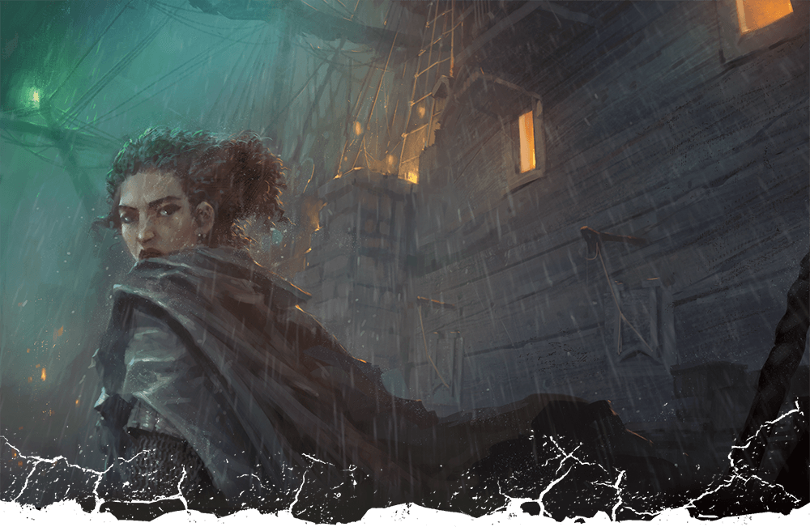
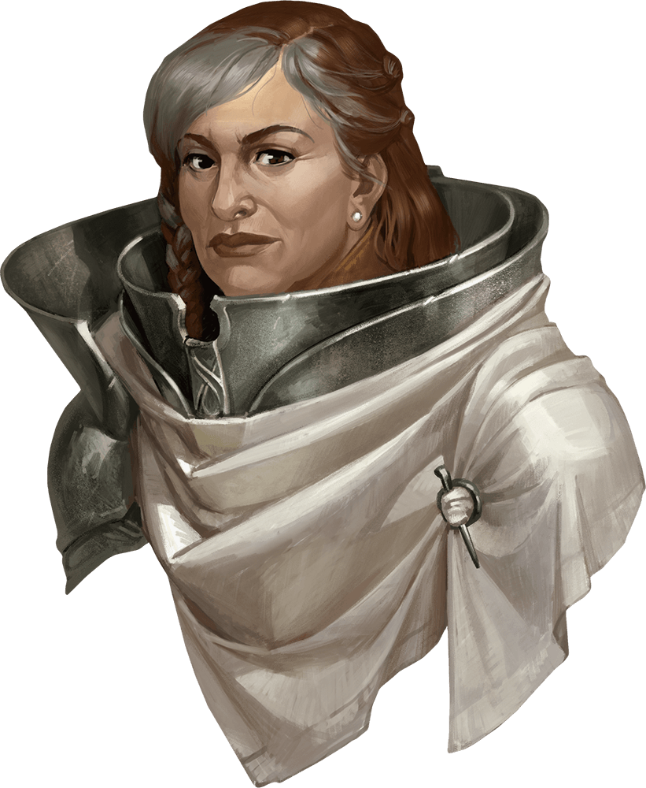
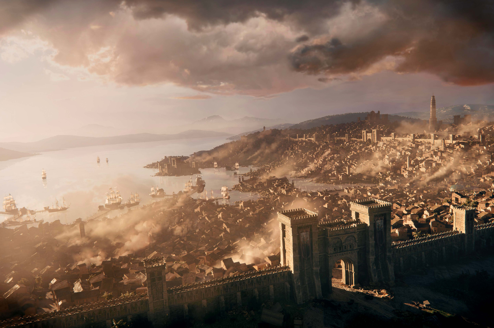
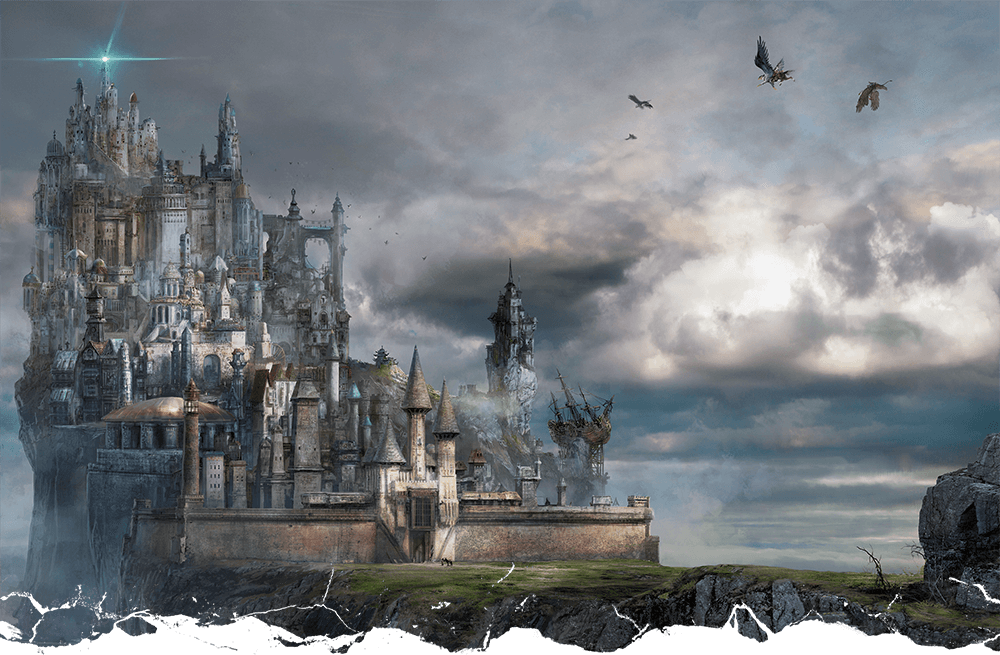
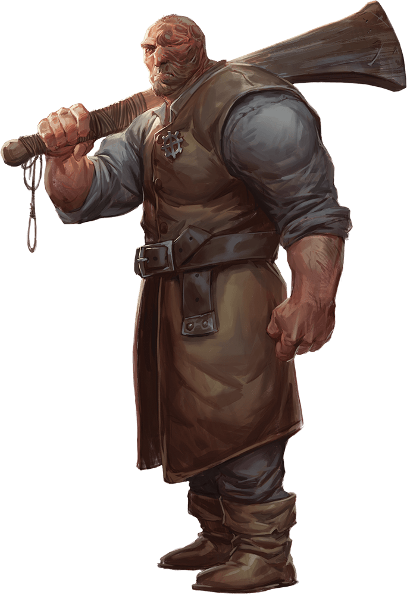
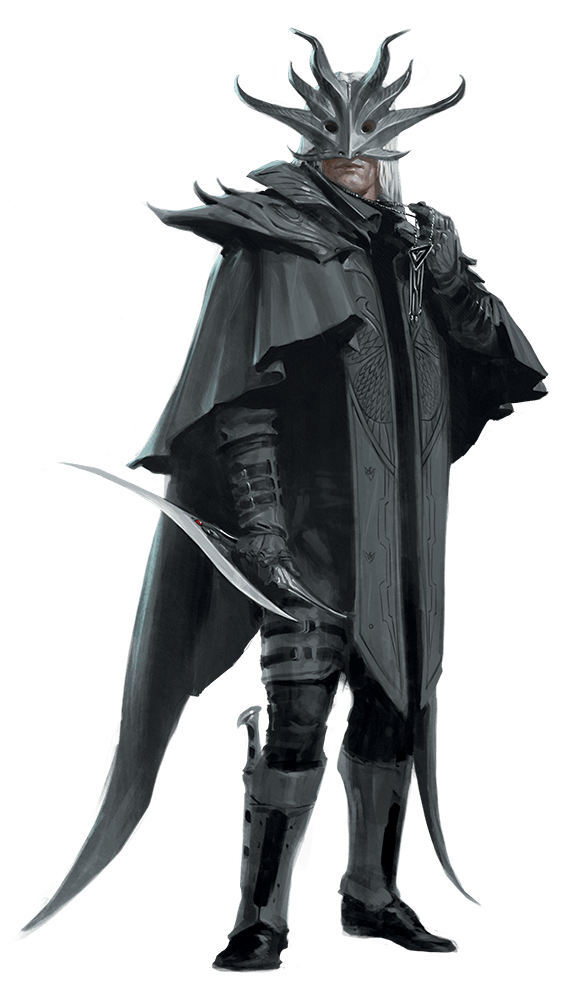
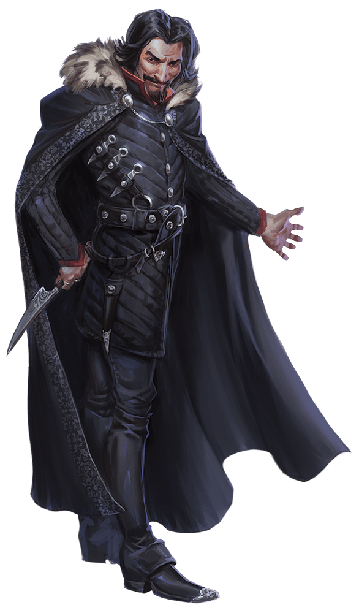
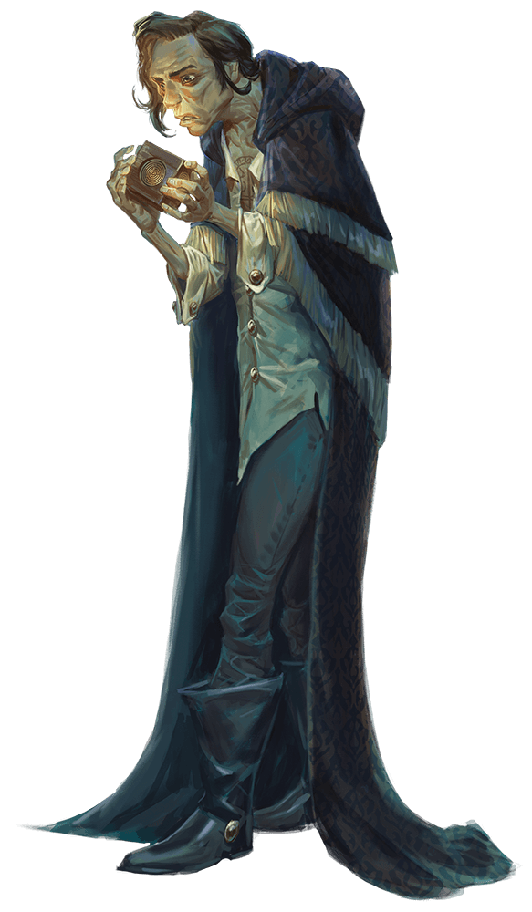
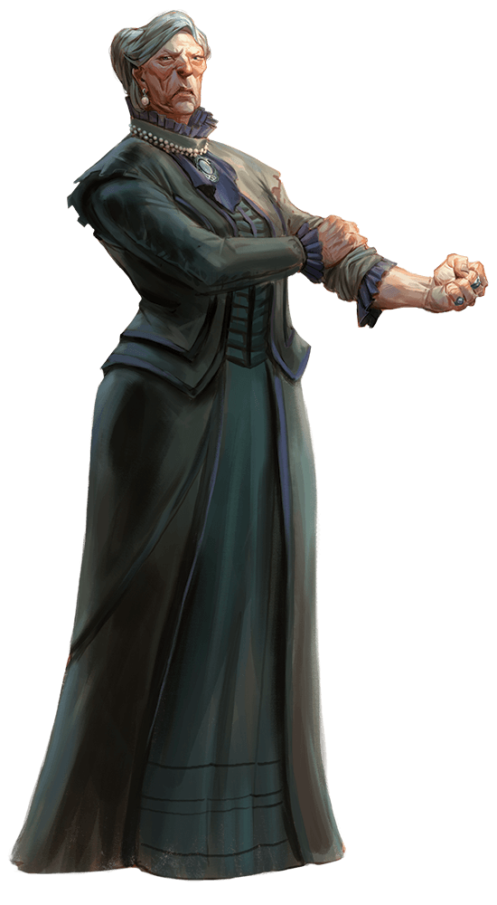
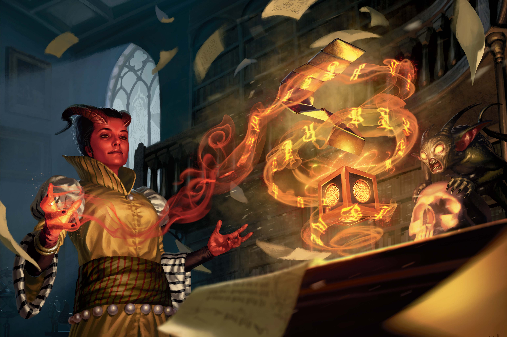

지도 1.1: 발더스 게이트(Map 1.1: Baldur's Gate)


발더스 게이트(Baldur's Gate)는 원래 상인들이 "유령 등대지기"와 만나던 항구 마을로 시작했다. 유령 등대지기란 소드 코스트(Sword Coast) 연안에서 등불로 안개에 갇힌 배를 해안으로 유인하는 사람들이었다. 그 배들이 좌초하면, 유령 등대지기들은 난파선을 뒤져 약탈한 물품을 치온타르 강(River Chionthar)의 북쪽 굽이에 자리한 발더스 게이트로 운반하여 팔았다. 그 이래로 발더스 게이트는 성벽으로 둘러싸인 도시로 성장했다. 오늘날 안개 낀 거리에는 사악한 기회주의자들의 희생양이 된 불행한 자들의 피가 붉게 흐른다. 그 기회주의자들 중 다수는 스스로를 귀족, 상인, 해적, 암살자라 칭한다. 화염 주먹단(Flaming Fist)이라 불리는 용병 군대가 도시의 치안을 유지하며, 이 병사들은 대공작 울더 래번가드(Grand Duke Ulder Ravengard)에게 보고한다. 화염 주먹단 단원들은 정의 따위에 관심이 없다. 그들이 갈망하는 것은 권력과 돈, 그것뿐이다. 하지만 주먹단의 잔인한 평판에도 불구하고, 대공작은 명예롭고 합리적인 인물로 널리 여겨진다.
엘투렐(Elturel)은 엘투르가드(Elturgard)의 수도로, 치온타르 강을 따라 훨씬 내륙에 위치해 있다. 발더스 게이트가 독사의 소굴이라는 명성을 정당하게 얻은 반면, 엘투렐은 신앙, 질서, 고급 문화의 등불로 여겨진다. 두 도시는 오랜 세월 격렬한 경쟁을 견뎌왔는데, 이는 발더스 게이트가 엘투렐을 오가는 선박의 화물과 재화를 가로채면서 시작되었으며, 이로 인해 엘투렐의 해상 무역이 위축되었다. 발더스 게이트와 엘투렐 사이의 갈등이 공공연한 전쟁으로 치달은 적은 없지만, 두 도시의 관계는 오랫동안 긴장 상태였다 — 일부의 말에 따르면, 너무 오랫동안.

열흘 전, 대공작 울더 래번가드는 화염 주먹단 병사들을 이끌고 엘투렐로 외교 임무를 떠나며, 엘투렐의 대감독관 타비우스 크리그(High Overseer, Thavius Kreeg)의 공식 초청을 수락했다. 하지만 래번가드가 기꺼이 떠난 것은 아니었다. 발더스 게이트 통치 기구인 사인 의회(Council of Four)의 다른 세 공작이 그를 설득해 초청을 수락하고 도시를 자신들의 유능한 손에 맡기도록 하는 데 수개월이 걸렸다. 탈라므라 반탐푸르(Thalamra Vanthampur) 공작부인이 특히 설득에 적극적이었으며, 귀족과 평민 지도자들의 청원서를 수집하기까지 했다.
래번가드가 엘투렐에 도착한 지 얼마 지나지 않아, 그 도시는 구층지옥(Nine Hells)으로 끌려 내려갔다 — 지도에서 완전히 사라진 것이다. 두 도시 사이의 거리를 감안하면, 엘투르가드에서 온 피난민들이 떼를 지어 도착하기 시작할 때까지 발더스 게이트 주민들이 엘투렐의 운명을 듣지 못한 것은 놀랍지 않다. 엘투렐의 실종에 관한 소문은 들불처럼 퍼져, 발더스 게이트가 다음 차례가 될 것이라는 공포를 부채질했다. 동시에, 강력한 지도자를 갑자기 잃은 화염 주먹단의 대열에도 공황이 퍼졌다.
대공작의 부재 중, 발더스 게이트의 정부는 남은 세 공작 — 벨린 스텔메인(Belynne Stelmane), 딜라드 포르티르(Dillard Portyr), 탈라므라 반탐푸르 — 아래에서 계속 기능하고 있다. 포르티르 공작은 조카인 리아라 포르티르(Liara Portyr)를 촐트(Chult)의 벨루아리안 요새(Fort Beluarian) 화염 주먹단 사령관 직위에서 소환하기까지 했으며, 그녀가 화염 주먹단을 통제할 수 있기를 바라고 있다. 그러나 그녀의 배가 도착하려면 시간이 걸릴 것이다. 한편 엘투르가드에서 온 피난민들은 엘투렐이 있던 자리에 구덩이 외에는 아무것도 남지 않았다는 끔찍한 주장과 함께 계속 도착하고 있다.
엘투르가드를 탈출한 이들 중에는 여러 명의 헬라이더(Hellrider)가 있다 — 엘투렐을 수호하겠다고 맹세한 성기사들이다. 이 전사들은 엘투렐이 몰락할 때 도시 안에 없었기에 도시의 운명을 피했을 뿐이며, 화염 주먹단은 그들이 발더스 게이트에서 소동을 일으킬까 봐 발견 즉시 체포하고 있다. 하지만 헬라이더들은 순순히 체포되지 않으며, 이로 인해 폭력과 유혈 사태가 벌어지고 있다.
울더 래번가드가 그들을 억제하지 못하게 되자, 화염 주먹단 대위들은 질서 유지라는 허울 아래 자율권을 잔인하게 행사하고 있다. 그들은 피난민의 "위협"으로부터 발더스 게이트를 보호한다는 명목으로 외성문을 닫아, 사실상 발더스 게이트 시민들을 자기 성벽 안에 가두어 버렸다. 화염 주먹단이 피난민 위기에 정신을 빼앗긴 사이, 시민들은 죽은 삼신(Dead Three) — 사악한 신 베인(Bane), 바알(Bhaal), 미르쿨(Myrkul) — 의 광신도들에 의해 거리에서 사냥당하고 살해되고 있다. 화염 주먹단이 그들을 억제하지 못하자, 이 광신도들은 대담해져 이제 도시 안에서 자유롭게 움직이며, 그 활동은 반탐푸르 공작부인에 의해 비밀리에 자금 지원과 지원을 받고 있다.
발더스 게이트에 가장 먼저 도착한 피난민 중 한 명은 다름 아닌 엘투렐 멸망의 설계자인 타비우스 크리그였다. 반탐푸르 공작부인은 발더스 게이트가 엘투렐과 같은 운명에 처할 때까지 자기 저택 지하 감옥에 크리그를 숨겨주고 있다. 크리그와 마찬가지로, 반탐푸르 가문은 아베르누스(Avernus)의 대악마 자리엘(Zariel)에게 확실히 빚을 지고 있다. 아베르누스에서 자리엘의 하수인들이 티아마트(Tiamat)의 보물더미에서 빼돌린 자금을 사용하여, 반탐푸르 공작부인은 죽은 삼신의 광신도들을 고용해 소동을 일으키는 한편, 그녀의 아들들은 도시 아래 무덤에서 숨겨진 군주의 방패(Shield of the Hidden Lord)를 훔쳤다. 이 마법 방패의 힘을 이용하여, 반탐푸르 공작부인과 타비우스 크리그는 동반자(the Companion)가 엘투렐에 사용된 것과 같은 방식으로 발더스 게이트의 몰락을 초래할 수 있다고 믿고 있다. 이 방패에는 가르가우스(Gargauth)라는 강력한 악마의 정수가 묶여 있으며, 발더스 게이트에서의 그의 존재가 도시 주민들 마음속의 악을 많이 조장해 왔다.
발더스 게이트를 구하려면, 모험자들은 죽은 삼신의 광신도들을 물리치고, 그들의 사악한 후원자를 추적하며, 반탐푸르 공작부인에게서 숨겨진 군주의 방패를 빼앗고, 구층지옥으로 대공작 울더 래번가드를 쫓아가야 한다.


도표 1.1은 이 장의 주요 사건을 순서대로 보여주는 흐름도이다. 모험자들은 1레벨 캐릭터로 시작하여, 엘프송 선술집(Elfsong Tavern)의 조우에서 살아남으면 2레벨로, 죽은 삼신의 지하감옥을 정복한 후 3레벨로 올라간다. 낮은 등대(Low Lantern)와 반탐푸르 저택(Vanthampur Villa)에서 극복해야 할 도전은 4레벨로 올리기에 충분하다. 저택 아래의 하수도 단지를 정복하고 캔들킵(Candlekeep)에서 귀중한 정보를 얻은 후, 캐릭터들은 제2장에서 구층지옥에 진입하기 전에 5레벨로 올라간다.
플레이어들에게 모험을 시작하기 위해 다음 박스 텍스트를 읽어주거나 자유롭게 의역하라:
발더스 게이트에 오신 것을 환영한다. 치온타르 강이 내려다보이는 바위 경사면에 달라붙은, 그야말로 쥐와 독사의 소굴이다. 상류 도시(Upper City)의 높은 자리에서, 파트리아르(patriar)로 불리는 현지 귀족들은 안개 낀 항구에 들러붙은 지저분한 하류 도시(Lower City)의 하층민을 감추어진 경멸로 내려다본다. 발더스 게이트 전체가 피, 범죄, 기회의 악취를 풍긴다. 해적과 상인들이 시체에 파리 끓듯 이곳으로 모여드는 이유를 쉽게 짐작할 수 있다.
강을 따라 더 동쪽으로 가면 성스러운 땅 엘투르가드의 수도 엘투렐에 이르게 된다 — 아니, 적어도 며칠 전까지는 그랬다. 도시가 함락되었다는 소식이 처음 전해진 이래로 엘투렐에서 오는 피난민의 홍수는 더욱 거세졌다. 모두들 발더스 게이트가 다음이라고 말하지만, 엘투렐을 집어삼킨 것이 무엇인지 혹은 누구인지 진정으로 아는 사람은 없다.
파트리아르들은 화염 주먹단이라는 용병 군대에 돈을 내어 자신들의 이익과 — 나아가 도시 자체를 보호하게 한다. 카리스마 넘치는 지도자 울더 래번가드가 몇 년 전 대공작 칭호를 차지한 이래, 화염 주먹단은 더 큰 권력을 얻었다. 래번가드는 현재 실종 상태인 것 같다. 그의 부재 중에, 화염 주먹단은 피난민의 유입을 막기 위해 도시의 성문을 봉쇄했다. 어느 누구도 출입이 허용되지 않는다.
이 모든 것은 당신이 도시 방어를 돕기 위해 화염 주먹단에 징집된 직후에 알게 되었다. 명령은 도시의 동쪽 성벽을 관통하는 바실리스크 문(Basilisk Gate)에서 조지 대위(Captain Zodge)에게 보고하라는 것이다. 이 문은 벽감과 성가퀴 위에 자리한 다양한 석상에서 이름을 따왔다. 봉쇄된 바실리스크 문 너머로는 보이지 않지만, 비포장도로가 외곽 도시(Outer City) 빈민가를 지나 웜 횡단교(Wyrm's Crossing)로 불리는 다리까지, 그리고 그 너머 먼 영역으로 뻗어 있다.
수십 명의 화염 주먹단 병사들이 도시를 떠나려는 성난 평민 군중을 통제하려 하고 있다. 키가 크고 긴 검은 머리에 가죽 안대를 한 남자라는 조지 대위의 모호한 인상착의만 가진 채, 그를 찾는 데는 시간이 좀 걸린다. 병사들과 평민들 사이에 싸움이 벌어지고, 마침내 한쪽 눈의 대위가 난투 속으로 뛰어들어 주먹을 휘두르기 시작하는 것을 발견한다. 피의 도시(City of Blood)의 또 다른 평범한 하루일 뿐이다.
엘투르가드 피난민의 유입과 대공작 울더 래번가드의 운명에 대한 불확실성이 결합되어, 다르민 조지 대위(Captain Darmin Zodge) — 성향이 질서 악인 인간 베테랑(veteran) — 는 앞으로 다가올 날들에 라이벌이 기회를 잡기 전에 화염 주먹단을 이끌 자격이 있음을 증명하기로 마음먹었다. 조지는 또한 촐트의 벨루아리안 요새에서 화염 주먹단 거점을 지휘하는 리아라 포르티르가 삼촌인 딜라드 포르티르 공작에 의해 발더스 게이트로 소환되었다는 사실을 알고 있다. 조지는 포르티르 사령관이 도착할 때까지 발더스 게이트의 평화를 유지하는 능력을 보여 그녀에게 좋은 인상을 주고 싶어 한다.
조지에게는 일반적인 예의범절이 없지만, 자기 지휘 아래 복무하는 병사들의 안녕은 신경 쓴다. 성난 군중은 위험할 수 있으며, 조지는 군중의 분노가 공포로 빠르게 전환되도록 선동자들을 신속히 제압한다. 캐릭터들이 목격한 소요 중 체포된 사람은 없지만, 여러 평민이 조지와 그의 병사들과의 짧은 충돌 후 구타당하고 돈주머니를 빼앗겼다. 플레이어들에게 조지의 상황 처리에 대해 캐릭터들이 놀라지 않을 것임을 전달하라. 화염 주먹단 대위들은 발더스 게이트의 치안 유지에 있어 특히 하류 도시에서 엄청난 재량권을 가진다.
화염 주먹단 병사들을 상대하는 가장 좋은 방법이 뇌물이라는 것은 널리 알려져 있다. 일반적인 통행료 2cp 대신 10gp 이상의 뇌물을 낼 여유가 있는 사람은 약간의 흥정 후 성문 통과를 허가받는다.
조지 대위는 캐릭터들을 기다리고 있다. 그들이 그에게 말하지 않기로 선택하면, 그는 결국 그들을 추적한다. 화염 주먹단은 도시 전역에 정보원을 두고 있으므로, 캐릭터들을 숨겨줄 수 있는 사람을 알지 않는 한 조지를 피하기는 어렵다. 조지는 항상 여섯 명의 화염 주먹단 병사(인간 베테랑)를 곁에 두고 있다. 그들의 이름은 이시오(Issio), 미나콰(Minaqua), 넬레스트리(Nelestree), 올리버(Oliver), 솔투스(Soltus), 탈카라(Thalkara)이다.
군사력을 과시하거나 뇌물을 받지 않을 때, 조지 대위는 솔직하고 냉정한 인물로, 자신이 요구하는 것과 같은 존중으로 타인을 대한다. 캐릭터들이 그의 말을 들을 준비가 되면, 다음 박스 텍스트를 소리 내어 읽어준다:
"피난민 위기가," 조지 대위가 말한다, "발더스 게이트가 엘투렐과 같은 운명에 처할지 모른다는 공포를 부추기고 있소. 엘투렐에는 명백히 땅에 구멍만 남았다고 하오. 우리의 대공작 울더 래번가드는 도시가 파괴될 때 외교 임무차 엘투렐을 방문 중이었소. 우연의 일치? 나는 그렇게 생각하지 않소.
"엘투르가드의 기사들은 스스로를 헬라이더라 부르지. 그들 중 몇이 파괴에서 살아남아, 엘투렐의 몰락이 어떻게든 우리 탓이라고 생각하오. 정말 독선적인 선동가들이지! 발견 즉시 체포하고 있지만, 그 때문에 다른 문제를 처리할 인력이 부족하오. 바로 그 일에 당신들의 도움이 필요하오."
조지 대위는 어떠한 거절도 받아들이지 않는다. 화염 주먹단은 비상시에 모험자를 징집할 권한이 있다. 도움을 거부하면 그 자리에서 처형할 수도 있지만, 그보다는 자발적 수락을 원한다. 그는 각 캐릭터에게 화염 주먹단의 문장이 새겨진 구리 휘장을 준다. 이 휘장은 캐릭터들에게 조지의 이름으로 행동할 수 있는 권한을 부여한다.
캐릭터들이 더 들을 준비가 되면 다음 박스 텍스트를 소리 내어 읽어준다:
"발더스 게이트는 오랫동안 죽은 삼신 — 베인, 바알, 미르쿨 — 의 추종자들에게 시달려 왔소. 우리가 그들을 소탕했다고 생각했는데, 아니었던 모양이오. 이 공포와 죽음의 전파자들이 현재의 위기를 틈타 도시 전역에서 살인 행각을 벌이고 있소. 이 건에 관한 나의 임명 대리인으로서, 당신들에게는 이 비열한 자들을 발견 즉시 처치할 수 있는 권한이 있소. 그들의 소굴을 찾아 소탕하시오. 방해하는 자는 누구든 제거하고, 부수적 피해는 걱정하지 마시오.
"내가 시키는 대로 한다면, 각자에게 200골드 피스를 지급하도록 하겠소. 여기에 내 감사함까지 얹어주지. 이쪽이 훨씬 더 가치 있을 것이오.
"바실리스크 문에서 몇 블록 떨어진 곳에 엘프송 선술집이 있소. 타리나라는 첩자가 거기서 길드(the Guild)를 위해 소문을 수집하며 어슬렁거리고 있지. 그녀가 내게 신세를 지고 있으니, 나를 위해 일한다고 말하시오. 죽은 삼신에 대해 아는 것을 물어보시오. 그리고, 발두란(Balduran)의 이름에 걸고 예의 바르게 하시오. 타리나에게는 위험한 친구들이 있소."
죽은 삼신 추종자들의 공격 보고가 열흘간 없으면, 조지는 캐릭터들에게 지불할 자금을 확보하여 약속을 이행한다. 지불 전에 휘장을 회수한다.
캐릭터들은 조지 대위의 바람대로 엘프송 선술집을 방문하거나, 원하는 대로 다른 일을 할 수 있다. 선술집에서의 목표는 타리나라는 첩자와 접촉하여 죽은 삼신에 대해 아는 바를 알아내는 것이다.
조지에게는 캐릭터들의 진행 상황을 알려주는 첩자들이 있다. 캐릭터들이 명령을 받은 후 48시간 이내에 엘프송 선술집을 방문하지 않으면, 조지는 여섯 명의 화염 주먹단 베테랑과 불꽃해골(flameskull) 하나로 구성된 분대를 보내 캐릭터들을 선술집으로 호송하고, 가기를 거부하는 자는 처치하며, 그에게 보고하도록 한다. 캐릭터들이 이 분대를 격파하거나 도주하면, 조지는 두 개의 분대를 추가로 동원하여 그들을 추적한다.
엘프송 선술집의 위치는 지도 1.1에 표시되어 있으며, 지도 1.2는 내부를 보여준다.
때때로, 여성 엘프의 실체 없는 목소리가 선술집을 우울한 노래로 채우며, 이것이 이 술집의 이름이 되었다. 그 발라드는 대화를 방해할 만큼 크지는 않지만, 대부분의 손님들은 엘프의 노래가 시작되면 말을 멈추고, 끝난 후에야 다시 대화를 이어간다. 많은 단골이 그 노래를 듣기를 바라며 선술집을 찾는다. 엘프어를 할 줄 아는 사람은 바다에서 잃어버린 이름 모를 연인을 애도하는 가사를 이해할 수 있다. 어떻게 그 영혼이 선술집에 깃들게 되었는지 아는 사람은 없으며, 언제 다시 노래할지 예측할 수 있는 사람도 없다.
앨런 알리스(Alan Alyth)는 선술집의 현재 주인이자 운영자로, 중립 성향의 반요정(half-elf) 평민(commoner)이며 60피트 범위의 어둠시야를 가지고 있다. 앨런은 최근 75세가 되었으며 수십 년간 이 술집을 운영해 왔다. 반요정 어머니를 통한 요정의 피가 그를 이토록 오래 살게 했으며, 같은 나이의 순수 인간 대부분보다 좋은 외모를 유지하게 해준다. 그는 부업으로 신뢰하는 손님들에게 돈을 빌려주는 대금업을 한다. 모험자들에게 대출해 주는 일은 드문데, 그들이 얼마나 변덕스러운지 알기 때문이다. 하지만 그들의 칼을 칼집에 넣어둘 수 있다고 생각하면 엘버키스트(elverquisst) 와인 한 잔을 무료로 제공할 수도 있다("발더스 게이트의 선술집" 사이드바 참조).
캐릭터들이 조지 대위의 정보원 타리나를 찾아 엘프송 선술집에 오면, E7 구역에서 카드를 치고 있는 그녀를 발견한다. 수십 명의 다른 손님들 사이에서 쥐 몇 마리가 돌아다니는 것을 알아차리며, 또한 다음과 같은 주목할 만한 NPC들을 발견한다. 이들은 모험에서 역할이 없지만 적절하다고 판단되면 이야기에 끌어들일 수 있다:
캐릭터들이 선술집 단골인 타리나를 찾는 데 도움이 필요하면, 2층으로 안내받는다("타리나와의 거래" 참조).

아래 구역 설명은 지도 1.2의 표기에 해당한다.
앨런 알리스가 바를 맡고, 폴텐(Falten)과 이미우르(Yimiur)라는 두 젊은 남자(인간 평민)가 주문을 받고, 테이블에 음료와 음식을 배달하고, 손님들과 농담을 한다. 입구 양쪽에는 두 명의 경비원이 있다: 클랭크(Klank)라 불리는 움직이는 갑옷(animated armor) 한 벌과, 무뚝뚝한 여성 반오우거(half-ogre) 스쿠나(Skoona)이다. 이 둘은 손님이 아닌 다른 직원들을 보호하기 위해 있으며, 직원이 관련되지 않는 한 싸움을 말리지 않는다.
잘 무장한 손님들(대부분 평민과 깡패)이 메인 룸의 테이블과 개인 부스에 모여 있다. 쿠션이 깔린 의자 세 개가 동쪽 벽의 벽난로를 향해 놓여 있으며, 그 위로 2층으로 올라가는 삐걱거리는 나무 계단이 있다. 북쪽 벽의 소파에는 보통 취한 누군가가 쓰러져 있다. 소파 옆에는 나무 궤짝이 있어 다양한 게임(드래곤체스 보드, 낡은 쓰리 드래곤 안테 카드 덱 등)이 들어 있다.
엘프송 선술집 어디서든 흡연이 허용되지만, 이 라운지는 퍼퍼 피셔스(Puffer Fishers)라는 지역 흡연 동호회 회원들이 좋아하는 장소이다. 동호회 회원 대부분은 지역의 어부와 게잡이꾼이다.
이 방은 남쪽 벽에 걸린 어린 녹색 용(young green dragon)의 박제 머리 때문에 그린 드래곤 룸(Green Dragon Room)이라 불린다.
과일 상자, 깨끗한 물통, 시럽과 기름 통이 여기에 보관되어 있다.
이 방에는 식료품과 향신료 상자, 청소 걸레, 빗자루, 부서진 의자, 가구 수리 도구가 있다.
앨런 알리스는 식사를 준비하기 위해 세 명의 요리사(평민)를 고용하고 있다: 쾌활한 스트롱하트 하플링 총주방장 체나 팻래빗(Chenna Fatrabbit), 까칠한 인간 부주방장 아자르 발시임(Azar Valsheem), 시각 장애인 인간 제과장 클라브 마르틸무르(Klav Martilmur)이다. 그들은 정오부터 자정까지 일한다. 특선 요리는 생선전, 게전, 진한 치즈-감자 수프, 시럽에 적신 빵 푸딩에 살짝 소금 간을 한 아몬드를 올린 것이다.
이 창문 없는 방에는 불 켜진 랜턴이 서까래에 매달려 있다. 양탄자가 나무 바닥을 덮어 두 개의 큰 테이블에 모여 먹고 발두란의 뼈를 하는 술 취한 손님들의 소음을 줄여 준다("발더스 게이트의 선술집" 사이드바 참조).
계단에서 가장 가까운 테이블에 앉은 사람들 중 하나가 캐릭터들이 찾는 NPC인 타리나이다("타리나와의 거래" 참조).
이 방은 동쪽 벽에 걸린 엄버 헐크(umber hulk) 박제 머리를 따서 엄버 헐크 룸(Umber Hulk Room)이라 불린다.
이 방은 현재 비어 있으며, 문이 잠겨 있다. 앨런은 손님에게 빌려주는 열쇠 외에 모든 문을 여는 마스터 키를 가지고 있다. 자물쇠를 따려면 도둑 도구와 DC 10 민첩(Dexterity) 판정에 성공해야 한다.
화려하게 꾸며진 이 방에는 벨벳 커튼, 배를 그린 액자 그림, 천개가 있는 침대, 야간 탁자, 궤짝, 옷장이 있다. 서쪽 문은 개인 식당으로 통한다.
동쪽 벽에 걸린 변위수(displacer beast) 박제 머리와 가까운 작은 장롱에서 이름을 따 디스플레이서 비스트 룸(Displacer Beast Room)이라 불린다.
이 방에는 특이한 손님이 있다: 오샬라(Oshalla)라는 사후아긴(sahuagin) 사제이다. 그녀는 어망으로 만든 망토를 입고 있으며, 공용어와 사후아긴어를 구사한다. 자기 왕에 대한 쿠데타를 꾀하다 심해에서 추방당했다.
오샬라는 혼자 지내며 하루 세 번 식사를 방으로 가져오게 한다. 방문은 잠겨 있으며, 그녀는 열쇠를 목에 걸은 끈에 차고 다닌다. 앨런은 이 문도 열 수 있는 마스터 키를 가지고 있다. 자물쇠를 따려면 도둑 도구와 DC 10 민첩 판정에 성공해야 한다.
침대, 야간 탁자, 궤짝 외에도 이 방에는 책상, 의자, 여러 점의 해안 및 수중 풍경화, 이동식 욕조, 10피트 길이에 8피트 높이의 책장이 있어 오샬라가 바다에서 수집한 장신구(조개, 따개비가 붙은 해골 등)가 보관되어 있다. 오샬라는 선술집 직원이 자기 방을 청소하거나 욕조의 물을 교체하는 것을 허용하지 않으므로, 둘 다 불결하다.
책상 서랍을 수색한 캐릭터는 66gp와 49sp가 들어 있는 상어 가죽 주머니를 발견한다. 오샬라는 이 돈으로 식비와 숙박비를 지불한다. 남쪽 벽에 기대어 있는 작은 나무 궤짝에는 사후아긴이 숭배하는 상어 신 세콜라(Sekolah)의 신전이 들어 있다. 궤짝 내부는 상어 이빨로 장식되어 있으며, 붉은 진주가 눈으로 박힌 5파운드 산호 세콜라 조각상(예술품으로 250gp 가치)이 들어 있다.
이 두 방의 문은 잠겨 있다. 앨런은 손님에게 빌려주는 열쇠 외에 두 문 모두 여는 마스터 키를 가지고 있다. 어느 쪽이든 자물쇠를 따려면 도둑 도구와 DC 10 민첩 판정에 성공해야 한다.
각 방에는 아늑한 침대, 빈 나무 궤짝, 창문에 커튼이 있다.
앨런은 자기 침실 문을 여는 마스터 키를 가지고 다닌다. 자물쇠를 따려면 도둑 도구와 DC 15 민첩 판정에 성공해야 한다.
앨런의 방에는 정교한 철제 프레임 침대, 발톱 모양 다리의 궤짝, 야간 탁자, 옷장이 있다. 옷장 앞 바닥에는 질식 양탄자(rug of smothering)가 펼쳐져 있어, 앨런이 아닌 다른 사람이 그 위를 밟거나 궤짝을 열면 공격한다.
궤짝 내부는 세 칸으로 균등하게 나뉘어 있으며, 각각 91gp, 176sp, 288cp가 들어 있다. 앨런은 이 돈으로 직원에게 급여를 지급하고 선술집을 유지한다.
타리나는 간교한 지능을 가진 혼돈 악 성향의 인간 강도(bandit)이다. 그녀는 E7 구역의 테이블에서 지역 멍청이들과 정기적으로 발두란의 뼈를 하고 있다("발더스 게이트의 선술집" 사이드바 참조). 도박 동료들은 그녀가 속임수를 쓰고 있다는 것을 모른다.
"타리나"는 물론 본명이 아니다. 발더스 게이트에 은퇴하기 전, 타리나는 론다 선더벨(Rhonda Thunderbell)이라는 이름(이것도 본명이 아니다)으로 알려진 해적이었다. 무례한 뱀호(Uncivil Serpent)의 무로스코 세스프린(Murosko Sessprin) 선장을 충실히 섬긴 후, 동료 해적의 전리품을 훔치고 그들이 막기 전에 도주했다. 그 전리품의 대부분은 최근 몇 년간 써버렸지만, 배고플 일은 없을 만큼은 챙겨 두었다. 그녀는 또한 지역 도둑 길드의 길드장인 나인 핑거스(Nine-Fingers)와 좋은 관계를 유지하고 있으며, 간간이 그녀에게서 일을 받는다.
타리나는 최근 옛 동료들이 자신을 발더스 게이트까지 추적해 왔다는 소문을 들었다. 캐릭터들이 엘프송 선술집에 머물며 해적들이 나타나는지 지켜보고, 나타나면 모두 처치해 준다면 정보를 제공하겠다고 제안한다.
타리나의 옛 동료들이 정확히 언제 도착하는지는 DM이 결정하지만, 그들이 나타나기 전에 캐릭터들에게 약간의 자유 시간이 있어야 한다("이런 친구라면"에서 설명). 선술집에서 어슬렁거리는 캐릭터들은 손님들이 발더스 게이트의 현재 상황과 엘투렐의 소문에 대해 이야기하는 것을 엿들을 수 있다:
타리나의 동료들이 도착하기 전 어느 시점에, 선술집에 깃든 엘프 영혼의 유령 같은 비가가 선술집을 가득 채운다. 하지만 이번 한 번은, 영혼이 노래하는 것은 오랫동안 잃어버린 연인이 아니라 엘투렐에 대한 것이다. 이 사실은 앨런 알리스를 포함하여 모두를 놀라게 한다. 그는 영혼이 곡조를 바꾸는 것을 한 번도 들어본 적이 없었다. 엘프어를 이해하는 캐릭터는 가사를 번역할 수 있다:
오, 엘투렐의 노래를 부르자
물과 숲과 언덕의 노래를
붉은 절벽 위로 해가 떠오르고
들판은 푸르고 고요하네.
이 오래 이어진 기쁨의 땅
강하고 용감한 이들의 고향
온 세상에 이름 드높으며
단 한 번도 노예가 된 적 없네.
오, 엘투렐의 노래를 부르자
적이 문 앞에 왔을 때
갈라진 발굽이 들판을 찢으니
어느 지옥의 해안에서 왔는가.
일어나라, 위대한 헬라이더여
빠르고 날카로운 검을 들어라
지옥의 전투에 돌격하여
악마의 무리를 흩뿌리라.
오, 엘투렐의 노래를 부르자
밤이 찾아올 때
동반자의 빛 아래 편히 잠들라
새벽이 부를 때까지.
우리는 필멸의 서약에 묶여
오직 죽음으로만 끝나니
그러니 엘투렐의 노래를 부르자
마지막 숨이 다할 때까지.
엘투렐에 가본 적이 있거나 DC 15 지능(역사) 판정에 성공한 캐릭터는 노래에 언급된 "동반자(the Companion)"가 엘투렐 상공에서 타오르는 인공 태양에 붙여진 이름으로, 도시와 주변 땅을 언데드로부터 보호한다는 것을 알고 있다.
노래를 들은 후 앨런에게 말을 걸면 노래에 대해 물어볼 수 있다. 그도 공용어 외에 엘프어를 하기 때문이다. 하지만 가사의 변화에 너무 놀란 나머지 일부만 기억한다. 영혼은 노래를 두 번째로 부르겠지만, 엘프나 반요정이 그에게 간청하고 DC 10 매력(설득) 판정에 성공한 경우에만 그렇다.
노래에서 앨런의 기억에 남은 단어가 하나 있다: "헬라이더." 캐릭터들은 조지 대위가 엘투렐의 기사들을 설명할 때 이 용어를 사용했던 것을 기억할 수 있다. 앨런과 발더스 게이트의 대부분 주민도 이 단어를 비슷하게 사용한다. 엘투렐에 가본 적이 있거나 DC 20 지능(역사) 판정에 성공한 캐릭터는 헬라이더라는 이름이 오래전 그들이 악마와 싸우기 위해 말을 타고 구층지옥으로 내려갔을 때 붙여졌음을 기억한다. 그들 대부분은 돌아오지 못했다. 앨런의 다른 손님들 중 누군가가 이 역사적 사실을 알고 있을 수도 있다.
타리나의 해적 친구들을 기다리는 캐릭터들은 때가 되면 보상을 받는다. 해적들이 도착할 때 플레이어들에게 다음을 읽어준다:
잡다한 인간 여덟 명이 선술집으로 유유히 걸어 들어온다. 두목은 흐린 오른쪽 눈, 잔인한 비웃음, 해적 특유의 거드름을 가진 건장한 남자이다. 나머지는 마치 이 곳의 주인이라도 되는 양 행동하는 불쾌하고 소란스러운 무리이다.
"옛 친구를 찾고 있소," 죽은 눈의 남자가 말한다. 코를 킁킁거린다. "'타리나'라고 하는데, 그렇게 들었소. 발두란의 뼈에서 속임수를 쓰는 것을 즐긴다지."
무로스코 세스프린 선장은 6개월 전 반란 중에 살해되었고, 그의 배 — 무례한 뱀호 — 는 세스프린의 배신적인 일등 항해사 레카드 "데드아이" 카다브루스(Lekard "Dead-Eye" Cadavrus)의 지휘 하에 놓였다. 데드아이는 중립 악 성향의 산적 두목(bandit captain)으로, 백내장이 낀 오른쪽 눈이 별명의 유래이다. 목욕을 싫어하며 입에서 썩은 생선 냄새가 난다. 그의 사악한 성향을 공유하는 일곱 명의 산적(bandit)이 동행한다.
데드아이는 타리나의 위치에 대한 정보를 대가로 큰 잔의 맥주를 제안하며, 여러 선술집 손님이 기꺼이 수락한다. 캐릭터들은 원한다면 해적들에게 맞설 수 있지만, 데드아이는 자신과 복수 사이에 누구도 끼어들게 하지 않을 것이다. 두 명의 해적이 타리나가 도주하지 못하도록 출구를 감시하고, 나머지는 데드아이의 길을 막는 자를 공격한다.
데드아이는 타리나를 발견 즉시 죽이려 한다. 앨런도 경비원들도 직원이 연루되지 않는 한 싸움에 개입하지 않는다. 다른 손님들은 가능한 한 싸움에서 벗어나지만, 캐릭터는 행동으로 우호적이거나 무관심한 NPC 한 명에게 뇌물을 주어 합류시킬 수 있다. DC 15 매력(설득) 판정 — 또는 제안이 진심이 아닌 경우 매력(기만) 판정 — 에 성공하면, NPC는 뇌물을 수락하고 주도권을 굴린 후, 다음 턴에 전투에 참여하여 전투가 끝날 때까지 캐릭터 편에 선다. 약속된 보수가 10gp 이상이면 이 판정에 이점이 있다. 데드아이도 같은 전술을 사용하여 선술집 손님을 돈으로 자기 편으로 끌어들일 수 있다.
캐릭터들은 데드아이에게 복수를 포기하고 엘프송 선술집을 떠나도록 뇌물을 시도할 수 있지만, 그는 수고비로 동전이나 물품 5,000gp를 요구한다. 캐릭터들이 다른 곳에 돈이나 물품이 있다고 주장하면, 그는 비웃으며 그들의 말을 믿지 않는다고 한다. 그는 너무 의심이 많아 그런 뻔한 속임수에 넘어가지 않으며, 누군가가 타리나의 목숨을 그토록 높이 평가할 것이라고는 도저히 믿을 수 없다.
데드아이의 조끼에는 32gp와 15sp가 든 주머니가 있다. 그는 또한 금 목걸이 두 개(각 25gp)와 흰 진주가 박힌 검게 변색된 금반지(125gp)를 착용하고 있다. 나머지 해적 각각은 1d6 sp가 든 주머니를 가지고 있다.
데드아이의 배 무례한 뱀호는 항구 동쪽의 부두 끝에 정박해 있다. 열한 명의 산적이 배를 지키고 있으며, 배에는 보물이 없다. 캐릭터들이 모든 해적을 처리하면 배를 차지할 수 있지만, 항해하려면 20명의 선원이 필요하고, 절반 이상이 수상 이동수단 숙련을 갖추어야 한다.
무례한 뱀호는 범선(sailing ship)의 능력치를 사용한다(던전 마스터 가이드 제5장 참조). 갑판 도면이 필요하면 던전 마스터 가이드 부록 C의 선박 지도를 사용한다. 배가 온전한 상태로 10,000gp의 가치가 있지만, 악명 높은 평판 때문에 발더스 게이트에서 이를 사려는 사람은 아무도 없다.
해적 친구들이 처리되면, 타리나는 다음 정보를 캐릭터들에게 공유한다:
"여기서 북서쪽으로 몇 블록 떨어진 곳에 벽으로 둘러싸인 정원과 장난치는 님프가 정문에 새겨진 공중 목욕탕이 있어요. 죽은 삼신의 추종자들이 그 목욕탕을 드나드는 것이 목격되었고, 안에 지하감옥으로 통하는 비밀문이 있다고 들었어요. 살인자들은 그곳에 숨어 있어요."
타리나가 살해되면, 캐릭터들은 그녀의 시신을 조지 대위에게 가져갈 수 있다. 조지는 사제를 주선하여 시체에 죽은 자와 대화(speak with dead)를 시전하게 한다. 시체가 아는 것을 밝히면, 조지는 그 정보를 캐릭터들에게 전달한다.
타리나 혹은 그녀의 시체가 제공한 지식으로, 캐릭터들은 목욕탕으로 가서 그 아래 숨겨진 지하감옥을 찾을 수 있다. 모험을 계속하기 전에 캐릭터들이 2레벨로 올랐는지 확인하라. 캐릭터들이 목욕탕에 도착하면, "죽은 삼신의 지하감옥" 섹션으로 진행한다.
이 파트를 진행하기 전에, 부록 D의 죽은 삼신에 대한 정보를 읽어두라. 죽은 삼신 추종자들의 스탯 블록도 거기에서 찾을 수 있다.
죽은 삼신의 지하감옥은 반탐푸르 가문이 비밀리에 소유하고 운영하는 목욕탕 아래에 숨겨져 있다. 가문의 일원인 모르틀록 반탐푸르(Mortlock Vanthampur)가 지하감옥에서 죽은 삼신 광신도들의 도시 공격을 조율하고 있다. 이 공격은 발더스 게이트 시민들에게 화염 주먹단이 그들을 보호할 수 없다는 것을 보여주기 위한 것이다.
캐릭터들이 목욕탕에 도착하면, 다음 박스 텍스트를 소리 내어 읽어준다:
목욕탕은 스테인드글라스 창문과 점토 지붕 타일을 갖춘 1층짜리 회반죽 건물이다. 10피트 높이의 벽이 건물의 남동쪽 모서리 바깥에 넓은 뜰을 둘러싸고 있다. 뜰로 통하는 닫힌 나무 문에는 물속에서 미소 짓고 춤추며 장난치는 님프의 형상이 새겨져 있다.
목욕탕 외부에는 특별히 수상한 점이 없다. 이곳은 도시에서 가장 정교한 배관 시스템 중 하나를 갖추고 있다. 뜰(D1 구역)로 통하는 문은 잠겨 있지 않고 경비도 없다. 목욕탕은 자정에 문을 닫고 새벽에 다시 열며, 도시 주민들은 낮 동안 그리고 저녁까지 자유롭게 드나든다.
Baldur's Gate: Descent into Avernus — Chapter 1: A Tale of Two Cities (Part 1)
한국어 번역본


이 장소를 플레이어들에게 다음과 같이 묘사한다:
이 L자형 안뜰에는 다듬어진 잔디밭과 정성스럽게 손질된 관목이 있다. 마당에는 흰 대리석 벤치와 석조 분수가 장식되어 있으며, 각 분수는 물동이를 기울여 원형 석조 대야에 물을 쏟는 미소 짓는 님프(nymph) 형상이다.
남동쪽 분수 위에 투명한 임프(imp)가 앉아 있다. 캐릭터들이 문제를 일으킬 것처럼 보이면, 임프는 그들이 목욕탕에 들어갈 때까지 조용히 관찰한 뒤, 상부 도시(Upper City)의 반탐푸르 저택(Vanthampur Villa)으로 날아가 써스트웰 반탐푸르(Thurstwell Vanthampur) — 탈라무라 반탐푸르(Thalamra Vanthampur) 공작부인의 장남 — 에게 경고한다. 써스트웰은 임프에게 제자리로 돌아가라고 지시하지만 그 이상의 조치는 취하지 않는다. 캐릭터들이 자기 동생 모틀록(Mortlock)을 처리해 주기를 바라기 때문이다.
새벽부터 자정까지, 이곳에는 아무 때나 1d6명의 인간 일반인(commoner)이 목욕하고 있을 수 있다. 자정부터 새벽까지는 세 명의 여성 인간 밤의 칼날(Night Blade)이 수조 근처에서 경비를 서며 무단침입자를 즉시 공격한다. 여기서 전투가 벌어지면, D4 구역의 미르쿨의 사령입문자(Necromite of Myrkul)가 전투 2라운드째에 합류한다.
이 장소를 플레이어들에게 다음과 같이 묘사한다:
이 20피트 높이의 기둥이 있는 방의 벽에는 목욕하는 왕족의 프레스코화가 장식되어 있다. 자연광이 스테인드글라스 창문을 통해 들어와, 바닥을 덮은 광택 나는 청색 대리석 타일 위에 다채로운 무늬를 만든다. 세 개의 얕고 움푹 들어간 수조에는 반짝이는 향수 향이 나는 물이 담겨 있다. 각 수조 근처에는 마른 수건이 쌓인 흰 대리석 벤치가 놓여 있으며, 수조마다 황동 수도꼭지 한 쌍이 달려 있다.
수도꼭지는 바닥 아래의 배관을 통해 온수와 냉수를 끌어온다. 각 수조 바닥의 꼭 맞는 돌마개가 물이 빠지지 않도록 한다. 움푹 들어간 수조 상단 근처의 수많은 작은 배수구가 물이 넘치는 것을 방지한다.
이 방에는 깨끗한 수건이 깔린 마사지 테이블이 있다. 테이블 아래에 보관된 향수병들은 D2 구역의 수조에 향을 입히는 데 사용된다. 자연광이 남쪽 벽의 스테인드글라스 창문을 통해 들어온다.
목욕탕 영업 시간 동안, 자바즈(Jabaz)라는 이름의 중성적인 외모의 인간 안마사(중립 선 일반인)가 이곳에서 일한다. 자바즈는 목욕탕이 탈라무라 반탐푸르 공작부인 소유이며 그녀의 거친 아들 모틀록이 운영한다는 것을 알고 있다.
모틀록은 자바즈에게 영업 시간 후에는 목욕탕에 남아 있지 말라고 엄격히 지시했다. 자바즈는 모틀록이 뒤에서 어떤 수상한 사업을 하고 있으며, 공작부인 몰래 자신의 어둠의 거래를 감추기 위해 목욕탕을 위장 수단으로 쓴다고 의심한다. 자바즈는 D4 구역의 비밀문 위치를 알고 있지만, 모틀록의 보복이 두려워 그 정보를 자발적으로 제공하지 않는다. 자바즈는 비밀문 너머에 무엇이 있는지 모른다.
자정부터 새벽까지, 남성 인간 미르쿨의 사령입문자가 이 방을 지킨다 — 단, D2 구역에서 전투 소리가 나면 그쪽으로 끌려간다. 목욕탕 영업 시간 동안에는 커밀라(Qurmilah)라는 이름의 여성 인간 안마사(중립 선 일반인)가 이곳에서 일한다. 그녀는 D3 구역의 자바즈와 같은 정보를 알고 있으며 비슷하게 행동한다.
이 방은 D3 구역과 같은 방식으로 꾸며져 있으며, 추가로 북쪽 벽에 비밀문이 있다. 북쪽 벽을 수색하여 DC 10 지혜(감지) 판정에 성공한 캐릭터가 비밀문을 발견한다. 밀면 안쪽으로 열린다. 비밀문을 여는 순간 악취 나는 하수구 냄새가 밀려온다. 문 너머의 계단은 매끄러운 돌 계단과 벽돌 벽으로 이루어져 있으며, 20피트 아래 D5 구역으로 내려간다. 벽 등잔에 꽂힌 두 개의 타오르는 횃불이 계단을 비추지만, 아래의 지하 감옥은 어둡다.
반탐푸르 공작부인은 도시의 수도 시설과 하수 체계를 관리하던 중 이 고대 지하 감옥을 발견했다. 그녀는 이를 숨기기 위해 목욕탕을 지었다.
계단 아래의 방은 비어 있고, 조명이 없으며, 2피트 깊이의 악취 나는 물에 잠겨 있다(자세한 내용은 아래 "지하 감옥 특성" 참조).
이 침수된 방 한가운데에 셔츠를 벗은 남성 인간의 부풀어 오른 시체가 얼굴을 아래로 향한 채 떠 있다. 등에 칼자국이 나 있다. 이 시체는 히스칼(Hiskaal)이라는 바알(Bhaal) 숭배자였으며, 최근 도시 공격 중 표적을 놓친 죄로 동료 신도들에게 살해당했다. 시체를 조사하고 DC 10 지혜(의술) 판정에 성공한 캐릭터는 이 남자가 이틀 전에 죽었다고 결론짓는다.
이 장소를 플레이어들에게 다음과 같이 묘사한다:
세 개의 나무 대들보가 이 침수된 방의 천장을 지탱하고 있다. 북동쪽 구석에는 내장으로 덮인 석조 제단이 있다. 제단 위 벽에는 찡그린 인간 해골 형상의 3피트 높이 강철 가면이 걸려 있다.
강철 해골 가면은 바알의 얼굴을 나타내며 마법적 속성은 없다.
제단 위의 인간형 내장은 살인의 신에게 바치는 제물로 놓인 것이다. 내장 위에 성수 한 병을 부으면 내장이 녹아 사라지고 제단에서 연기가 피어오른다.
이 건조한 벽감의 뒷벽에 5피트 폭, 7피트 높이의 벽걸이가 걸려 있다. 네 명의 얼굴 없는 인물이 비명을 지르는 다섯 번째 인물을 갈기갈기 찢는 끔찍한 장면을 묘사하고 있다. 벽걸이를 만지지 않고 살피는 캐릭터들은 가장자리에 자라는 노란 곰팡이를 발견한다. 사실 5피트 정사각형 크기의 노란 곰팡이(yellow mold, 던전 마스터 안내서 5장 참조)가 벽걸이 뒷면에 달라붙어 있으며, 벽걸이를 건드리면 치명적인 포자를 방출한다.
이 방은 비어 있지만 장식이 없는 것은 아니다. 세 개의 문 각각에 죽은 삼신 중 하나의 전신 조각이 새겨져 있다. DC 10 지능(종교) 판정에 성공한 캐릭터는 모든 인물을 알아본다.
동쪽 문. 이 문에는 질서 악 폭정의 신 베인(Bane)의 조각이 새겨져 있다. 양동이 투구를 쓴 키 큰 갑옷 입은 남자로 묘사되어 있다. 검게 칠해진 오른쪽 건틀릿이 족쇄를 움켜쥐고 있다.
북쪽 문. 이 문에는 혼돈 악 살인의 신 바알의 조각이 새겨져 있다. 해골 머리를 한 강인한 체격의 남자로, 손 대신 길고 휘어진 칼날이 달려 있다.
남쪽 문. 이 문에는 중립 악 뼈의 군주(Lord of Bones) 미르쿨(Myrkul)의 조각이 새겨져 있다. 두건 아래에 얼굴이 가려진 망토 입은 인물로, 해골 손에 비명을 지르는 인간 해골을 움켜쥐고 있다.
이곳의 크리처들은 문 틈새를 통해 D9 구역을 감시하며, 캐릭터들이 다가오는 기척이 있으면 일종의 매복을 준비한다. 플레이어들에게 방을 묘사하기 위해 다음 상자글을 읽는다:
그 외에는 텅 빈 이 방의 바닥에 더러운 검은 로브를 입은 세 명의 인간의 창백한 시체가 삼각형 대형으로 놓여 있다. 그 사이에 불 켜진 횃불이 놓여 있다. 왼쪽의 거칠게 깎은 계단이 아래의 또 다른 횃불 밝힌 방으로 내려간다.
이 세 명의 미르쿨의 사령입문자는 죽은 척하고 있다. 해골머리 도리깨를 로브 아래에 숨기고 있다. 시체들을 주의 깊게 관찰하는 캐릭터는 DC 10 지혜(통찰) 판정에 성공하면 그들이 살아 있다는 것을 알아낸다.
사령입문자들은 어떤 캐릭터가 방에 들어오거나 먼저 공격받으면 벌떡 일어나 공격한다. D11 구역의 보물을 지키기 위해 죽을 때까지 싸운다.
이 방은 오래전에 열려 약탈당한 석관 주위가 부분적으로 무너져 있다.
D10 구역의 사령입문자들은 살인 피해자들에게서 훔친 주문서 세 권을 석관 안의 먼지와 인간형 뼈 아래에 숨겼다.
주문서 1은 붉은 가죽으로 제본되어 있으며 다음 주문을 포함한다: burning hands, detect magic, disguise self, fog cloud, ray of sickness, silent image.
주문서 2는 갈색 표지에 이전 주인의 개인 문양이 불로 새겨져 있다. 다음 주문을 포함한다: charm person, find familiar, identify, magic missile, sleep.
주문서 3은 비늘 달린 검은 파충류 가죽으로 제본되어 있으며 다음 주문을 포함한다: cloud of daggers, darkvision, detect magic, feather fall, mage armor, magic missile, Tasha's hideous laughter.
캐릭터들이 특별히 조용하게 광원 없이 접근하지 않으면, 방 안의 거주자들이 눈치챈다. 이 구역을 플레이어들에게 다음과 같이 묘사한다:
방의 동쪽 부분은 조명이 없고, 침수되어 있으며, 바닥에서 천장까지 이르는 나무 대들보로 보강되어 있다. 거칠게 깎은 계단이 탁한 물 위로 올라와 방의 서쪽 부분으로 이어진다. 서쪽은 건조하고 석조 제단 양쪽의 등잔에 꽂힌 두 개의 횃불로 밝혀져 있다. 제단 뒤의 벽에는 삼베자루가 머리에 씌워진 병약한 남자가 허리옷만 걸치고 족쇄에 묶여 있다. 북쪽 벽의 벽감에는 투구가 없는 독립형 판금 갑옷이 놓여 있다.
제단 앞에 두 명의 험악한 인물이 서 있다: 철퇴를 쥔 근육질의 여성과, 양동이 투구를 쓴 더 큰 남성이다. 투구를 쓴 남자가 죄수를 창으로 찌르며 경련을 일으키고 있다. 둘 다 사슬 갑옷을 입고 있으며, 여성은 웃는 해골이 그려진 나무 방패를 들고 있다.
두 갑옷 입은 인물은 여성 인간 베인의 주먹(Fist of Bane)인 카지라(Kazzira)와, 남성 인간 철의 집정관(Iron Consul)인 이그나스(Yignath)다. 이그나스는 재미로 죄수를 고문하고 있으며 카지라가 지켜보고 있다. 둘 다 침입자를 공격하지만 건조한 지면에 머무르는 것을 선호한다. 카지라의 방패에 그려진 해골은 신선한 피로 칠해져 있다. 이그나스의 허리띠에는 일곱 개의 열쇠가 달린 철제 열쇠고리가 걸려 있다 — 하나는 제단 위의 족쇄용, 두 개는 D22 구역의 족쇄용, 네 개는 D30 구역의 상자 자물쇠용이다.
서쪽 벽에 매달린 죄수는 클림 야소(Klim Jhasso)라는 남성 인간 귀족(noble)으로, 이틀 전 하부 도시(Lower City)에서 호위가 살해된 후 붙잡혔다. 클림은 1 히트 포인트만 남은 중립 악 귀족이다. 갑옷을 입지 않았으며(AC 10) 무기가 없다. 공용어와 엘프어를 할 줄 알지만, 유용한 정보는 없다. 클림은 상부 도시의 가문 저택으로 안전하게 돌아가면 가족이 후한 보상을 하겠다고 장담하지만 — 거짓말이다. 그의 어머니는 죽었고, 유력가문(patriar) 출신 아버지는 병약하며, 세 명의 어린 형제자매는 유산을 넷이 아닌 셋이서 나누고 싶어한다. 가문이 공동 소유한 교역 조합도 경영난에 시달리고 있어 큰 보상이나 몸값을 지불할 여력이 없다.
클림의 족쇄는 AC 19, 10 히트 포인트를 가지며, 독성 및 정신 피해에 면역이다.
갑옷은 용접되어 있어 무해하지만, 건틀릿은 분리 가능하다. 양쪽 건틀릿은 비행 검(flying sword)과 동일한 스탯을 가진 생명체화된 물체(animated object)로, 참격 피해 대신 타격 피해를 준다. 건틀릿은 누군가가 이를 건드리거나 죄수의 족쇄를 풀면 갑옷에서 분리되어 공격한다.
캐릭터들이 조용하게 광원 없이 접근하지 않으면, 이곳의 거주자들이 눈치챈다. 플레이어들에게 이 구역을 다음과 같이 묘사한다:
이 부분적으로 무너진 방에는 세 개의 나무 대들보가 천장을 지탱한다. 대들보 사이에 그을린 나무 테이블이 놓여 있고, 그 위에 인간 시체가 누워 있다. 소름끼칠 정도로 마른 여성이 검은 로브를 입고 시체를 연구하고 있으며, 얼굴의 대부분이 두건 아래에 가려져 있다. 그녀의 발 주위로 해골 쥐 떼가 기어다닌다.
시체 위에 서 있는 강령술사는 플레니스(Flennis)라는 여성 인간 영혼의 지배자(Master of Souls)로, 이 지하 감옥에서 미르쿨 추종자 중 최고 서열이다. 플레니스의 해골 쥐 떼는 몬스터 편람의 쥐 떼(swarm of rats) 스탯 블록을 사용하되, 야수가 아닌 언데드다. 이 떼는 죽은 자 퇴치(Turn Undead) 능력을 가진 캐릭터가 퇴치할 수 있지만, 야수를 대상으로 하는 주문은 효과가 없다.
플레니스는 테이블 위의 시체로 좀비를 만들 준비를 하고 있지만, 시체 살리기(animate dead) 주문은 시전에 1분이 걸리므로 먼저 캐릭터들을 상대해야 한다. 해골 쥐 떼는 가장 가까운 적을 공격하고, 플레니스는 테이블을 엄폐물로 사용하며 주문을 시전한다.
로브와 도리깨 외에, 플레니스는 자신이 준비한 모든 주문이 담긴 먼지 덮인 주문서를 가지고 있다. 이 책은 검은 가죽 표지에 작은 해골 모양의 잠금장치가 달려 있다. 플레니스가 머리카락 속에 열쇠를 꽂아두고 있다. 도적 도구로 DC 10 민첩 판정에 성공하면 자물쇠를 딸 수도 있다.
플레니스 이외의 크리처가 처음으로 이 책을 열면, 페이지에서 검은 연기 한 줄기가 피어올라 해골 형상으로 뭉쳐지며 몇 초간 미친 듯이 웃다가 흩어진다. 연기가 나타날 때 책을 들고 있던 크리처는 DC 14 건강 내성 굴림에 성공해야 하며, 실패 시 24시간 동안 저주를 받아 괴사 피해에 취약해진다. 저주 해제(remove curse) 주문이나 유사한 효과가 저주를 끝낸다.
평범한 쥐 한 마리가 이 방 안을 음식 찌꺼기를 찾아 돌아다닌다. 캐릭터들이 동물과 대화(speak with animals) 주문이나 유사한 마법으로 쥐와 소통하면, 쥐는 지하 감옥에 대한 자신의 지식을 공유할 수 있다. 음식을 주면 호감을 보인다.
쥐의 지식은 자신이 가 본 장소 — 구체적으로 D5에서 D26까지 — 에 한정된다. 비밀문의 위치를 모르므로, D23 구역의 비밀문 너머에 있는 D27에서 D33 구역은 알지 못한다.
이 방으로 통하는 침수된 잔해 가득한 통로는 군데군데 폭이 2½피트까지 좁아진다. 네 개의 썩어가는 나무 대들보가 탁한 물 위로 솟아 천장을 지탱한다. 북서쪽 구석에 쌓인 잔해에서는 흥미로운 것이 없다.
탁하고 악취 나는 물이 이 납골당 한가운데 놓인 열린 석관을 둘러싸고 있으며, 돌로 된 석관 뚜껑이 북쪽 물속에 세 조각으로 부서진 채 놓여 있다. 마법 감지(detect magic) 주문은 석관 주위에 소환마법(evocation) 기운을 드러낸다. 뚜껑 파편을 물에서 꺼내면, 비명을 지르며 도끼를 휘두르는 야만전사 형상으로 조각되어 있음을 볼 수 있다.
습기에 노출되어 석관 안의 뼈가 썩어 검은 진흙으로 변했다.
함정. 석관의 내용물을 건드리면, 유령 전투도끼가 석관 위에 나타난다. 이 전투도끼는 영혼 무기(spiritual weapon) 주문과 유사한 마법으로 생성되며, 해제 목적상 2레벨 주문 효과로 취급한다. 유령 전투도끼는 피해를 입을 수 없고, 방을 벗어날 수 없으며, 크리처만 대상으로 하고, 선제력 20에서 행동한다. 매 턴마다 최대 10피트 이동하고 가용 대상에게 근접 주문 공격(+5 명중)을 가하며, 명중 시 6(1d8 + 2) 힘 피해를 준다. 방에 크리처가 더 이상 없으면 효과가 끝나며, 함정은 24시간 후 재설정된다.
캐릭터들이 처음 이 방에 들어올 때 다음 상자글을 읽거나 바꿔 말한다:
이 건조하고 부분적으로 무너진 방에는 주위에 인간형 해골과 뼈가 쌓인 석조 제단이 있다. 제단 위에는 현재 불이 꺼진 검은 밀랍 반쯤 녹은 양초 수십 개가 놓여 있다.
제단의 검은 양초를 하나 이상 켜면, 벽에 적힌 검은 글씨를 드러내는 녹색 빛이 비친다. 다른 방법으로는 보이지 않는 이 글씨는 공용어로 "일어나 수를 헤아려라!(RISE AND BE COUNTED!)"라고 적혀 있다. 이 말을 제단 5피트 이내에서 큰 소리로 말하면, 글씨가 사라지면서 방 북쪽 잔해 아래에 숨겨진 뼈가 일어나 맞물려 세 구의 생명체화된 인간 해골(skeleton)을 형성한다. 이 해골들은 악한 언데드지만, 그 말을 한 자의 명령에 복종하며, 파괴되거나 주인이 죽을 때까지 그를 섬긴다.
이 침수된 방의 천장은 수많은 나무 대들보로 지탱된다. 이곳의 공기는 썩은 달걀 냄새가 나며, 이 역겨운 악취는 방 너머까지 퍼진다. 이 구역에 접근하는 캐릭터가 DC 10 지혜(생존) 판정에 성공하면, 이 악취가 방 안의 가연성 가스의 징후임을 깨닫는다. 이 가스는 지하 감옥의 다른 구역에 도달하기 전에 흩어지며, 죽은 삼신 신도들은 이 구역을 통과할 때 횃불을 끈다.
불 켜진 횃불이나 다른 화염을 가스로 가득 찬 방에 가져가면 폭발이 일어나 방 전체를 휩쓴다. 물에 완전히 잠긴 크리처는 피해를 받지 않지만, 그 외에는 모두 DC 15 민첩 내성 굴림에 성공해야 하며, 실패 시 14(4d6) 화염 피해를, 성공 시 절반의 피해를 받는다. 천장을 지탱하는 모든 나무 대들보가 폭발로 파괴되며, 이는 천장 붕괴를 유발할 수 있다(D5 구역의 "지하 감옥 특성" 참조). 폭발은 가스도 태워 없애며, 가스는 서서히 축적되어 24시간 후 다시 위험해진다.
이 방의 대부분이 무너져 내렸으며, 잔해 더미가 수년 전에 약탈된 석관을 거의 묻어버렸다. 흥미로운 것은 남아 있지 않다.

이 먼지 가득한 납골당 안쪽에 열린 석관이 서 있으며, 무거운 돌 뚜껑이 석관과 남쪽 벽 사이에 옆으로 놓여 있다. 석관의 북쪽 면에는 금빛 평원을 말을 타고 질주하며 창을 휘두르는 전사들의 바랜 프레스코화가 그려져 있다.
석관을 대충 뒤지면 먼지와 흩어진 인간형 뼈 몇 개 외에는 아무것도 나오지 않는다. 철저히 수색하는 캐릭터는 석관에 1인치 두께의 석고로 만든 이중 바닥이 있음을 알아차린다. 이 석고층을 부수면 아래 공동이 드러나며, 붉은 소금물의 얕은 웅덩이에 인간 미라가 떠 있다. 미라의 눈구멍에는 두 개의 월장석(moonstone, 각 50 gp)이 박혀 있고, 심장이 있어야 할 자리에 마법 콩 주머니(bag of beans)가 있다. 숨겨진 주머니를 찾으려면 캐릭터가 의도적으로 미라의 가슴을 찢어야 한다. 미라는 움직이지 않으며 도난에 항의하지 않는다.
이 방의 문에 귀를 기울이는 캐릭터들은 방 너머에서 희미한 인간형 신음 소리를 듣는다. 플레이어들에게 이 구역을 다음과 같이 묘사한다:
살이 썩어가는 신음하는 인간 여섯 명이 죽음의 악취가 나는 이 먼지 가득한 납골당을 비틀거리며 돌아다닌다. 뒷벽에 열린 석관이 놓여 있고, 산산이 부서진 뚜껑 파편이 주위 바닥에 흩어져 있다.
비틀거리는 시체들은 플레니스(D13 구역 참조)가 죽은 삼신 신도들의 살인 피해자 잔해로 만든 여섯 구의 좀비(zombie)다. 좀비들은 창조자에게만 복종하며, 죽은 삼신 교단의 다른 구성원을 포함한 모든 이를 공격한다.
석관의 북쪽 면에는 끔찍한 인육 식인 장면이 새겨져 있다. 석관은 오래전에 약탈당했으며, 내부를 수색하면 턱 없는 인간 해골과 뼈 조각 몇 개만 나온다.
베인의 추종자들이 이곳에서 죄수들을 고문하고 심문한다. 이 방을 플레이어들에게 다음과 같이 묘사한다:
이 방의 벽과 바닥은 마른 핏자국과 핏방울로 뒤덮여 있다. 두 구의 매달린 시체가 동쪽과 남쪽 벽에 족쇄로 묶여 있다. 하나는 노인 남성 인간이고, 다른 하나는 젊은 여성 티플링(tiefling)이다. 둘 다 피투성이 자상으로 뒤덮여 있으며, 움직이지 않는다. 방 한가운데에는 피 묻은 채찍이 걸린 튼튼한 나무 의자가 있다. 바닥에는 반쯤 소금이 찬 양동이가 놓여 있다.
베인의 추종자들은 고문하는 죄수들의 상처에 소금을 문지른다. 철의 집정관 이그나스(D12 구역 참조)가 양쪽 족쇄의 열쇠를 가지고 있다. 족쇄는 AC 19, 10 히트 포인트를 가지며, 독성 및 정신 피해에 면역이다. 도적 도구를 가진 캐릭터는 DC 15 민첩 판정에 성공하면 족쇄를 풀 수 있다.
남성 인간은 이미 죽었다. 그는 에피낙스 잘보르(Effinax Zalbor)로, 야소 유력가문 소속 교역 조합(서부 심장부 전역에서 운영)에 고용된 대상(隊商) 조율관이었다(D12 구역 참조).
여성 티플링은 0 히트 포인트이며, 의식을 잃었지만 안정 상태다. 그녀는 벤데타 크레스(Vendetta Kress)라는 중립 일반인으로 공용어와 지옥어를 한다. 화염 피해에 저항이 있으며 60피트 범위의 어둠시야를 가지고 있다. 벤데타는 발더스 게이트(Baldur's Gate)의 오스순 유력가문(Oathoon patriar family)을 위해 포도주와 증류주를 유통하다가, 하부 도시에서 공격당해 의식을 잃고 이곳으로 끌려와 고문당했다. 심문 중에 오스순 가문과 그들의 경비 체계에 대한 정보를 자백했다. 에피낙스가 야소 가문에 대해 장시간 심문당하다 죽는 것도 목격했다.
풀려나면, 벤데타는 탈출 기회가 생길 때까지 캐릭터들과 함께 다닌다. 그전에, 해방자들에게 다음 정보를 공유한다. 감금 중에 무거운 돌문이 가끔 긁히며 열리고 닫히는 소리를 들었는데, 물속을 걷는 발자국 소리가 동반되었다. 소리는 북쪽에서 왔다. 이 정보를 통해 캐릭터들은 그 방향에서 비밀문을 찾을 수 있다(D23 구역 참조).
벤데타가 지하 감옥에서 살아남으면, 발더스 게이트에서 자신의 연줄 — 도시의 거의 모든 선술집 주인을 포함 — 을 통해 끔찍한 탈출담을 퍼뜨린다.
이 침수된 통로의 북쪽 벽에는 D27 구역으로 열리는 비밀문이 있다. 비밀문 남쪽 물속에 불 켜진 횃불을 들고 서쪽 계단을 감시하는 남성 베인의 주먹이 서 있다. 캐릭터들을 본 첫 번째 턴에, 그는 D25 구역으로 물러나 문을 두드려 동료 신도들을 깨우며, D26 구역의 거주자에게 경고하기 위해 "침입자다!(Intruders!)"라고 목청껏 외친다.
미르쿨의 추종자들은 이 약탈된 납골당을 휴식 장소로 사용한다. 플레이어들에게 다음과 같이 묘사한다:
네 개의 깜박이는 횃불이 벽 등잔에서 이 납골당을 비춘다. 방 한가운데에 열린 석관이 있으며, 인간형 해골과 뼈로 가득 차 있다. 석관 주위 바닥에 먼지 덮인 침낭 여섯 개가 놓여 있다.
미르쿨 추종자들은 지하 감옥 곳곳에서 찾은 해골과 뼈로 석관을 채워 뼈의 군주를 위한 일종의 제단을 만들었다.
이 약탈되고 부분적으로 무너진 납골당의 벽에 네 명의 잠든 베인의 주먹이 기대어 있다. 모두 완전 무장 상태이며 무기가 가까이에 있다. 큰 소리나 D23 구역의 보초에 의해 깨어나면, 무기를 챙기고 신속히 동원하여 침입을 격퇴한다.
방은 북쪽과 서쪽 벽의 등잔에 꽂힌 두 개의 타오르는 횃불로 밝혀져 있다. 방 한가운데의 석관은 비어 있으며, 뚜껑은 뒤편 바닥의 잔해에 반쯤 묻혀 있다.
캐릭터들이 이 구역에 처음 들어올 때 다음 상자글을 읽거나 바꿔 말한다:
네 개의 깜박이는 횃불이 벽 등잔에서 이 부분적으로 무너진 납골당을 비춘다. 구역 한가운데의 열린 석관은 테두리까지 피로 가득 차 있으며, 넘친 핏자국이 석관 옆면을 타고 흘러내려 바닥에 고여 있다. 석관 뚜껑은 뒤편 잔해에 반쯤 묻혀 있다.
바알 숭배자들은 석관을 채운 인간의 피에서 목욕하기를 좋아한다. 여성 바알의 수확자(Reaper of Bhaal)가 석관 뒤에 숨어 있으며, 머리끝부터 발끝까지 피에 젖어 있다. 침입자의 첫 징후에, 그녀는 변장술(disguise self) 주문을 사용하여 네브라(Nebra)라는 쇠약한 노파로 변장한다. 이 모습으로 그녀는 죽은 삼신에게 잡혀 노예로 지하 감옥에 끌려온 꽃집 주인이라고 주장한다. 캐릭터들이 속아 네브라를 데려가면, 그녀는 비밀문(D23 구역)의 위치를 안다고 주장하며 D29 구역으로 이끌어 증원을 찾으려 한다. 다른 신도들이 있는 곳으로 일행을 이끌면 변장을 풀고 공격한다. 그전에 주문이 끝나도 마찬가지로 공격한다.
이 10피트 폭의 침수된 통로는 일정 간격으로 나무 대들보가 보강하고 있다. 오래된 횃불 꽁초들이 탁한 물 위에 떠 있다. 통로가 D29 구역 쪽으로 서쪽으로 꺾이는 지점에서, 캐릭터들은 그곳에서 벌어지는 전투의 메아리를 듣는다.
이 침수된 방은 한때 지하 저장고였으며, 무너진 동쪽 통로는 이전에 도시의 주거지로 올라가던 계단의 흔적이다. 탁한 물 아래에 네 구의 생명체화된 인간 해골(skeleton)이 숨어 있으며, 방을 횡단하는 자가 있으면 일어나 공격한다.

캐릭터들이 이 구역에 접근하면 전투 소리가 더 커진다. 플레이어들에게 장면을 다음과 같이 묘사한다:
복도 너머로 침수된 방이 열리며, 거칠게 깎은 계단이 남쪽, 북쪽, 북동쪽으로 올라간다. 방 한가운데에서 바닥이 수면 위로 솟아올라 작은 섬을 이루고 있다. 섬 주위의 물에는 시체와 꺼진 횃불이 떠 있으며, 섬 위에서 두 남자가 무기를 든 채 서로를 빙빙 돈다. 한 남자 — 갑옷을 입지 않은 키 큰 건장한 사내로, 대곤봉과 흉터 난 얼굴을 가졌다 — 는 상대보다 훨씬 크지만 중상을 입었다. 더 작은 인물은 근육질에 상의를 벗었다. 한 손에 피 묻은 단검을, 다른 손에 횃불을 쥐고 있으며, 해골이 살점 없이 드러나 있다.
대곤봉을 든 남자는 29세의 모틀록 반탐푸르(Mortlock Vanthampur)로, 30 히트 포인트가 남아 있다. 상대는 부상 없는 바알의 죽음의 머리(Death's Head of Bhaal)인 바즈(Vaaz)다. 죽은 삼신의 다른 신도 네 명이 물속에 죽어 떠 있으며, 모틀록에게 해골이 박살 났다.
모틀록은 어머니 탈라무라 반탐푸르 공작부인에게 겨우 용인되며, 형들인 써스트웰과 암릭(Amrik)에게는 멍청이이자 흉물로 경멸받는다. 모틀록의 얼굴 절반은 어린 시절 화상으로 흉터가 졌으며, 이 기형이 그에게 무시무시한 외모를 준다. 그는 어머니에 의해 목욕탕 지하 감옥으로 보내져 죽은 삼신 추종자들이 도시 공격을 조율하는 것을 돕게 되었다. 죽은 삼신 신도들이 모틀록의 지원 없이도 기능할 수 있음이 분명해지자, 써스트웰과 암릭은 어머니 몰래 여러 바알 신도와 공모하여 모틀록을 암살하려 했다.
캐릭터들이 도착하면 모틀록과 바즈는 싸움을 멈춘다. 캐릭터들을 모틀록의 동료라고 믿은 바즈는 다음 턴에 이탈(disengage)하고 D33 구역으로 물러나 최후의 결전을 벌인다. 바즈는 횃불을 가져간다. 추격하기보다, 모틀록은 캐릭터들과 동맹을 맺으려 한다. 합의에 이르면, 모틀록은 사면 약속의 대가로 다음 정보를 제공한다:
캐릭터들이 그를 놓아주면, 모틀록은 배를 타고 발더스 게이트를 떠날 수 있을 때까지 도시에 숨는다. 돌아올 생각은 전혀 없다.
모틀록은 어머니나 형들과 맞서는 것을 두려워한다. 그렇지만, DC 14 매력(설득) 판정에 성공하면 낮은 등불에서 암릭을 붙잡거나 처치하는 데 도움을 주도록 설득할 수 있다. 그 후, 모틀록은 어머니의 분노를 피해 가능한 한 빨리 도시를 떠난다.
중형 인간형(인간), 질서 악
방어도 12
히트 포인트 90 (12d8 + 36)
이동속도 30 ft.
| 근력 | 민첩 | 건강 | 지능 | 지혜 | 매력 |
|---|---|---|---|---|---|
| 18 (+4) | 14 (+2) | 17 (+3) | 10 (+0) | 12 (+1) | 13 (+1) |
기술 운동 +6, 위협 +5
감각 수동 감지 11
언어 공용어
도전지수 3 (700 XP)
불굴(Indomitable, 2/일). 모틀록은 실패한 내성 굴림을 다시 굴릴 수 있다. 새로운 결과를 사용해야 한다.
다중공격. 모틀록은 대곤봉으로 두 번 공격한다.
대곤봉. 근접 무기 공격: +6 명중, 사거리 5 ft., 대상 하나. 명중: 9 (2d4 + 4) 타격 피해. 모틀록이 지난 턴 이후 피해를 받은 경우 추가로 5 (2d4) 타격 피해.
중형 석궁. 원거리 무기 공격: +4 명중, 사거리 100/400 ft., 대상 하나. 명중: 7 (1d10 + 2) 관통 피해.
짧은 계단이 원형 방으로 올라가며, 한가운데에 자물쇠가 채워진 네 개의 나무 상자가 쌓여 있다. 상자에는 자물쇠가 채워져 있지만, D12 구역의 철의 집정관에게서 열쇠를 빼앗았을 수 있다. 도적 도구로 DC 15 민첩 판정에 성공해도 자물쇠를 딸 수 있다.
각 상자는 빈 상태로 25파운드이며, 네 상자 모두 아버누스(Avernus)에 있는 티아마트(Tiamat)의 보물더미에서 훔친 전리품을 담고 있다. 이 보물은 자리엘(Zariel)과 동맹한 악마들이 발더스 게이트로 가져왔으며, 암릭 반탐푸르가 어머니 탈라무라 반탐푸르 공작부인을 대신하여 죽은 삼신 신도들에게 전달한 것이다. 각 상자의 내용물은 다음과 같다.
상자 1에는 4,500 cp와 금 마개가 달린 빨간 수정 병 두 개(각 25 gp)가 들어 있다. 각 병에는 화염 숨결 물약(potion of fire breath)이 담겨 있다. 동전과 병을 포함하여 상자는 70파운드다.
상자 2에는 1,250 sp 사이에 흩어진 열 개의 눈 마노(eye agate, 각 10 gp)가 들어 있다. 동전과 보석을 포함하여 상자는 37파운드다.
상자 3에는 2,400 cp와 500 sp 위에 올려진 섬세한 도자기 용 가면(25 gp)이 들어 있다. 동전을 포함하여 상자는 55파운드다. 가면은 1파운드다.
상자 4에는 다섯 개의 첨탑이 달린 청동 왕관(250 gp)이 들어 있다. 각 첨탑은 다섯 종류의 색채 용(흑, 청, 녹, 적, 백) 중 하나의 형상으로 만들어지고 칠해져 있다. 왕관은 2½파운드다.
이 외에는 텅 빈 벽감에 나무 상자가 보관되어 있다. 상자는 횃불 60개를 담을 수 있지만 보충이 필요하다. 횃불이 다섯 개만 남아 있다.
이 방 곳곳에 아홉 개의 나무 상자가 흩어져 있다. D14 구역에서 만난 것과 같은 무해한 쥐 여섯 마리가 상자 사이를 뛰어다닌다.
여섯 개의 상자는 짚을 채운 포장재 외에는 비어 있다. 나머지 세 상자에는 신도들이 아직 배분하지 않은 훔친 물품이 들어 있다: 10일분의 식량, 쇠못 20개가 든 주머니(caltrops), 연금술사의 불 3개, 수갑 6벌, 부싯돌 상자 4개, 단검 9자루, 유리병에 든 치유 물약(potion of healing) 4개.
바즈가 D29 구역에서 도주했다면, 방 서쪽 구역의 석상 앞에 서 있으며, 타오르는 횃불이 발 근처 바닥에 놓여 있다. 플레이어들에게 방을 다음과 같이 묘사한다:
타다 남은 횃불 꽁초들이 이 홀의 바닥에 흩어져 있다. 서쪽 끝에 세 개의 6피트 높이 채색된 나무 석상이 서 있다. 각 석상은 2피트 높이의 붉은 돌 받침대 위에 서서 더 크고 위압적으로 보인다.
가운데 석상은 투구의 무시무시한 안면 가리개 뒤에 얼굴이 숨겨진 중무장한 남자를 닮았다. 검게 칠해진 오른쪽 건틀릿을 제외하고 빨갛게 칠해져 있다. 이 건틀릿에는 위를 향한 핏빛 창이 쥐어져 있다. 북쪽 석상은 익살꾼 가면을 쓰고 등 뒤에 단검을 숨긴 보라색 의복의 남성 귀족을 묘사한다. 남쪽 석상은 턱이 크게 벌어지고 해골 손을 내민 검은 로브의 해골을 묘사한다.
베인 추종자, 바알 추종자, 미르쿨 추종자들은 이 방에 모여 위의 도시에 대한 공격을 계획한다. 이 모임은 종종 논쟁적이지만, 바알과 미르쿨의 추종자들은 보통 더 전략적인 베인 숭배자들의 뜻에 따른다.
각 석상은 단단한 나무로 150파운드다. DC 10 근력(운동) 판정에 성공하면 받침대에서 떨어뜨릴 수 있다.
베인 석상. 갑옷 입은 남자 석상은 베인을 나타낸다. 창은 진짜이지만 마법이 아니다. 어떤 인간형이든 이 석상 5피트 이내에 처음 오면, DC 12 매력 내성 굴림에 성공해야 하며, 실패 시 무릎 꿇도록 강제된다. 석상 앞에 무릎 꿇는 동안 이동하거나 행동 또는 반응을 할 수 없다. 매 턴 끝에 내성 굴림을 반복할 수 있으며, 성공 시 효과가 끝난다.
바알 석상. 이 석상의 익살꾼 가면은 경첩을 풀어 제거할 수 있는 별도 부품으로, 아래의 바알의 끔찍한 해골 같은 얼굴이 드러난다.
미르쿨 석상. 이 석상을 모독하는 자는 뼈의 군주에게 저주받는다. 저주 해제(remove curse) 주문이나 유사한 마법으로 끝낼 때까지, 위반자는 마법 치유의 효과를 받지 못한다.
캐릭터들이 지하 감옥에서 베인, 바알, 미르쿨의 숭배자들을 소탕하면, 남은 죽은 삼신 추종자들은 그 장소들이 더 이상 안전하지 않음을 깨닫고 지하 감옥과 목욕탕을 피한다.
캐릭터들이 지하 감옥을 빠져나와 목욕탕을 떠날 때, 안뜰(D1 구역)에서 마지막 조우가 있다. 장면을 묘사하기 위해 다음 상자글을 읽거나 바꿔 말한다:
목욕탕에서 나서자, 다섯 인물이 안뜰 담장 위에서 뛰어내려 당신들을 가로막는다. 검은 가죽 갑옷 외에, 이상한 가면과 망토를 걸치고 있어 각각 어렴풋이 용 같은 외관을 풍긴다. 다섯 모두 용 발톱을 연상시키는 곡선형 강철 칼날을 휘두르고 있다.
이 인물들은 남성 인간 광신도(cult fanatic) 울티스(Ultiss)가 이끄는 네 명의 인간 티아마트 신도(cultist of Tiamat)다. 이 혼돈 악 티아마트 숭배자들은 잔인한 아크한(Arkhan the Cruel, 3장 참조)이 보낸 자들로, 자리엘의 요원들이 용의 여왕의 보물더미에서 훔친 보물 — 죽은 삼신 추종자들의 충성을 사기 위해 반탐푸르 공작부인과 아들들에게 건네진 보물 — 을 회수하기 위해 왔다.
티아마트가 보낸 환시에 이끌려, 신도들은 훔친 전리품으로부터 1,000피트 이내에 있으면 이를 감지한다. 캐릭터들이 D30 구역의 보물을 가져갔다면, 신도들은 이를 되찾기 위해 공격한다. 그렇지 않으면, 신도들은 캐릭터들에게 비켜서서 자기 일에 간섭하지 말라고 요구한다. 용의 여왕의 잃어버린 보물을 확보한 뒤, 신도들은 발더스 게이트에서 자리엘의 요원으로 간주되는 반탐푸르 가문과 기타 인물들을 추적하여 처치할 계획이다. 이 조우에서 살아남은 신도들은 DM의 재량에 따라 나중에 캐릭터들을 돕거나 방해하기 위해 다시 나타날 수 있다.
티아마트 신도들이 캐릭터들과 대치할 때, D1 구역의 투명한 임프가 있다면 조용히 상호작용을 관찰한 뒤 반탐푸르 가문 저택의 써스트웰 반탐푸르에게 보고한다.
두 형이 자신을 죽이려 공모했다고 확신한 모틀록 반탐푸르는 캐릭터들에게 부두의 선술집 낮은 등불에서 암릭을 붙잡거나 처치하라고 촉구한다. 모험은 캐릭터들이 다음에 이 장소를 방문한다고 가정한다. 캐릭터들에게 암릭을 추적할 추가 동기가 필요하면, 모틀록은 어머니가 암릭의 안위를 중시하므로 캐릭터들이 그를 붙잡으면 석방 협상에 응할 것이라고 확언한다. 발더스 게이트의 공작에게 대항하는 것은 지렛대 없이는 매우 어리석은 일이라고 조언한다. 캐릭터들이 반탐푸르 저택을 먼저 공격하기로 결정하면, "반탐푸르 저택" 부분으로 건너뛴다.
죽은 삼신의 지하 감옥을 정복한 캐릭터들은 낮은 등불이나 반탐푸르 저택으로 향하기 전에 3레벨로 올라야 한다.
낮은 등불(Low Lantern)은 항구 동쪽에 영구 정박된 낡은 삼본(三本)돛 상선이다. 항해 가능한 상태를 한참 지나, 이 배는 하루 종일 밤낮 영업하는 선술집 겸 도박장으로 개조되었다. 주사위 게임 발더스 뼈(Baldur's Bones)는 발더스 게이트 전역의 다른 선술집들만큼이나 이곳에서 인기다("발더스 게이트의 선술집" 사이드바 참조).
낮은 등불의 위치는 지도 1.1에 표시되어 있으며, 지도 1.4에 내부가 나온다. 플레이어들에게 선술집을 다음과 같이 묘사한다:
안개가 낮은 등불을 가리다가, 100피트 이내로 다가가면 높은 돛대와 삐걱거리는 선체가 시야에 들어온다. 개조된 배에는 삭구가 있지만 돛은 없으며, 굵은 쇠사슬로 부두에 고정되어 있다. 나무 계단이 부두 가장자리에서 갑판 위로 올라간다. 뱃머리의 등불이 영업 중임을 알리는 으스스한 녹색 빛을 비추고 있다.
낮은 등불은 낮에는 조용하여, 선실 아래에서 소수의 손님만이 술을 마시고 도박을 한다. 밤이 되면 활기를 띠며, 해적과 비번 화염 주먹단 용병을 포함한 도시의 가장 불미스러운 인물들과 은밀한 만남을 갖기에 인기 있는 장소다.
주인이자 운영자는 라라엘라 썬드레스(Laraelra Thundreth)라는 중년 여성 인간 마법사(mage)로, 직원과 단골 손님들에게 "선장"이라 불린다. 라라엘라는 중립이며 고객의 사적인 일에 관여하지 않고, 방문객이 소란을 피우거나 폭력을 행사해도 개의치 않는다 — 사후에 기꺼이 손해를 배상한다면. 공개적으로 라라엘라는 종종 어깨에 게 사역수를 올린 채 보인다. 새벽부터 정오까지 자기 선실(L4 구역)에서 식사, 휴식, 주문서 학습을 한다.
낮은 등불은 음료와 간식을 제공하지만, 식사는 없다. 어느 시간대든 직원에는 두 명의 켄쿠(kenku) 바텐더와 여섯 명의 경비원(인간 깡패(thug))이 포함된다. 직원은 8시간 교대 3조로 운영되며, 한 조가 떠나면 다음 조가 온다.
낮은 등불은 도시에서 가장 가난한 주민들과 잃을 돈이 있는 외국 상인 및 선원들을 끌어들인다. 캐릭터들의 첫 방문 시 있는 손님들은 다음과 같다:
암릭 반탐푸르(Amrik Vanthampur)는 라라엘라의 동의하에 낮은 등불에서 자기 사업을 운영한다. 그를 찾는 캐릭터들은 L6 구역으로 안내받는다.

아래 구역 설명은 지도 1.4에 맞춰져 있다.
이 구역을 플레이어들에게 다음과 같이 묘사한다:
이 낡은 배의 상갑판에는 선수루와 선미루로 올라가는 나무 계단이 있고, 배 아래로 내려가는 또 다른 계단도 있다. 자물쇠가 채워진 나무 해치에는 유리창이 달려 있어 아래 갑판의 채광창 역할을 한다 — 해치의 유리판을 통해 아래의 선술집 본관이 보인다. 갑판 위에는 죽은 갈매기 네 마리가 널려 있고, 까마귀 두 마리가 돛대꼭대기의 망루에서 소리를 지르고 있다. 망루까지는 배의 삭구를 타고 40피트를 올라가야 한다.
까마귀들은 변신한 형태의 임프(imp) 두 마리다. 서스트웰 반탐푸르(Thurstwell Vanthampur)는 이 임프들을 이용해 동생 암릭(Amrik)을 감시한다. 임프들은 지나가는 갈매기를 죽이는 데서 악의적인 쾌감을 느끼며, 선술집 직원들은 갑판에 갈매기 사체가 항상 널려 있는 이유를 알지 못한다. 죽은 갈매기를 조사하는 캐릭터가 DC 13 지혜(의학) 판정에 성공하면, 그 새가 쏘여 죽었다는 것을 알아낼 수 있다.
임프들은 암릭이 배를 떠나면 미행하며 누군가 그를 추적하는지 확인한다. 암릭이 위험에 처한 것을 알아차리면, 급강하하여 그를 위협하는 것처럼 보이는 자를 공격한다. 그 외에는 전투를 피하며, 포획이나 죽음을 피하기 위해 투명해진다.
이 갑판에는 1d4마리의 죽은 갈매기 사체가 널려 있다(자세한 내용은 L1 구역 참조). 배 이물 끝에는 선술집이 영업 중임을 알리는 초록색 유리 등불이 매달려 있다. 직원 한 명이 매일 정오에 이물 끝까지 기어가서 등불을 끄고, 기름을 채우고, 다시 불을 붙인다.
따뜻하고 맑은 밤에는 라라엘라(Laraelra)가 탁자, 의자, 등불을 이 갑판으로 옮겨 손님들이 별빛 아래에서 술을 마시고 도박을 할 수 있게 한다.
선장의 조타륜과 방향타는 사라졌고, 원래 있던 자리에는 구멍과 빈 고정대만 남아 있다. L2 구역과 마찬가지로, 라라엘라는 날씨가 좋은 밤에 탁자, 의자, 등불을 이 갑판으로 옮겨 손님들이 야외에서 시간을 보낼 수 있게 하기도 한다.
중형 인간형(인간), 질서 악
방어도 17 (가죽 갑옷, 매력 수정치)
히트 포인트 66 (12d8 + 12)
이동속도 30 ft.
| 근력 | 민첩 | 건강 | 지능 | 지혜 | 매력 |
|---|---|---|---|---|---|
| 12 (+1) | 18 (+4) | 12 (+1) | 14 (+2) | 14 (+2) | 15 (+2) |
기술 곡예 +6, 운동 +3, 기만 +6, 통찰 +6
감각 수동 감지 12
언어 공용어, 지옥어
도전지수 3 (700 XP)
세련된 방어(Suave Defense). 암릭이 경갑이나 갑옷을 입지 않은 상태이고 방패를 들고 있지 않다면, 그의 AC에 매력 수정치가 포함된다.
다중공격. 암릭은 단검 공격을 세 번 한다.
단검. 근접 또는 원거리 무기 공격: 명중 +6, 간격 5 ft. 또는 사거리 20/60 ft., 대상 하나. 적중: 6 (1d4 + 4) 관통 피해.
연막탄(1/일). 암릭은 연막탄을 최대 20피트 거리에 던진다. 탄은 충돌 시 폭발하여 반경 10피트 구체를 채우는 검은 연기 구름을 만든다. 구름 내부는 심하게 가려진 상태다. 강한 바람이 구름을 흩뜨리며, 그렇지 않으면 암릭의 다음 턴이 끝날 때까지 유지된다.
라라엘라(Laraelra)의 선실 문 자물쇠는 녹슬어서 쓸모가 없어졌고, 그녀는 교체할 생각도 하지 않았다. 따라서 그녀의 선실은 잠겨 있지 않다. L5 구역의 경비원 중 한 명이 문을 지켜보며, 라라엘라 외에 문을 열려는 사람이 있으면 거칠게 다룬다.
선실의 특징을 플레이어들에게 다음과 같이 묘사한다:
이 선실은 어울리지 않는 나무 가구들로 가득하다. 인어 모양으로 기둥이 조각된 침대, 침대 옆 탁자, 옷장, 모피가 덮인 의자가 달린 책상, 그리고 평범한 의자 네 개가 둘러싼 작은 식탁이 있다. 침대 발치 근처에는 정교하게 조각된 바다 궤짝이 자물쇠로 봉인된 채 놓여 있다.
라라엘라는 궤짝 열쇠를 옆 침대 기둥 안에 숨겨 두었다. 기둥 꼭대기를 돌려 빼면 열쇠가 감춰진 비밀 공간이 드러난다. 궤짝의 자물쇠는 도둑 도구를 사용한 DC 20 민첩 판정에 성공하면 열 수 있다.
아래의 "보물" 항목에 설명된 물품 외에도, 궤짝에는 네 자루의 비행 단검이 들어 있어, 라라엘라 외에 궤짝을 여는 자를 공격한다. 비행 단검은 비행 검(flying sword) 능력치를 사용하되, 다음과 같이 변경한다:
궤짝에는 멋진 부츠 한 켤레, 고급 와인 한 병(10 gp), 이름 없는 숭배자의 편지 묶음, 그리고 라라엘라의 주문서가 들어 있다. 주문서에는 그녀가 준비한 모든 주문과 함께 식별(identify), 돌풍(gust of wind), 마법 무기(magic weapon), 전언(sending), 수면(sleep), 언어 이해(tongues)가 수록되어 있다.
이곳은 배에서 가장 붐비고 시끄러운 곳으로, 땀, 싸구려 에일, 썩은 목재, 오래된 구토물 냄새가 진동한다. 세 명의 경비원(깡패, thug)이 여기서 일어나는 모든 일을 볼 수 있는 위치에 배치되어 있다. 라라엘라가 선실(L4 구역)에 없다면, 그녀는 바의 짧은 쪽 끝에 앉아 어깨 위에 게 사역수를 올려놓고 있다.
라라엘라는 새로 오는 손님에게 연습한 인사말을 건넨다:
"잘 오셨어요! 제 이름은 라라엘라 선드레스(Laraelra Thundreth)인데, 여기 사람들은 저를 선장이라고 부르죠. 음료가 땡기거나 도박을 하고 싶으시다면, 잘 찾아오셨어요. 하지만 발밑 조심하세요. 여긴 좀 난장판이 되기 쉽거든요."
필요에 따라 앞서 나온 "선술집 단골" 항목을 활용하여 이 구역의 인물들을 묘사한다. 여기에는 항상 발더스 본즈(Baldur's Bones)를 즐기려는 사람이 있다.
선술집은 매달린 기름 등불과 유리 해치 및 배의 지저분한 현창을 통해 들어오는 자연광으로 밝혀져 있다. 현창은 지름 1½피트이며, 안쪽에 녹슨 걸쇠가 달려 있어 닫힌 상태를 유지한다.
이 선술집 라운지는 갑판 전체를 차지하며, 1피트 길이의 사슬로 8피트 높이의 천장에 매달린 기름 등불로 밝혀져 있다. 창이 없는 이 갑판에는 바, 소파, 커피 테이블, 그리고 손님들이 어울리고 도박할 수 있는 탁자들이 있다. 라라엘라의 경비원(깡패) 세 명이 갑판 곳곳에서 눈에 띄게 서 있다.
암릭 반탐푸르(Amrik Vanthampur)는 선미 벽 근처의 소파 두 개와 커피 테이블을 자신의 개인 사무실로 삼았다. 그는 이곳에서 대금업을 운영하며, 단골 고객 대부분은 빚을 갚지 못하는 불운한 도박꾼들이다. 이 공간의 대가로 암릭은 낮은 등불호에 배달되는 와인 비용을 부담하여 라라엘라의 사업을 수익성 있게 만들어 준다.
서른세 살의 암릭은 우현 소파에 홀로 앉아 탁자 위에 발을 올리고 방을 살피고 있다. 그는 좌현 소파를 고객용으로 비워 두며, 두 명의 호위를 고용하고 있다. 카샤라(Kasharra)라는 가시 악마(spined devil)가 암릭의 소파 등받이에 앉아 있다. 발투스(Vhaltus)라는 잠이 쏟아지는 눈을 한 질서 악 인간 깡패가 바의 가장 가까운 쪽 끝에 앉아 있다. 발투스는 붉은 머리를 포니테일로 묶고 있으며, 암릭이 고객에게 빌려주는 150 gp가 든 작은 자루를 들고 있다. 자신의 생명이 진정 위험하다고 판단하면, 암릭은 숨겨 둔 연막탄을 터뜨리고 계단 위로 도주하며, 호위들에게 후퇴를 엄호하게 한다.
암릭은 사업을 시작하기 전에 음료를 마시며 담소를 나누는 것을 좋아한다. 그는 라라엘라의 직원들에게 음료를 테이블로 가져오라는 다양한 평범해 보이는 손짓을 훈련시켜 두었다. 고객의 음료에 독을 넣고 싶을 때를 위한 비밀 신호도 있다. 바 뒤에는 혼미독(torpor, 던전 마스터 안내서 8장의 "독"편 참조) 네 회분이 든 작은 병이 숨겨져 있으며, 암릭이 신호를 보내면 켄쿠(kenku) 바텐더가 음료에 독을 탈 수 있다.
이 객실은 현재 사용되지 않고 있다. 가구로는 침대, 옷장, 빈 책상, 의자가 있다. 기름 등불이 돛대에 박힌 녹슨 고리에 매달려 있다.
선실 문의 자물쇠는 녹슬어서 쓸모가 없지만, 책상 의자를 문손잡이 아래에 끼워 넣으면 문이 열리지 않게 할 수 있다. 의자가 그렇게 사용된 경우, 문을 열려면 DC 13 근력(운동) 판정에 성공해야 하며, 큰 소음이 발생한다.
이 구역은 누수가 잦은데, 이 높이에서는 배의 선체가 대부분 물에 잠겨 있기 때문이다. 바닥이 휘어진 곳에 물웅덩이가 고이며, 공간 전체에서 구토물과 소변 냄새가 진동한다.
여기에는 네 개의 벽감에 싸구려 간이침대가 놓여 있어, 취한 사람들이 숙취를 풀며 잠을 잘 수 있다. 이물 쪽에는 같은 용도의 해먹 네 개가 있다. 아무 때나 이 구역 곳곳에서 1d4명의 의식 불명인 일반인(commoner)이 지난밤의 과음에서 깨어나지 못한 채 잠들어 있다. 캐릭터들이 그들을 털고 싶다면, 각 일반인은 1d6 sp와 2d6 cp가 든 허리 주머니를 가지고 있다.
캐릭터들이 즉시 공격하지 않는 한, 암릭은 그들이 대출을 받으러 온 것으로 가정한다. 그는 기꺼이 대출을 제공하며, 한도는 150 gp(현재 호위 발투스가 소지한 금액)이다. 암릭의 조건은 간단하다: 열흘(tenday) 이내에 상환할 것을 기대하며, 대출금에 25퍼센트의 이자를 부과한다. 영향력 있는 반탐푸르 가문의 일원으로서, 암릭은 대출금을 갚지 않는 사람에게 동원할 수 있는 무력이 충분하며, 그의 가문의 영향력은 발더스 게이트(Baldur's Gate) 너머까지 미친다.
캐릭터들은 갚을 의사가 있든 없든 대출을 받으려 할 수 있다. 암릭을 속이려는 캐릭터들은 플레이어즈 핸드북 7장의 "경합"에 설명된 대로, 암릭의 지혜(통찰) 판정에 대항하는 매력(기만) 판정에 성공해야 한다.
캐릭터들은 암릭에게 정보를 캐내려 할 수 있지만, 그는 숙련된 거짓말쟁이로서 자신이나 두려워하는 가족 — 어머니와 형을 포함하여 — 에게 불리한 말을 하지 않는다. 캐릭터들이 모틀록(Mortlock)을 언급하면, 암릭은 그 "흉터투성이 덩치"가 발더스 게이트의 가장 천한 자들과 어울리며 가문을 망치려 한다고 비난한다. 남동생에 대한 암릭의 철저한 경멸은 역력하지만, 모틀록 암살 음모에 자신이 가담했다는 것은 인정하지 않는다. 캐릭터들이 그를 추궁하면, 암릭은 모틀록에게 책임을 전가하려 한다. 그마저도 실패하면, 어머니의 이름과 명성을 방패로 내세우며, 캐릭터들이 탈람라 반탐푸르 공작(Duke Thalamra Vanthampur)의 총애받는 아들을 모욕하거나 해치는 것을 다시 생각하게 만들려 한다.
암릭은 절대 죽을 때까지 싸우지 않으며, 싸우거나, 말로 빠져나가거나, 교활하게 위험한 상황에서 벗어날 수 없다면 항복한다. 캐릭터들이 암릭의 호위들을 쓰러뜨리고 그를 포로로 잡으면, 그는 탈출 기회가 올 때까지 시키는 대로 한다. 낮은 등불호의 직원들은 개입하지 않는다.
캐릭터들이 낮은 등불호에서 암릭을 죽이면, 라라엘라는 그의 죽음이 탈람라 반탐푸르 공작의 분노를 불러올 것이라고 경고한다. 그녀는 그들에게 발더스 게이트에서 즉시 도망치라고 제안한다 — 항구 바닥에서 물고기 밥이 되기 전에.
캐릭터들이 낮은 등불호를 떠나기 전에, 새로운 인물이 그들에게 인사를 건넨다. 플레이어들에게 다음을 읽어 준다:
망토를 두른 인물이 다가오는데, 갑옷이 걸음마다 철커덕거린다. 장갑을 낀 한 손은 장검의 자루에 얹혀 있다. 다른 손이 두건을 뒤로 젖히자 갈색 피부, 붉은 머리카락, 그리고 잊히지 않는 눈빛을 가진 십대의 얼굴이 드러난다.
망토를 두른 인물은 레야 맨틀몬(Reya Mantlemorn)으로, 질서 선 여성 인간 헬라이더(Hellrider)다(참전용사(veteran) 능력치를 사용한다). 레야는 공용어를 구사한다.
터미시(Turmish) 땅에서 태어난 레야는 열두 살 때 헬라이더 수련을 위해 성도 엘투렐(Elturel)에 왔다. 토름(Torm)의 충실한 추종자인 레야는 더 큰 선을 위해 자신을 희생할 준비가 되어 있으며, 그렇게 훈련받았다.
레야는 엘투렐에서 북쪽으로 몇 마일 떨어진 곳에서 훈련 중이었을 때 도시가 사라졌다. 그녀는 동반자(Companion)의 빛이 꺼지고 검게 변하는 것을 경악하며 지켜보았다 — 도시가 부서져 지평선 아래로 가라앉는 것처럼 보이는, 레야의 머릿속에서 지워지지 않는 끔찍한 광경이었다. 그녀는 엘투렐로 돌아갔으나 도시가 있던 자리에는 분화구만 남아 있었다. 그 후 겁에 질린 피난민 무리를 이끌고 서쪽의 발더스 게이트로 향했다. 불꽃 주먹단(Flaming Fist)이 성문을 닫기 전에, 레야와 소수의 사람들이 안으로 잠입하는 데 성공했지만, 멀리 가기도 전에 불꽃 주먹단 병사들의 무리와 맞닥뜨렸다. 피난민들은 뿔뿔이 흩어졌고, 레야는 곧 불꽃 주먹단의 깡패 한 명에게 궁지에 몰렸다. 그녀는 장검으로 병사에게 상처를 입히고, 골목으로 달아나 갑옷과 무기를 더 잘 감출 수 있도록 망토를 훔쳤다. 이후 줄곧 수배자 신세가 되었다.
레야는 발더스 게이트에 온 지 오래되지 않았지만, 이 도시가 부패의 오물 구덩이이며 안개 낀 모든 모퉁이에 죽음이 도사리고 있다는 결론에 빠르게 도달했다. 그녀는 엘투렐의 고위감독관 타비우스 크레그(Thavius Kreeg)가 도시에 있다는 소문을 조사하고 있다. 레야는 소문이 사실인지 확인하지 못했지만, 크레그가 반탐푸르 가문이 고용한 네 명의 경비원과 함께 목격되었다는 보고가 있다. 반탐푸르 저택은 상위 도시에 있어 그녀의 손이 닿지 않지만, 암릭 반탐푸르가 낮은 등불호에서 사업을 하고 있다는 것을 알게 되었다. 그녀는 그에게 소문의 진위를 물으려 한다.
레야는 타비우스 크레그의 배신에 대해 아무것도 모른다. 그녀는 단지 엘투렐에 무슨 일이 일어났는지에 대한 답을 원할 뿐이다. 도시를 구할 수 있다면, 이 헬라이더는 무엇이든 할 각오가 되어 있다. 발더스 게이트에 대해서는 전혀 신경 쓰지 않는다. "쥐들이 먹어 치웠으면 좋겠어요," 그녀가 경멸적으로 말한다.
캐릭터들이 용감하고 올곧게 보인다면, 레야는 즉시 호감을 느낀다. 자신의 임무가 그들의 임무와 겹친다는 것을 깨달으면, 그들이 반탐푸르 저택을 방문할 준비를 하는 데 합류하겠다고 요청한다.
캐릭터들이 불꽃 주먹단을 위해 일한다고 밝히면, 레야는 자신을 방어해야 할 것으로 예상하며 공포에 질려 장검을 뽑는다. 캐릭터들은 그녀를 체포할 의사가 없다고 말하여 두려움을 가라앉힐 수 있다. 솔직하게 말하는 차원에서, 레야는 자신이 전적으로 자기 잘못은 아닌 "불행한 충돌" 때문에 불꽃 주먹단의 추격을 받고 있다고 인정한다.
캐릭터들이 허락한다면 레야는 기꺼이 모험 일행에 합류한다. 그녀는 발더스 게이트에 친구가 없으며, 중무장한 경비가 순찰하는 상위 도시의 반탐푸르 저택에 도움 없이는 갈 수 없다. 캐릭터들의 행동과 결정이 엘투렐에 무슨 일이 일어났는지 진실에 더 가깝게 이끄는 한, 그녀는 최선을 다해 일행을 돕는다. 도시의 운명이 알려지면, 레야는 나인 헬스에서 도시를 구출할 기회를 놓치지 않는다.
NPC로서 레야는 DM의 통제 하에 있다. 하지만 그녀를 운영하는 것이 너무 부담스럽다면, 플레이어 중 한 명이 레야를 보조 캐릭터로 맡고 싶어 하는지 확인해 보라. 동의한 플레이어에게 몬스터 매뉴얼의 참전용사 능력치 사본을 제공할 수 있다.

반탐푸르 저택(Vanthampur Villa)은 발더스 게이트에서 가장 부유한 주민들이 거주하며 파수대(the Watch)가 중무장 순찰하는 상위 도시(Upper City)에 위치한다. 저택의 위치는 지도 1.1에 표시되어 있으며, 내부는 지도 1.5에 나타나 있다. 저택은 지도 1.6에 표시된 지하 던전과 하수도 복합체와 연결되어 있다.
캐릭터들은 죽은 자 셋의 던전(Dungeon of the Dead Three)을 떠난 후나, 낮은 등불호에서 암릭 반탐푸르를 만난 후 반탐푸르 저택을 방문하고 싶을 수 있다. 암릭을 포로로 잡은 경우, 레야 맨틀몬이 그를 감시해 줄 것이다.
파수대의 경비원 스무 명이 상위 도시의 모든 성문을 경계하고 있다. 캐릭터들이 조지 대위(Captain Zodge)가 준 배지를 제시하면, 파수대원들은 포로나 레야 맨틀몬 같은 수배자를 동행하더라도 통과를 허용한다. 배지가 없는 캐릭터는 심문을 받으며 성문 통행세 2 cp를 내야 한다.
캐릭터들이 암릭을 포로로 데려가고 있다면, 그는 자신이 다칠까 두려워 성문 경비원과의 충돌을 유발하는 행동을 하지 않는다.
탈람라 반탐푸르(Thalamra Vanthampur)는 예순 후반의 교활하고 악마 숭배하는 야수 같은 여성으로, 헬 하운드(hell hound)도 눈 하나 깜짝하지 않고 맞설 수 있다. 그녀는 통 같은 몸에 튼튼한 손과 팔뚝을 가졌으며, 이는 육체 노동자로 시작한 과거를 말해 준다. 젊은 시절에는 발더스 게이트의 지하실과 하수도에서 파이프를 수리하고 도시의 오물을 치우며 보냈다. 탈람라는 그런 천한 일에서 시작하여 도시의 하수도 및 수도 담당관이 되었다. 이제 그녀는 발더스 게이트 공작으로서의 지위에 걸맞은 화려한 옷을 입는다.
탈람라는 발더스 게이트의 새로운 대공작이 되겠다는 궁극적 목표를 달성하기 위해 울더 레이븐가드(Ulder Ravengard) 대공작의 실종을 조율했다. 정치적 문제에 관여하지 않을 때, 그녀는 저택 아래의 던전 복합체에서 가장 은밀한 업무를 처리한다.
탈람라는 세 번 과부가 되었으며, 죽은 남편들은 각각 그녀에게 아들 한 명씩을 남겨 주었다. 장남 서스트웰(Thurstwell)은 사십대의 창백하고 음울한 은둔자다. 사실상 집에만 틀어박혀 사는 그는 임프를 이용해 형제인 암릭과 모틀록을 감시한다. 서스트웰은 두 형제 모두를 원망한다 — 암릭은 어머니가 가장 총애하기 때문에, 모틀록은 괴물 같은 멍청이이기 때문이다.
서스트웰의 진짜 문제는 어머니가 그를 후계자로 보지 않고 암릭을 그 역할에 맞게 키우고 있다는 것이다. 질투심에도 불구하고, 서스트웰은 어머니의 분노를 살 것이 두려워 암릭을 해치려 하지는 않는다. 모틀록은 다른 문제인데, 탈람라가 셋째 남편의 유언에 따라 모틀록의 수많은 결점에도 불구하고 그를 돌보겠다고 약속하지 않았다면 인연을 끊었을 것이라는 점이 분명히 밝혀져 있기 때문이다.
반탐푸르 가문의 마지막 구성원은 슬로버촙스(Slobberchops)로, 꼬리가 짧고 전투 흉터가 수두룩한 험악하게 생긴 트레심(tressym, 날개 달린 고양이)이다. 슬로버촙스를 만난 캐릭터들은 그것과 친구가 되려 시도할 수 있다(V5 구역 참조).
반탐푸르 저택은 분리된 마구간 건물이 딸린 당당한 석조 건축물이다. 두 건물 모두 붉은 점토 기와로 덮인 경사 지붕을 가지고 있다. 12피트 높이의 석조 담장이 저택을 둘러싸고 있다. 담장 안쪽을 따라 매달린 등불은 황혼에 점등되고 새벽에 소등되어, 밤에 마당과 저택을 비춘다. 담장에는 세 개의 나무 문이 있다 — 남쪽의 정문과 마차 문, 그리고 북쪽의 후문이다.
저택의 나무 문과 납틀 창문은 잠겨 있지 않으며, 반탐푸르 가문은 마당을 순찰하는 경비원을 고용한다(V1 구역 참조). 경비원들은 다른 곳에 거주하며 6시간마다 교대한다.
반탐푸르 가문은 네 명의 상주 하인(모두 중립 인간 일반인)을 고용한다:
앰브라는 반탐푸르 공작이 꽃병을 깨뜨렸다는 이유로 계단에서 밀어 버린 이전 하녀를 대체하기 위해 최근 고용되었다.
아래의 구역 설명은 지도 1.5에 대응한다.
아홉 명의 질서 악 인간 경비원(guard)이 세 명씩 세 조로 마당을 순찰한다. 캐릭터들이 처음 도착했을 때, 이 조들은 지도 1.5에 "V1"으로 표시된 지점에 위치하며, 마당을 반시계 방향으로 돌고 있다.
경비원들은 반탐푸르 공작이나 그녀의 아들 중 한 명의 동의나 사전 통보 없이 부지에 침입하는 자를 공격한다. 캐릭터들이 암릭이나 모틀록을 데리고 있다면, 공작의 아들을 설득하여 경비원을 지나치게 할 수 있다. 그렇지 않으면 경비원을 처치하거나 몰래 지나가야 한다. 경비원들은 뇌물을 받기엔 너무 높은 급여를 받으며, 불꽃 주먹단을 존중하지 않는다. 경비원 조를 몰래 지나가려면, 각 캐릭터는 DC 13 민첩(은신) 판정에 성공해야 한다. 이 판정은 밤이나 안개 속에서는 이점을 받는다.
이 석조 건물에는 짐말 네 마리를 위한 마구간과, 모루와 화덕이 완비된 대장간이 있다. 사빈더 펙(위의 "하인들" 참조)이 이곳에서 말에게 새 편자를 만들어 달고 있다.
마구간 남서쪽 모서리의 3피트 정사각형 바닥돌은 바닥의 숨겨진 비밀 출입구 역할을 한다. 이 구역을 수색하는 캐릭터는 DC 15 지혜(감지) 판정에 성공하면 비밀 출입구를 발견한다. 돌 아래에는 벽돌로 된 수직 통로와 15피트 아래의 던전 V27 구역으로 내려가는 나무 사다리가 있다. 반탐푸르 가문이 던전에서 도주해야 할 때, 이 비밀 출입구를 통해 빠르게 말에 도달할 수 있다.
중형 인간형(인간), 질서 악
방어도 9
히트 포인트 5 (2d8 − 4)
이동속도 30 ft.
| 근력 | 민첩 | 건강 | 지능 | 지혜 | 매력 |
|---|---|---|---|---|---|
| 7 (−2) | 8 (−1) | 6 (−2) | 15 (+2) | 17 (+3) | 12 (+1) |
기술 기만 +3, 통찰 +5, 감지 +5, 종교 +4
감각 수동 감지 15
언어 공용어, 엘프어, 지옥어
도전지수 1/8 (25 XP)
어둠의 헌신(Dark Devotion). 서스트웰은 매혹되거나 공포에 빠지는 것에 대한 내성 굴림에 이점을 받는다.
주문시전. 서스트웰은 2레벨 주문시전자다. 주문시전 능력치는 지혜(주문 내성 DC 13)이다. 다음의 성직자 주문을 준비하고 있다:
캔트립(무한): 인도(guidance), 신성한 화염(sacred flame) (아래 "행동" 참조), 기적의 연출(thaumaturgy)
1레벨 (3슬롯): 명령(command), 선악 감지(detect evil and good), 성역(sanctuary)
신성한 화염(캔트립). 서스트웰이 60피트 이내에서 볼 수 있는 대상 하나에게 화염과 같은 빛줄기가 내리꽂힌다. 대상은 DC 13 민첩 내성 굴림에 성공해야 하며, 실패 시 4 (1d8) 광휘 피해를 받는다. 이 효과에 대해서는 엄폐의 이득을 받지 못한다.
캐릭터들이 정문을 두드리면, 집사 펜드릭 그레이("하인들" 참조)가 V10 구역에서 이곳으로 와 맞이한다. 예정된 방문객이면 안으로 안내하고, 그렇지 않으면 돌려보낸다.
이 구역을 플레이어들에게 다음과 같이 묘사한다:
정문 외에 이 방에는 출구가 두 개 있다. 9피트 높이에 장식적인 꽃병들이 줄지어 선 석고 선반이 방을 둘러싸고 있다. 바닥의 판석 위에는 10피트 너비, 15피트 길이의 정교한 디자인의 양탄자가 깔려 있으며, 왕의 대관식을 묘사하고 있다. 벽에 걸린 두 장의 태피스트리는 각각 배 위를 나는 용과 낙타를 탄 순례자들을 묘사하고 있다.
투명한 임프 네 마리가 높은 선반 위의 꽃병들 사이에 숨어 있으며, 각 모서리에 한 마리씩 있다. 임프들은 침입자로 인식되는 자를 공격하기 위해 급강하한다. 모틀록이나 암릭을 포로로 데려온 캐릭터들도 침입자에 포함된다.
꽃병, 양탄자, 태피스트리는 값비싼 예술품이지만 서로 어울리지는 않는다. 열여섯 개의 꽃병은 각각 2파운드이며 25 gp의 가치가 있다. 양탄자는 50파운드이며 250 gp의 가치가 있다. 두 장의 태피스트리는 각각 5파운드이며 75 gp의 가치가 있다.
이 꾸밈없는 방에는 1인용 침대 네 개와 저택 하인들을 위한 식탁이 있다. 하인들은 침대 아래 서랍에 여분의 제복과 기타 개인 소지품을 보관한다. 가치 있는 물건은 없다.
요리사 가부레이 드발란("하인들" 참조)이 반탐푸르 가문과 직원들을 위한 식사를 준비하면서 하루 종일 이 구역에 기분 좋은 향기가 가득하다. 가부레이는 자기가 일하는 동안 다른 사람이 주방에 있는 것을 좋아하지 않는다.
방 가운데의 세 개의 나무 조리대 위에 냄비, 프라이팬, 조리 기구가 매달려 있고, 선반에는 그릇, 접시, 허브, 향신료, 건조 식품이 진열되어 있다. 수동 도르래 장치가 달린 덤웨이터(소형 엘리베이터)로 반탐푸르 공작의 침실(V17 구역)에 식사를 올려보낼 수 있다. 덤웨이터 근처의 작은 종은 공작이 음식을 올려보내 달라고 할 때마다 울린다.
트레심 슬로버촙스가 주방을 돌아다니며 쥐를 잡고, 가부레이가 바닥에 떨어뜨리는 것은 무엇이든 먹는다. 슬로버촙스는 반탐푸르 가문에 충성심이 없으며, 서스트웰과 그의 임프 첩자들을 혐오한다. 이 트레심은 먹이를 주는 캐릭터와 친구가 되어, 그 캐릭터를 따라 집 안을 돌아다니며 투명 감지(Detect Invisibility) 특성으로 근처의 투명한 임프를 경고해 준다.
이 퀴퀴한 방의 선반에 음식과 음료가 보관되어 있다.
이 방에는 신선한 물이 담긴 통과, 15피트 아래의 V20 구역으로 내려가는 벽돌로 된 계단이 있다.
이 방에서 방문객을 접대할 때, 공작은 패딩된 소파 한 쌍과 커피 테이블을 마주 보는 엄격한 등받이 높은 의자에 앉는 것을 좋아한다. 공작의 의자 왼쪽 팔걸이에는 은도금 단검이 든 비밀 수납칸이 있다. 의자를 조사하는 캐릭터는 DC 12 지혜(감지) 판정에 성공하면 비밀 수납칸을 찾을 수 있다.
얇은 커튼이 창문을 덮어 자연광을 분산시키며, 벽에는 공작, 세 명의 죽은 남편, 세 아들, 그리고 가문의 날개 달린 고양이 슬로버촙스의 액자 그림이 걸려 있다.
북쪽 벽에 걸린 태피스트리는 불타는 천사들이 하늘에서 불구덩이로 떨어지는 장면을 묘사하고 있다. 태피스트리는 5파운드이며 150 gp의 가치가 있다.
탈람라 반탐푸르와 아들들은 열흘에 한 번 이곳에 모여 항상 긴장감 도는 가족 만찬을 한다. 캐릭터들이 이 구역을 볼 수 있을 때 다음을 읽어 준다:
철제 샹들리에가 악마 모양으로 조각된 등받이 높은 의자 여덟 개로 둘러싸인 검은 참나무 식탁 위에 매달려 있다. 벽난로가 한쪽 벽을 차지하고 있으며, 붉은 커튼이 드리워진 창문이 양옆에 있다. 유리문이 달린 멋진 와인 캐비닛이 한쪽 벽에 서 있다.
샹들리에 위에는 V3 구역의 임프들과 동일하게 행동하는 투명한 임프 세 마리가 앉아 있다. 도르래 장치로 샹들리에를 내리고 올릴 수 있다. 밧줄은 와인 캐비닛 근처의 동쪽 벽에 박힌 고리에 묶여 있다.
캐비닛에는 붉은 수정 잔 여덟 개(각 25 gp)와 와인 열여섯 병이 들어 있다. 열다섯 병은 고급 와인(각 10 gp)이다. 마지막 한 병에는 한밤의 눈물(midnight tears)이라는 무미무취의 독(던전 마스터 안내서 8장의 "독"편 참조)이 섞여 있다. 이 변조된 병은 공작이 제거하려는 손님을 위해 따로 놓여 있다.
남쪽 창문에는 검은 커튼이 드리워져 이 복도를 어둡고 서늘하게 유지한다. 다른 일이 없으면, 노장 집사 펜드릭 그레이가 등불을 들고 복도를 서성이고, 하녀 앰브라 폴워터가 먼지를 닦고 있다("하인들" 참조). 복도 북쪽 끝의 나무 계단은 15피트 위의 V11 구역으로 올라간다.
이 갤러리에는 방문객에게 인상을 주기 위한 태피스트리, 그림, 받침대 위의 석고 흉상 등 잡다한 소장품이 있다. 공작은 가치 있는 예술품이라 생각하고 구입했지만, 모두 의심스러운 출처에서 얻은 모조품이다. 두서없이 모은 이 컬렉션은 나쁜 취향을 증명하는 것이다.
한쪽 모서리에 6피트 높이의 밀랍 인형이 서 있으며, 탈람라 반탐푸르 공작이 가족 애완동물 슬로버촙스를 품에 안고 있는 모습을 묘사하고 있다. 트레심의 입에는 밀랍 쥐가 물려 있다. 현관 홀(V3 구역)에서 갤러리로 들어오는 방문객들은 문 바로 안쪽에 위치한 이 인형의 실감 나는 모습에 종종 놀란다.
이 바람이 통하는 복도의 서까래에 등불이 매달려 있다. 북쪽 계단은 15피트 아래의 V10 구역으로 내려간다.
다섯 명의 질서 악 인간 경비원이 이곳을 지키고 있으며 — 각 문 옆에 한 명씩이다. 반탐푸르 가문의 구성원이 동행하지 않는 자를 공격한다. 다른 곳에서 소동이 들려도, 경비원들은 기습을 당하지 않지만, 가문의 구성원이 명령하지 않는 한 자리를 지킨다. 이곳에서의 전투는 V13 구역의 서스트웰 반탐푸르에게 경보를 울린다.
총안이 있는 석조 난간이 앞마당이 내려다보이는 이 발코니를 둘러싸고 있다. 발코니에서 지면까지는 15피트 낙하이다.

칙칙한 커튼이 이 평범한 방의 창문을 덮고 있으며, 침대, 자물쇠가 채워진 철제 궤짝, 발톱 모양 다리가 달린 철제 욕조, 벽난로가 있다. 방 한가운데에 마흔두 살의 허약하고 증오에 찬 남자 서스트웰 반탐푸르가 지옥 퍼즐 상자(infernal puzzle box, 아래의 "보물" 참조)를 움켜쥔 채 서 있다. 침입자에 대한 경보를 받은 경우, 서스트웰은 퍼즐 상자를 철제 궤짝에 넣고 잠근 뒤 열쇠를 로브 주머니에 넣어 둔다.
서스트웰은 굴뚝을 통해 방을 들락날락하는 여러 임프 첩자를 거느리고 있지만, 캐릭터들이 도착했을 때는 그중 한 마리만 있다. 이 임프는 투명한 상태로 벽난로에 숨어 있으며, 서스트웰을 위협하는 자를 공격한다.
서스트웰은 침입자를 가장 무례한 방식으로 맞이한다 — 가장 가까운 자에게 신성한 화염을 시전한다. 같은 턴에, 보너스 행동으로 자신에게 성역을 시전하고, 이동을 사용하여 임프가 자신을 방어하는 동안 침대 뒤에 숨는다. 포로로 잡히면, 경비원들이 자신을 보호하지 못한 것에 대해 불평하며 시간을 벌고, 포획자들이 감당할 수 없는 상황에 빠져 탈출 기회가 생기기를 기다린다. 심문을 받으면, 석방을 대가로 다음 정보를 제공한다:
지옥 퍼즐 상자(infernal puzzle box)는 부록 C에 설명된 새로운 마법 물품이다. 각 퍼즐 상자는 고유한 디자인을 가지고 있다. 이 특정 상자는 타비우스 크레그의 것으로, 보관을 위해 반탐푸르 공작에게 맡겨졌다. 상자 안에 무엇이 있는지 궁금했던 공작은 서스트웰 — 명목상 가장 똑똑한 아들 — 에게 주어 열 수 있는지 시켰지만, 지금까지 성공하지 못했다. 서스트웰을 위협하여 상자를 넘기게 할 수도 있고, 쉽게 빼앗을 수도 있다. 하지만 상자를 여는 것은 캐릭터들의 능력 밖이다. 던전에 갇힌 첩자 팔라스터 피스크(Falaster Fisk, V29 구역)가 캐릭터들에게 상자 안의 내용물을 알아내려면 캔들킵(Candlekeep)으로 가져가는 것이 최선이라고 조언할 수 있다. 상자에는 타비우스가 자리엘(Zariel)과 맺어 엘투렐을 파멸시킨 계약서 사본이 들어 있다.
궤짝의 자물쇠는 도둑 도구를 가진 캐릭터가 DC 15 민첩 판정에 성공하면 열 수 있다. 궤짝은 50파운드이며, 구겨진 옷가지, 붉은 밀랍 양초, 깃펜, 빈 양피지, 잉크병이 뒤섞여 있다. 또한 73 gp, 120 sp, 그리고 치유 물약(potion of healing) 한 병이 든 잠금 장치가 없는 나무 상자와, 알 수 없는 저자가 다중우주의 종말을 시적으로 예언한 아포칼립토(Apocalypto)라는 검은 표지의 책(50 gp 상당)도 들어 있다.
이 어두운 방에는 침대, 발톱 모양 다리가 달린 나무 궤짝, 침대 옆 탁자가 있다. 궤짝은 25파운드이며, 모틀록의 체격에 맞는 칙칙한 옷 몇 벌, 가치 없는 개인 소지품 몇 개, 그리고 모틀록의 어린 시절 봉제 트롤 인형이 들어 있다.
세련되게 꾸며진 이 방에는 침대, 곁탁자, 발톱 모양 다리가 달린 철제 욕조, 벽난로, 철띠가 두른 나무 궤짝이 있다. 벽난로 맞은편 동쪽 벽에 3피트 너비, 6피트 높이의 거울이 걸려 있다. 거울의 니스 칠한 나무 테두리에는 쥐, 까마귀, 거미의 형상이 조각되어 있다.
암릭의 궤짝에는 날씬한 귀족에게 맞는 깔끔하게 접힌 맞춤 의상과, 뼈로 깎은 보석함(10 gp)이 들어 있다. 이 작은 함에는 반탐푸르 가문의 가훈 "돌의 심장은 피를 흘리지 않는다(Stone hearts never bleed)"가 새겨진 금 인장 반지(5 gp)가 들어 있다.
이 방에는 액자 달린 타원형 거울, 향수병, 빗, 화장품, 바늘, 실패가 올려진 화장대가 있다. 다른 가구로는 금박으로 그려진 맹금 장식이 달린 접이식 칸막이, 코르셋과 고급 옷으로 가득한 검은 키 큰 옷장, 그리고 잠금 장치가 없는 나무 궤짝 세 개 앞에 깔린 장식용 금색 양탄자가 있다. 궤짝 하나에는 구두, 또 하나에는 오래된 웨딩 드레스 세 벌, 나머지 하나에는 계절별 모자가 들어 있다.
화장대에는 고급 향수 여섯 병(각 20 gp), 청금석이 상감된 은 머리빗(100 gp), 일렉트럼 세공의 나무 보석함(75 gp)이 있으며, 보석함 안에는 진주 목걸이(250 gp), 날개 달린 고양이 모양의 백금 카메오(50 gp), 그리고 얇은 수정 유리병에 든 치유 물약 두 병이 들어 있다.

반탐푸르 공작은 쉬거나 두통을 떨쳐 내야 할 때 이 방으로 물러난다. 대부분의 식사도 이곳에서 한다. 음식은 남서쪽 모서리의 덤웨이터를 통해 배달된다(자세한 내용은 V5 구역 참조). 덤웨이터에는 주방의 종을 울리는 줄이 달려 있다. 방의 다른 가구로는 벌레를 막기 위한 얇은 천 장막이 달린 기둥침대, 독립형 나무 칸막이, 발톱 모양 다리가 달린 주철 욕조, 벽난로, 자물쇠가 채워진 철제 궤짝이 있다. 자물쇠는 뿔 달린 악마의 찌푸린 얼굴 모양으로 주조되어 있다. 탈람라 반탐푸르가 자물쇠 열쇠를 가지고 있으며(V28 구역 참조), 도둑 도구를 가진 캐릭터가 DC 17 민첩 판정에 성공하면 열 수 있다.
궤짝은 65파운드이며 함정이 설치되어 있다(아래의 "함정" 참조). 궤짝에는 지옥어로 기록된 세 권의 얇고 검은 표지의 장부(반탐푸르 공작의 합법적 사업 거래 기록), 서예 도구 세트(15 gp), 독살자 도구(50 gp), 양의 방광으로 만든 동전 주머니(22 pp, 85 gp, 113 sp 포함), 그리고 하수도의 피리(pipes of the sewers)가 들어 있다.
궤짝에는 금속 스프링이 깔린 이중 바닥이 있다. 궤짝 안 물품의 합산 무게가 이중 바닥을 누르고 있지만, 세 개 이상의 물품을 꺼내면 이중 바닥이 올라오면서 아래에 숨겨진 얇은 유리 약병의 마개를 뽑는다. 마개가 열린 약병에서 독가스 구름이 방출되어 궤짝을 중심으로 반경 10피트 구체를 채운다. 구름은 움직이지 않으며 1분간 지속되거나, 강한 바람에 의해 흩어진다. 이 구름 안에서 자기 턴을 시작하는 크리처는 DC 13 건강 내성 굴림에 성공해야 하며, 실패 시 11 (2d10) 독 피해를 받는다.
방 가운데를 향해 비스듬히 놓인 참나무 책상에 그에 맞는 의자가 뒤에 있고, 검은 촛대 두 개가 위에 놓여 있다. 다른 가구로는 세 개의 책장과, 버킷 투구를 쓰고 장검과 방패를 갖춘 독립형 검은 판금 갑옷이 있다. 연철 나선 계단이 V19 구역으로 올라간다.
갑옷은 아베르누스(Avernus)에서 만들어진 투구 공포(helmed horror)다. 이 구조물은 지옥어를 이해하지만 말할 수 없으며, 화염 화살(fire bolt), 신성한 화염(sacred flame), 감전(shocking grasp) 주문에 면역이다. 이 구역에 들어올 수 있는 유일한 크리처는 반탐푸르 공작과 그녀의 아들들뿐이다. 호위 없이 다른 크리처가 방에 들어오면, 투구 공포의 빈 내부에 불같은 주황빛이 타오르며 공격한다. 투구 공포는 침입자를 방 밖으로까지 추격하며, 침입자가 저택을 떠나거나 갈기갈기 찢겨야 이곳으로 돌아온다.
반탐푸르 공작은 독서를 혐오하지만, 체면을 위해 적당한 규모의 고급 문학 서재를 유지하고 있다. 서재에는 이백 권의 책이 있다. 1시간을 들여 컬렉션을 살펴보는 캐릭터는 스무 권의 희귀 초판본(각 25 gp)을 찾을 수 있다. 나머지 책은 관심 있는 구매자에게 각 5 gp의 가치가 있지만, 헬라이더의 마지막 돌격(Last Charge of the Hellriders)이라는 제목의 무가치한 책은 예외다. 그 책의 페이지에 파인 공동에는 열쇠 두 개가 달린 작은 철 고리가 들어 있다. 이 열쇠는 V19 구역의 우리를 연다.
캐릭터들이 V18 구역에서 연철 나선 계단을 올라가면, 이 방을 다음과 같이 묘사한다:
나선 계단을 15피트 올라가면, 머리 위 10피트에 교차하는 서까래가 있고 그 위로 뾰족한 지붕이 있는 정사각형 방에 도달한다. 빈 책장이 서쪽 벽을 차지하고, 지저분한 자물쇠 채워진 우리 두 개가 바닥에 서 있다. 각 우리에는 인간 수감자 한 명과 변기통이 있다.
우리의 자물쇠를 여는 열쇠는 V18 구역에서 찾을 수 있다. 도둑 도구를 가진 캐릭터도 DC 15 민첩 판정에 성공하면 자물쇠를 딸 수 있다. 자물쇠는 우리 안쪽에서는 딸 수 없다.
우리 위에는 투명한 임프 두 마리가 앉아 있다. 아무도 없을 때 임프들은 쓸데없는 위협과 조롱으로 수감자들을 괴롭히며, 수감자들은 임프에게 쏘이지 않기 위해 말하거나 소리치지 않는다는 것을 알고 있다. 임프들은 무장한 침입자와의 전투를 피한다. 누군가 수감자를 해방하려 하면, 가장 가까운 투명한 임프가 우리의 창살 사이로 미끄러져 들어가 수감자를 쏘아 죽이며, 그 과정에서 모습을 드러낸다. 다음 턴에 임프는 투명해지고 서까래 위로 도피한다.
북쪽 우리의 수감자는 샬린 조라즈(Shaleen Zoraz, 중립 여성 인간 일반인)로, 죽은 자 셋의 던전이 차지한 지하 공간으로 하위 도시의 하수도를 확장하는 작업을 지원하던 하수도 유지 관리 감독관이다. 반탐푸르 공작은 샬린을 며칠간 가두어 둔 뒤 풀어줄 계획이다. 임프들에게 극도로 겁먹은 샬린은 풀려나면 확장 계획을 포기하고 남은 생 동안 반탐푸르 가문에 대해 나쁜 말을 하지 않을 작정이다.
남쪽 우리의 수감자는 카예질 오룬마르(Kaejil Orunmar, 중립 악 남성 인간 일반인)로, 반탐푸르 가문을 괴롭혀 온 세금 징수원이다. 반탐푸르 공작은 아무도 중요한 사람이 그를 그리워하지 않을 것이라고 확신하면, 카예질을 죽이고 시신을 하수도의 쥐에게 먹일 계획이다. 풀려나면, 카예질은 발더스 게이트를 떠나 다시는 돌아오지 않을 계획이다.

도시의 하수도 담당관으로서, 탈람라 반탐푸르는 저택 아래의 하수도를 차단하여 종교 의식을 치르고 대악마 자리엘(Zariel)에 대한 헌신을 공유하는 손님을 숨길 수 있는 사설 던전 복합체를 만들었다.
던전은 놀라울 정도로 깨끗하며 훌륭한 상태로 유지되고 있다. 일반적인 특성은 다음과 같다.
통로는 9피트 높이이며 곡면 천장을 가지고 있다. 두꺼운 초록색 유리가 끼워진 기름 등불이 1피트 길이의 철 사슬에 일정한 간격으로 매달려 있다. 각 등불은 반경 10피트에 희미한 빛을 비춘다.
문은 리벳이 박힌 철판으로 만들어져 있으며, 철 손잡이와 잘 기름칠된 경첩이 달려 있다. 일부 문에는 자물쇠나 창살 달린 창이 있으며, 본문에 명시되어 있다. 캐릭터는 도둑 도구를 사용하여 DC 15 민첩 판정에 성공하면 문의 자물쇠를 열 수 있고, DC 24 근력(운동) 판정에 성공하면 잠긴 문을 강제로 열 수 있다.
던전은 벽돌 벽과 석재 타일 바닥으로 되어 있다. 방의 천장은 10피트 높이의 석고이다. 비밀문은 주변 벽에 녹아들지만, 암시야(darkvision)나 충분한 빛이 있는 캐릭터는 DC 10 지혜(감지) 판정에 성공하면 비밀문을 찾을 수 있다.
검은 로브를 입은 인간 사이비교도(cultist) 쌍들이 향로를 들고 복도를 행진하며, 그렇지 않으면 약간 메스꺼운 악취에 맞서기 위해 끊임없이 하수도에 향을 피운다.
캐릭터들이 지하 감옥으로 내려가기 전에, 4레벨로 올려준다.
다음의 구역 설명은 지도 1.6에 대응한다.
캐릭터들은 구역 V7에서 계단을 내려가거나, 동쪽 문을 통해 이 지하 저장고에 들어올 수 있다. 어느 방향에서든 다음의 낭독문을 읽어준다:
네 개의 돌기둥이 이 건조한 지하 저장고의 10피트 높이 아치형 천장을 지탱하고 있으며, 벽을 따라 나무 받침대 위에 십여 개의 통이 놓여 있다. 통의 절반에는 황동 꼭지가 박혀 있다. 방 한가운데와 남쪽 벽 옆에 나무 상자가 각각 쌓여 있다.
방 한가운데 가장 위에 있는 상자에는 구멍을 통해 이 구역을 감시하는 가시 악마(spined devil) 세 마리가 숨어 있다. 이 악마들은 침입자를 발견하면 상자를 부수고 나와 즉시 공격한다. 가운데의 다른 상자에는 말린 고기, 빵 덩어리, 치즈 바퀴 등 각종 식료품이 들어 있으며, 반담푸르 가문과 지하 감옥의 광신도들이 한 달은 버틸 수 있는 양이다. 남쪽 벽의 상자에는 양초, 기름 플라스크, 향, 쥐덫이 들어 있다.
통 여섯 개에는 식수가, 나머지 여섯 개에는 에일이 담겨 있다.
서쪽과 남쪽 벽을 가득 채운 7피트 높이의 나무 선반에 이백여 병의 마개 달린 와인이 진열되어 있다. 방 한가운데에는 빈 나무 상자가 쌓여 있다.
열일곱 병은 고급 와인(병당 10 gp)이다. 나머지 와인은 일반 빈티지(병당 1 sp)이다.
지하 감옥의 거주자들은 이 조명이 켜진 통로를 자주 이용한다. 향의 진한 냄새가 공기 중에 떠돈다(위의 "지하 감옥의 특징" 참조).
바닥에 깎인 매끄러운 돌 배수로가 물과 오물을 구역 V30 방향으로 흘려보낸다. 이 배수로는 너비 4피트, 깊이 3피트이며, 불규칙한 간격으로 아치형 돌다리가 놓여 있다. 배수로 양쪽의 턱은 너비 3피트이다.
보통 쥐가 가끔 벽의 열린 배관을 통해 지하 감옥에 들어온다. 광신도들은 이 쥐를 잡기 위해 덫을 놓으면서 향으로 지하 감옥의 냄새를 가린다. 캐릭터들이 통로를 돌아다니다 보면 이 광신도들과 마주칠 수 있다.
전형적인 조우는 검은 로브를 입고 향로를 든 두 명의 질서 악 성향 인간 광신도(cultist)로 구성된다. 각자 악마 얼굴 모양의 얇은 황금 가면(관심 있는 구매자에게 25 gp)을 쓰고 있다. 향로에는 향이 타오르고 있다. 악마 가면은 눈, 콧구멍, 입을 제외한 착용자의 얼굴 전체를 덮는다. 어떤 두 가면도 똑같이 생기지 않았다.
배수로가 있는 통로에서 이 조우가 발생하면, 두 광신도는 배수로 양쪽에서 같은 방향으로 걸으며 향로를 부드럽게 흔들고 있다. 광신도를 광신 추종자(cult fanatic)로 교체하거나, 투명한 임프(imp) 하나 이상을 호위로 추가하여 조우를 더 어렵게 만들 수 있다.
배회하는 광신도가 격퇴되면, 구역 V33에서 조우하는 광신도 수를 그만큼 줄인다. 캐릭터들이 격퇴한 광신도의 시신을 숨기지 않으면, 결국 누군가가 발견하고 구역 V26의 가시 악마에게 경고한다. 가시 악마가 아직 격퇴되지 않았다면, 통보를 받은 악마는 지하 감옥을 샅샅이 뒤져 침입자를 찾는다.
반담푸르 가문은 동물 사체와 기타 신선한 고기를 이 방에 보관한다. 10피트 높이 천장에서 3피트 길이의 사슬 여섯 개가 매달려 있으며, 각 사슬 끝에 갈고리가 달려 있다. 갈고리 네 개에는 껍질을 벗긴 멧돼지 사체가 걸려 있고, 나머지 두 개는 비어 있다.
광신도들이 이곳에서 식사하지만, 캐릭터들이 처음 도착했을 때는 아무도 없다. 방 한가운데에 벤치가 딸린 나무 긴 탁자 두 개가 놓여 있으며, 벽을 따라 6피트 높이의 단철 촛대 여섯 개가 고루 배치되어 밝은 조명을 제공한다. 각 촛대 꼭대기에는 양초 아홉 자루가 켜져 있다.
광신도들이 이곳에서 식사를 준비하지만, 캐릭터들이 처음 도착했을 때는 아무도 없다. 주방은 불편할 정도로 덥고, 밝게 타오르는 주철 난로 한 쌍과 그 옆에 쌓인 장작이 있다. 다른 가구로는 음식을 준비하는 나무 긴 탁자, 접시, 머그잔, 냄비, 조리 도구, 재료와 향신료 병이 줄지어 놓인 선반이 있다.
이 방으로 이어지는 철제 양문에는 아치형 문틀에 지옥어(Infernal) 룬이 새겨져 있다. 지옥어를 이해하는 캐릭터는 이 룬을 다음과 같이 번역할 수 있다: "떨어진 것은 다시 일어설 수 있다."
양문이나 이 방으로 이어지는 비밀문에서 귀를 기울이는 캐릭터는 반다스 명의 인간형 목소리가 지옥어로 구호를 외치는 소리를 듣는다. 구호를 듣고 지옥어를 이해하는 캐릭터는 대악마 자리엘(Zariel)이 피의 전쟁(Blood War)에서 끊임없이 싸우는 것에 대한 찬양임을 알 수 있다.
캐릭터들이 방에 들어오면 다음 낭독문을 읽어준다:
두 줄의 높은 단철 촛대가 이 아치형 천장의 방을 밝히고 있으며, 각 촛대에는 아홉 자루의 양초가 깜박인다. 남쪽 연단 위에 하얗게 빛나는 눈과 장검을 든 7피트 높이의 천사 석상이 서 있다. 석상 서쪽에는 가시가 돋친 6피트 높이의 마족이 서서, 방 한가운데서 무릎 꿇고 구호를 외치는 네 명의 검은 로브 광신도를 노려보고 있다. 광신도들의 얼굴은 황금 악마 가면 뒤에 숨겨져 있다. 구층지옥(Nine Hells)의 각 층을 묘사한 태피스트리 아홉 장이 벽을 장식하고 있다.
가시가 돋친 마족은 오디어스(Odious)라는 이름의 가시 악마(barbed devil)이다. 자리엘이 반담푸르 공작을 돕도록 보낸 이 악마는 오직 그 둘의 명령만 따른다. 구호를 외치는 인물들은 검은 로브와 구역 V22의 광신도들이 쓴 것과 비슷한 황금 악마 가면을 쓴 네 명의 질서 악 성향 인간 광신도(cultist)이다. 악마와 광신도들은 침입자를 발견하면 즉시 공격하지만, 변장한 캐릭터에게는 속을 수 있다("변장한 캐릭터" 사이드바 참조).
석상. 이 석상은 천사 형태의 자리엘을 나타낸다. AC 17, HP 33의 대형 물체이며, 화염, 독, 정신 피해에 면역이다. DC 20 근력(운동) 판정에 성공하면 석상을 쓰러뜨릴 수 있으며, 쓰러진 석상은 바닥에서 산산조각 난다.
석상의 머리와 목 부분은 속이 비어 있다. 이 빈 공간에 +1 메이스(+1 mace)가 끼워져 있으며, 석상을 파괴해야만 꺼낼 수 있다. 메이스의 머리 부분은 5피트 반경의 밝은 빛과 추가 5피트의 희미한 빛을 발한다. 메이스의 소유자는 행동을 사용하여 빛을 끄거나 켤 수 있다. (이 빛이 석상의 눈을 빛나게 만드는 원인이다.)
비밀문 뒤에 숨겨진 이 통로의 북쪽 끝에는 나무 사다리가 있다. 사다리는 15피트 높이의 수직 통로를 올라 구역 V2로 이어지는 다락문에 닿는다.
이 방은 비밀문 뒤에 숨겨져 있다("지하 감옥의 특징" 참조). 문이 열릴 때 나는 긁히는 소리는 방의 거주자에게 경고할 만큼 충분히 크다. 캐릭터들이 들어오면 다음을 읽어준다:
이 방은 북동쪽과 남동쪽 모서리에 있는 한 쌍의 높은 단철 촛대로 조명되어 있다. 각 촛대에 아홉 자루의 양초가 켜져 있으며, 흑요석(obsidian) 한 덩어리를 깎아 만든 발톱 모양 다리의 제단과 그 위에 피어오르는 작은 천사 모양 불꽃을 비추고 있다. 백발의 여성이 제단 앞에 무릎을 꿇고 있다.
탈라므라 반담푸르(Thalamra Vanthampur) 공작이 제단 앞에 무릎을 꿇고 있다. 그녀는 귀족 지위에 걸맞은 고급 의복을 입고 있으며 무기를 휴대하지 않는다. 하지만 그녀는 지옥의 후원자 자리엘에게 부여받은 마법 능력을 지니고 있다. 모든 침입에 적대적으로 반응하며, 근접전에서 맨손으로 적을 때리는 것도 꺼리지 않는다. 하루 두 번 사용할 수 있는(다음 턴 전까지는 한 번만) 지옥의 반격(Hellish Rebuke) 반응을 잊지 말자.
HP가 절반 이하로 떨어지면, 탈라므라는 막히지 않은 가장 가까운 비밀문을 통해 탈출을 시도한다. 구역 V36으로 이동하거나 구역 V27을 통해 도주한다. 결점이 될 정도로 교만한 그녀는 항복하거나 포로가 되느니 죽는 편을 택하며, 아들들이 죽는 것을 기꺼이 지켜보면서도 몸값 요구에 응하지 않는다. 마침내 죽음이 찾아올 때, 탈라므라의 유언은 "지옥에서 보자."이다.
탈라므라는 드레스 주머니에 열쇠 두 개를 지니고 있다. 하나는 침실(구역 V17)의 궤짝을 여는 열쇠이고, 다른 하나는 금고(구역 V36)의 문을 여는 열쇠이다.
탈라므라 반담푸르(THALAMRA VANTHAMPUR)
중형 인간형(인간), 질서 악
방어도 10
HP 78 (12d8 + 24)
이동속도 30 ft.
| 근력 | 민첩 | 건강 | 지능 | 지혜 | 매력 |
|---|---|---|---|---|---|
| 17 (+3) | 10 (+0) | 15 (+2) | 13 (+1) | 16 (+3) | 18 (+4) |
기술 기만 +6, 통찰 +5, 위협 +6, 종교 +3
감각 수동 감지 13; 아래 "악마의 시야" 참조
언어 공용어, 지옥어
도전지수 4 (1,100 XP)
어둠의 헌신(Dark Devotion). 탈라므라는 매혹 또는 공포 상태에 대한 내성 굴림에 이점을 받는다.
악마의 시야(Devil's Sight). 탈라므라는 마법적이든 비마법적이든 120피트 거리까지의 어둠 속에서 정상적으로 볼 수 있다.
행동
다중공격. 탈라므라는 엘드리치 블래스트를 두 번 사용하거나 비무장 타격을 두 번 한다.
엘드리치 블래스트(Eldritch Blast, 소품). 원거리 주문 공격: 명중 +6, 사거리 120 ft., 크리처 하나. 적중: 9 (1d10 + 4) 역장 피해.
비무장 타격(Unarmed Strike). 근접 무기 공격: 명중 +5, 간격 5 ft., 대상 하나. 적중: 4 타격 피해.
반응
지옥의 반격(Hellish Rebuke, 1레벨 주문; 2/일). 탈라므라가 시야 내 60피트 이내의 크리처에게 피해를 입으면, 피해를 입힌 크리처가 지옥의 불꽃에 휩싸이며 DC 14 민첩 내성 굴림을 해야 한다. 실패 시 16 (3d10) 화염 피해, 성공 시 절반 피해를 받는다.
흑요석 제단. 검은 제단은 800파운드이며, 꼭대기에서 피어오르는 9인치 높이의 천사 모양 불꽃 주위에 지옥어 룬이 고리 형태로 새겨져 있다. 이 불꽃은 자리엘과 막연하게 닮았을 뿐이다. 제단의 룬을 훼손하면 불꽃이 꺼지고 제단이 두 조각으로 갈라진다.
캐릭터들이 이 방의 문을 열면 다음 낭독문을 읽어준다:
보라색 피부에 뱀 같은 촉수 수염을 기른 떡 벌어진 어깨의 인물이 철문이 줄지어 있는 방 한가운데 서서, 글레이브를 움켜쥔 채 어둠 속에서 당신을 노려보고 있다. 각 문에는 작은 창살 달린 창이 있으며, 그 생물의 허리띠에는 열쇠 꾸러미가 매달려 있다.
감옥 간수는 토스(Thoss)라는 이름의 수염 악마(bearded devil)로, 침입자나 위협으로 인식하는 자를 공격한다. 광신도로 변장한 캐릭터는 토스를 속여 죄수를 심문하거나 풀어줄 수 있다("변장한 캐릭터" 참조). 악마의 허리띠에 매달린 열쇠가 감방 문을 연다.
두 개의 감방(DM이 선택)에는 죄수가 있다. 나머지 네 감방은 비어 있지만, 잡힌 캐릭터가 여기에 갇힐 수 있다("감금된 캐릭터" 사이드바 참조). 사망한 파티원을 대체할 새 캐릭터를 소개해야 한다면, 그 캐릭터가 빈 감방에서 시작할 수 있다.
첫 번째 죄수는 팔라스터 피스크(Falaster Fisk)라는 50대의 작고 마른 박식한 남성 인간이다. 칼림샨(Calimshan) 출신인 팔라스터는 무기가 없는 중립 성향의 첩자(spy)이다. 공용어와 지옥어를 구사하며, 발목까지 오는 카프탄을 입고, 검은 머리카락에 깔끔하게 다듬은 턱수염은 진홍색으로 염색했다.
팔라스터는 현재 캔들킵(Candlekeep)에 머무는 티플링 구층지옥 전문가 실비라 사비카스(Sylvira Savikas)를 위해 일한다. 며칠 전 타비우스 크리그(Thavius Kreeg)가 발더스 게이트(Baldur's Gate)에 도착했을 때, 반담푸르 가문이 그를 숨기고 있다는 소문을 듣는 데는 오래 걸리지 않았다. 팔라스터는 그 이유를 알아내려다 잡혔다. 그는 구출자들에게 다음과 같은 유용한 정보를 제공할 수 있다:
"실비라 사비카스는 캔들킵에서 활동하는 현자입니다. 제 좋은 친구이지요! 그녀는 몇 달째 발더스 게이트와 엘투렐(Elturel)에서의 악마 활동을 감시해 왔습니다."
"실비라는 타비우스 크리그가 대악마와 거래를 했으며, 그가 서명한 계약서 사본이 마법 퍼즐 상자 안에 숨겨져 있다고 확신합니다. 그녀가 저에게 크리그의 범죄 증거를 얻는 것을 도와달라고 부탁했습니다."
"실비라는 타비우스 크리그의 편이 아닙니다. 그녀는 그의 퍼즐 상자를 열 수 있다고 생각하며, 그 대가로 금이나 마법 물건을 지불할 용의가 있습니다."
풀려나면 팔라스터는 위험을 피하면서 최선을 다해 캐릭터들을 돕는다. 잡힐 수 있다는 것을 예상하고, 반담푸르 저택 지하 감옥의 평면도를 구해서 외웠다. 따라서 구출자들을 비밀 방(구역 V28과 V34)과 반담푸르 가문의 금고(구역 V36)로 안내할 수 있다.
두 번째 죄수는 사티르 티오네-훈(Satiir Thione-Hhune) 부인으로, 70대의 건장하고 귀족적인 인간 여성이다. 부유하고 정치적으로 강력한 훈(Hhune) 귀족 가문 출신인 사티르는 무기나 갑옷이 없는(AC 11) 중립 악 성향의 귀족(noble)이다. 훈 가문의 납골당에서 숨겨진 군주의 방패(Shield of the Hidden Lord)를 누가 훔쳤는지 알게 될 경우를 대비하여, 반담푸르 가문이 인질로 잡아둔 것이다.
반담푸르 가문이 모르는 사실이지만, 사티르는 방패의 기사단(Knights of the Shield)이라 불리는 비밀 악의 결사의 일원으로, 숨겨진 군주의 방패의 자칭 수호자들이다. 사티르는 방패에 대해 말하지 않는다. 대신, 반담푸르 가문이 새 대공작 자리에 오르려는 반담푸르 공작에게 훈 가문이 반대하지 못하도록 자신을 이용하려 했다고 구출자들에게 말한다. 사티르가 탈출하면, 가족과 동료들에게 반담푸르 가문이 방패를 훔쳤다고 알려 반담푸르 공작의 발더스 게이트 정치적 미래를 파괴한다. 캐릭터들은 캔들킵으로 가는 도중에 사티르의 동료들을 더 만날 수 있다("방패의 기사단" 참조).
이 하수도 통로는 남쪽으로 완만하게 경사져 있으며, 물과 하수를 도시의 하수 시스템으로 흘려보낸다. 통로는 6인치 간격의 수직 철봉으로 이루어진 10피트 정사각형 장벽에 의해 막혀 있다 — 쥐가 유유히 빠져나갈 수 있을 정도의 틈이지만, 보통 크기의 캐릭터가 끼어 통과하기에는 너무 좁다. 철봉은 바닥과 천장의 돌에 깊이 박혀 있다.
DC 25 근력(운동) 판정에 성공하면 철봉을 구부려 중형 이하 인간형이 끼어 통과할 수 있는 틈을 만들 수 있다.
이 구역의 벽을 따라 네 개의 나무 옷장이 서 있다. 광신도들은 지하 감옥을 떠나 위의 도시로 돌아가기 전에 로브와 가면을 이 옷장에 보관한다. 서쪽 벽의 옷장은 비어 있다. 남쪽 벽의 옷장을 수색하면 검은 로브 네 벌과 황금 악마 가면 네 개가 발견된다. 지하 감옥의 다른 곳에서 만나는 광신도들이 입는 것과 같다.
광신도들의 녹색 유리 랜턴 두 개에서 나오는 희미한 빛이 이 복도의 양 끝까지 닿지 않아, 양쪽 끝에 어둠의 웅덩이가 생긴다. 질서 악 성향의 인간 광신 추종자(cult fanatic) 두 명이 통로 양 끝에 하나씩 서서 지키고 있다. 암시야(darkvision)가 있거나 자체 광원이 있는 캐릭터는 광신 추종자들을 발견한다. 그렇지 않으면 광신 추종자들이 캐릭터들을 기습한다. 각 광신 추종자는 다른 구역의 광신도들과 비슷한 검은 로브와 얇은 황금 악마 가면을 쓰고 있다.
이곳에서의 전투 소리는 구역 V33의 광신도들에게 경고하며, 그들은 무장하지만 제자리에 머문다.
이 방은 각 아홉 자루의 양초가 꽂힌 높은 단철 촛대 두 개로 조명된다. 방의 둘레에는 나무 이층 침대 열 개가 있으며, 그 옆에 광신도들의 일반 의복이 든 잠금 해제된 발 궤짝이 놓여 있다.
구역 V22에서 격퇴된 광신도를 뺀 열 명의 광신도가 이곳에 모여 있다. 이 광신도들은 검은 로브와 얇은 황금 악마 가면을 쓴 질서 악 성향의 인간이다. 일부는 졸고 있고, 다른 이들은 침대에 앉아 타비우스 크리그가 엘투렐의 몰락에 관여한 것과 반담푸르 공작의 발더스 게이트 계획에 관한 소문을 나누고 있다. 이 광신도들은 침입자에게 자비를 베풀지 않는다.
이곳에서의 전투 소리는 구역 V32의 광신 추종자들에게 경고하며, 그들은 즉시 조사하러 온다.
이 방은 비밀문 뒤에 숨겨져 있으며("지하 감옥의 특징" 참조), 다음과 같은 특징이 있다:
10피트 높이 아치형 천장에 회반죽이 칠해져 있으며, 무시무시한 날개 달린 악마들이 바닥의 상징을 내려다보는 그림이 그려져 있다. 바닥에 박힌 원형 상징은 검은 돌 원반 위에 아홉 꼭짓점 금별이 새겨져 있다. 네 개의 단철 촛대가 원을 둘러싸고 있으며, 꺼진 반쯤 녹은 붉은 양초가 빼곡하다.
광신도들은 이 방에서 예언(divination) 주문의 효과를 복제하는 악마적 의식을 수행한다. 다만 주문의 접촉 대상이 바닥 상징 위에 연기 기둥으로 나타나는 악마라는 점이 다르다. 천장의 그림은 DC 15 지능(종교) 판정에 성공한 캐릭터가 알아볼 수 있는 구덩이 악마(pit fiend)이다.
플레이어들에게 이 방을 다음과 같이 묘사한다:
깜박이는 양초가 꽂힌 단철 촛대가 이 방을 밝히고 있으며, 발톱 모양 다리의 주철 난로가 난방을 제공한다. 타닥거리는 난로 맞은편에 소박한 책상과 의자가 있다. 다른 가구로는 식사용 작은 탁자와 의자, 침대, 침대 발치의 철제 궤짝, 그리고 두 장의 태피스트리가 있다. 하나는 스틱스 강(River Styx)에서 렘루어(lemure) 악마로 솟아오르는 영혼들을, 다른 하나는 갈고리 달린 사슬에 꼭두각시처럼 매달린 죽은 남자를 묘사하고 있다.
타비우스는 궤짝에 톰(Torm)의 성스러운 상징(오른손 건틀릿 모양의 은 펜던트에 은 사슬)을 보관하고 있다. 성스러운 상징의 가치는 25 gp이다. 궤짝에는 그 외에 아무것도 없다.
이 방의 문은 잠겨 있으며("지하 감옥의 특징" 참조), 반담푸르 공작만이 열쇠를 가지고 있다. 문은 안쪽에서 열쇠 없이 열 수 있다. 캐릭터들이 금고의 문을 열면, 다음 낭독문을 읽거나 의역한다:
이 방에는 나무 탁자 네 개가 있고, 각 탁자 위에 작은 나무 보관함이 두 개씩 놓여 있다. 문 맞은편 벽에 아름다운 황금 방패가 걸려 있다. 방패 앞에 소박한 의복을 입은 노인이 켜진 촛대를 들고 서 있다. 그가 문 쪽으로 돌아서자, 먼 벽에 비친 그의 그림자가 그의 모습과 일치하지 않으며, 작은 날개를 가진 뚱뚱하고 뿔 달린 마족의 그림자임을 알 수 있다.
이 남자는 엘투렐의 전 대감독관 타비우스 크리그이다. 원래 톰(용기와 자기희생의 신)의 사제였으나, 신앙을 버리면서 주문시전 능력을 잃었고 이제는 그 신을 숭배하는 척만 한다. 벽에 걸린 방패는 부록 C에 묘사된 숨겨진 군주의 방패이다. 타비우스는 방패에 갇힌 마족 가르고스(Gargauth)와 대화해 왔으며, 방패가 발더스 게이트에 만연한 탐욕과 악의의 원인이라고 결론지었다. 시간이 주어지면, 타비우스는 방패를 이용하여 발더스 게이트를 아베르누스(Avernus)로 끌어내릴 수 있다고 생각한다.
타비우스는 권력과 지옥의 주인들의 인정을 갈망한다. 하지만 폭력을 혐오하며 가능한 한 전투를 피한다. 엘투렐에 대해 악어의 눈물을 흘리며, 도시가 사라졌을 때 몇 마일 밖의 교구를 방문 중이었다고 주장하고, 도시의 몰락에 공포를 표현한다. 두 이야기 모두 자세히 따져보면 들통난다.
타비우스는 또한 반담푸르 공작과의 관계에 대해서도 거짓말한다. 발더스 게이트에 도착한 직후 공작의 경비병들에게 붙잡혔으며, 공작이 가문이 도시 지하의 납골당에서 "획득한" 천상의 방패의 마법 속성을 파악하는 데 자신의 도움이 필요하다고 주장한다. 숙련된 거짓말쟁이이지만, 타비우스에게는 자신의 악마적 그림자를 설명할 거짓말이 없다.
레야 맨틀몬(Reya Mantlemorn)이 파티와 함께라면, 대감독관 앞에서 경외감에 빠지며, 크리그가 결백하다고 믿는 한 캐릭터들이 타비우스를 해치는 것을 허락하지 않는다. 변형된 그림자만으로는 충분한 증거가 되지 않는다. 레야에게 타비우스가 타락했다고 납득시키려면 DC 15 카리스마(위협) 판정에 성공하여 자백을 받아내거나, 주문시전 능력을 잃었다는 것을 증명하면 된다. 캐릭터들이 타비우스를 죽이면, 3장에서 그의 영혼이 악마로 변한 후 다시 만날 수 있다.
타비우스 크리그(THAVIUS KREEG)
중형 인간형(인간), 질서 악
방어도 10
HP 40 (9d8)
이동속도 30 ft.
| 근력 | 민첩 | 건강 | 지능 | 지혜 | 매력 |
|---|---|---|---|---|---|
| 12 (+1) | 10 (+0) | 11 (+0) | 15 (+2) | 18 (+4) | 16 (+3) |
기술 기만 +5, 의술 +6, 설득 +5, 종교 +4
감각 수동 감지 14
언어 심연어, 공용어, 지옥어
도전지수 1/2 (100 XP)
죄의 그림자(Shadow of Guilt). 타비우스의 그림자는 작은 날개를 가진 뚱뚱하고 뿔 달린 악마의 모습이다.
행동
메이스(Mace). 근접 무기 공격: 명중 +3, 간격 5 ft., 대상 하나. 적중: 4 (1d6 + 1) 타격 피해.
악마 가르고스가 숨겨진 군주의 방패에 묶여 있으며 탈출하기를 원한다. 마족은 방패가 구층지옥으로 옮겨지면 탈출할 수 있다고 믿으며, 그곳으로 가기 위해 캐릭터들의 도움이 필요하다.
캐릭터들이 방에 들어오면, 가르고스는 그들의 존재를 감지하고 무작위로 한 명에게 텔레파시로 접촉한다. 스스로를 숨겨진 군주(Hidden Lord)라 칭하며 천상의 존재라고 주장하고, 캐릭터들이 방패를 가지고 구층지옥으로 가면 충실하게 엘투렐 구출을 도와주겠다고 맹세한다. 또한 비밀 결사가 방패를 노리고 있으며, 사악한 구성원들이 방패를 찾는 것은 시간 문제라고 경고한다. 가르고스는 이 비밀 결사가 방패의 힘이 선에 쓰이는 것을 원치 않는다고 주장하며, 이것은 사실이다.
반담푸르 공작과 타비우스 크리그는 가르고스에게 방패에서 탈출을 도와주겠다고 약속했다. 그 대가로 마족은 도시 전체에 부패를 퍼뜨리고 귀족들을 공작, 나아가 대악마 자리엘 편으로 결집시켜야 한다. 그래야만 발더스 게이트도 엘투렐과 같은 운명을 맞이할 수 있다. 하지만 가르고스는 캐릭터들이 구층지옥으로 돌아가는 더 빠른 수단을 제공한다면 기꺼이 이용할 것이다. 숨겨진 군주는 오직 자기 자신에게만 충성한다.
여덟 개의 보관함은 잠겨 있지 않으며, 반담푸르 가문 소유의 돈과 아베르누스에 있는 티아마트(Tiamat)의 보물 더미에서 훔쳐온 보물이 들어 있다. 반담푸르 공작은 이 합산된 보물로 도시의 귀족과 관리들을 매수하여 새 대공작 후보로서의 지지를 확보할 계획이다.
보관함 1: 반담푸르 가문 소유의 일렉트럼 주괴 30개(각 10 gp).
보관함 2, 3, 4: 각 100 gp, 반담푸르 가문 소유.
보관함 5: 티아마트의 보물 더미에서 훔친 부서진 의식용 단검 두 조각. 용어(Draconic) 룬으로 "송곳니(Fang)"라고 새겨진 곡선형 상아 칼날과, 가죽 끈으로 감싸고 보석이 박힌 뼈 손잡이. 수선(mending) 소품으로 이 비마법 단검을 온전하게 복원할 수 있으며, 가치는 250 gp이다.
보관함 6, 7: 각 100 pp, 반담푸르 가문 소유.
보관함 8: 티아마트의 보물 더미에서 훔친 아주라이트 보석 20개(각 10 gp).
캐릭터들이 타비우스 크리그의 지옥의 퍼즐 상자(구역 V13 참조)나 숨겨진 군주의 방패(구역 V36 참조)를 찾지 못했다면, 레야 맨틀몬이나 팔라스터 피스크 같은 NPC가 반담푸르 영지를 더 철저히 수색할 것을 권한다. 헬라이더(Hellrider)인 레야는 천상의 방패의 존재를 감지하고 악의 손에 떨어지기 전에 회수할 것을 촉구할 수 있다. 마찬가지로, 팔라스터는 퍼즐 상자를 남겨두고 다른 사람에게 채이는 것을 못마땅해 한다.
슬로버찹스(Slobberchops) 트레심(구역 V5 참조)이 파티와 함께라면, 캐릭터들을 퍼즐 상자로 안내할 수 있다. 잡힌 악당들도 필요에 따라 퍼즐 상자나 방패로 캐릭터들을 안내할 수 있다. 이 물건들이 발견되면, 팔라스터는 캔들킵의 실비라 사비카스에게 전달할 것을 강력히 촉구한다.
캔들킵 여행에 동행하도록 초대하면, 레야와 팔라스터 모두 기꺼이 수락한다. 팔라스터는 외곽 도시의 성벽으로 둘러싸인 구역 리틀 칼림샨(Little Calimshan)에 소박한 주거지가 있으며, 캔들킵으로 여행을 계속하기 전에 무기를 챙기기 위해 잠시 들르자고 제안한다.
캐릭터들이 반담푸르 가문과 악마 숭배 교단을 소탕하면, 조지(Zodge) 대위에게 돌아가 보고하고, 불꽃 주먹단(Flaming Fist) 배지를 반납하고, 미지급 보수를 받을 수 있다.
조지는 반담푸르 가문이 더 이상 자신의 골칫거리가 아니라는 소식에 만족한다. 캐릭터들이 가문 구성원 중 하나 이상이 아직 살아 있다고 보고하면, 조지는 그들을 추적하여 범죄에 대한 처벌을 약속한다.
캐릭터들이 조지 대위와의 업무를 마무리하려는 순간, 더 높은 직급의 불꽃 주먹단 일원이 도착하며 회의가 중단된다. 다음 낭독문을 읽어준다:
조지 대위와의 회의가 판금 갑옷을 입은 불꽃 주먹단 병사 여럿의 도착으로 중단된다. 이 칼과 강철의 벽 뒤에서 흰 망토를 두르고 백발이 섞인 갑옷 차림의 여성이 나선다.
"이 도시의 모든 쥐 굴을 뒤집어 놓은 미치광이들이 이자들이오?"
"포르티르 사령관님!" 조지가 말한다. "최소 열흘은 지나야 발더스 게이트에 오실 줄 알았는데요."
"그게 도시 정부가 당신에게 믿게 하려 한 거요, 대위." 그녀가 대답한다. 당신에게로 돌아서며, "적절한 보상을 받았겠지?"
얼마 전까지 리아라 포르티르(Liara Portyr)는 먼 열대 반도 철트(Chult)에 있는 벨루아리안 요새(Fort Beluarian)라는 불꽃 주먹단 전초기지를 지휘했다. 그녀의 삼촌은 발더스 게이트의 딜라드 포르티르(Dillard Portyr) 공작으로, 도시에 남은 두 명의 정부 지도자 중 한 명이다(반담푸르 공작이 생존하지 않았다고 가정). 포르티르 공작은 조카에게 대공작 울더 레이븐가드(Ulder Ravengard)의 부재 중 불꽃 주먹단의 지휘를 맡기기 위해 소환했다. 그녀의 귀환은 마법으로 빠르게 이루어졌다.
리아라는 울더 레이븐가드의 자연스러운 후계자로 자리매김하려 하지만, 그가 아직 살아 있기를 바라는 희망을 놓지 않고 있다. 캐릭터들이 엘투렐을 구출할 — 그리고 그와 함께 레이븐가드를 구출할 — 기회가 조금이라도 있다고 생각한다면, 리아라는 그 탐색을 강력히 촉구한다. 철트에서의 경험이 모험가들과 그들의 일처리 능력에 대한 존중을 가르쳐 주었기 때문이다.
캐릭터들이 반담푸르 저택 아래 지하 감옥에서 팔라스터 피스크를 찾지 못했다면, 리아라 포르티르가 캔들킵으로 여행하여 저명한 구층지옥 전문가 실비라 사비카스를 찾아볼 것을 촉구할 수 있다. 실비라는 지옥의 퍼즐 상자와 숨겨진 군주의 방패의 비밀을 풀 수 있다.
캐릭터들이 약속된 보수를 받았는지 확인한 후, 리아라는 발더스 게이트를 돕기 위해 자신의 역할을 해준 것에 감사한다. 도시의 여러 위협에 집중해야 하지만, 캐릭터들이 준비되면 발더스 게이트를 떠날 수 있도록 해준다. 캔들킵으로의 여행을 촉진하기 위해 파티원 한 명당 승마용 말이나 조랑말을 확보해 주기까지 한다. 음식, 음료, 기타 보급품을 실은 노새가 끄는 수레도 제공할 수 있다.
리아라 포르티르(LIARA PORTYR)
중형 인간형(인간), 질서 악
방어도 15 (징박힌 가죽, 방패)
HP 84 (13d8 + 26)
이동속도 30 ft.
| 근력 | 민첩 | 건강 | 지능 | 지혜 | 매력 |
|---|---|---|---|---|---|
| 16 (+3) | 12 (+1) | 15 (+2) | 14 (+2) | 14 (+2) | 16 (+3) |
내성 굴림 건강 +4, 지혜 +4
기술 운동 +5, 기만 +5, 통찰 +4, 위협 +5
감각 수동 감지 12
언어 공용어, 용어, 난쟁이어
도전지수 4 (1,100 XP)
용맹(Brave). 리아라는 공포 상태에 대한 내성 굴림에 이점을 받는다.
불꽃의 격노(Flaming Fury). 턴당 한 번, 리아라가 근접 무기로 크리처를 적중시키면, 무기에서 마법의 불꽃이 분출하여 대상에게 추가 10 (3d6) 화염 피해를 줄 수 있다.
행동
다중공격. 리아라는 근접 공격을 세 번 한다.
전투도끼(Battleaxe). 근접 무기 공격: 명중 +5, 간격 5 ft., 대상 하나. 적중: 7 (1d8 + 3) 참격 피해, 또는 양손 사용 시 8 (1d10 + 3) 참격 피해.
중석궁(Heavy Crossbow). 원거리 무기 공격: 명중 +3, 사거리 100/400 ft., 대상 하나. 적중: 6 (1d10 + 1) 관통 피해.
캐릭터들이 캔들킵으로 떠날 준비가 되면, 다음 낭독문을 읽어준다:
바실리스크 성문(Basilisk Gate)이 열리자, 불꽃 주먹단 병사들이 엘투르가드 난민들의 물결을 막아선다. 당신은 이 비참한 영혼들 사이를 헤치며 나아가고, 바실리스크 성문이 뒤에서 닫히자 그들의 통곡이 더욱 격해진다. 비포장도로가 외곽 도시의 빈민가를 가로질러, 리틀 칼림샨의 성벽 둘러싸인 구역을 지나, 웜즈 크로싱(Wyrm's Crossing)의 거대한 교량으로 이어진다.
팔라스터 피스크가 파티와 함께라면, 리틀 칼림샨에 있는 자신의 거처로 안내한다. 무기를 챙기는 것 외에도, 캔들킵의 위대한 도서관에 입장하기 위해 교환할 칼리마이트(Calishite) 요리책을 가져간다("캔들킵 입장" 참조).
캐릭터들은 해안길(Coast Way)에 도달하기 위해 이 명소를 건너야 한다. 해안길은 캔들킵으로 남쪽으로 이어진다. 다음을 읽어 장면을 묘사한다:
두 개의 거대한 다리가 키온타르 강(Chionthar River) 한가운데서 솟아오른 높고 험준한 바위섬에서 만난다. 두 다리의 양쪽에 건물과 상인 가판대가 늘어서 있어, 좁고 혼잡한 도로에서는 강이 보이지 않는다.
나무 도개교가 두 다리를 섬 꼭대기의 요새에 연결하고 있다. 발더스 게이트와 불꽃 주먹단의 깃발이 이 요새 위에서 당당히 펄럭인다.
웜즈 크로싱은 소매치기의 천국이며, 여기를 지나는 모든 여행자는 소매치기당할 위험이 있다. 캐릭터들이 웜즈 크로싱을 한쪽 끝에서 다른 쪽 끝까지 이동하는 동안, 각 플레이어에게 d20을 굴리게 한다. (파티와 동행하는 NPC에 대해서는 굴리지 않는다.) 가장 낮은 결과를 굴린 캐릭터가 소매치기(도적(bandit) 스탯 블록 사용)의 대상이 된다.
캐릭터의 수동 지혜(감지) 점수로 절도 성공 여부를 판단한다. 11 이상이면 절도가 감지되어 저지된다. 그렇지 않으면 도둑이 1파운드 이하의 물건(동전 주머니나 포션 등) 하나를 챙기고 절도가 발각되기 전에 군중 속으로 사라진다. 캐릭터가 도둑맞으면, 플레이어에게 캐릭터가 휴대하고 있는 작은 물건이 무엇인지 물은 뒤, 어떤 물건이 도둑맞았는지 결정한다.
다음 조우는 캐릭터들이 숨겨진 군주의 방패를 가지고 있을 때만 발생한다. 그렇지 않으면 "헬라이더의 이야기" 섹션으로 건너뛴다. 다음을 읽어 장면을 설정한다:
웜즈 크로싱과 발더스 게이트가 시야에서 사라지자, 당신은 테시르(Tethyr), 암(Amn), 칼림샨 같은 먼 땅으로 이어지는 비포장도로인 해안길을 따라 남쪽으로 향하고 있다. 캔들킵은 남서쪽으로 약 150마일 — 5일간의 여행이다.
도로를 따라 당신 쪽으로 다가오는 것은 두 마리의 짐말이 끄는 건초 가득 실린 수레 앞자리에 탄 인간 농부이다. 수레가 가까이 오자 농부가 친근하게 손을 흔든다.
이 농부는 카드루스(Kaddrus)라는 질서 악 성향의 캄비온(cambion)으로, 변신(alter self) 주문을 사용하여 본래 모습을 감추고 있다. 건초 아래에는 캄비온의 사악한 동료 세 명이 숨어 있다: 공용어와 지옥어를 구사하는 인간 노련한 전사(veteran)들로, 이름은 팔라르(Falar)와 자루드 알리샬(Zaroud al'Ryshal), 그리고 눌라 블랙새들(Nulra Blacksaddle)이다. 캄비온이 지옥어로 명령하면, 노련한 전사들이 건초에서 뛰어나와 공격한다. 한편 캄비온은 본래 모습을 드러내고 하늘로 날아올라 화염 광선(Fire Ray) 공격으로 크리처들을 공격한다. 두 마리의 짐말은 평범한 야수이지만 쉽게 놀라지 않는다.
카드루스와 노련한 전사들은 방패의 기사단(구역 V29 참조)이라는 비밀 결사의 구성원이다. 그들의 목표는 캐릭터들을 죽이고 숨겨진 군주의 방패를 발더스 게이트의 훈 귀족 가문에게 되찾아 주는 것이다. 노련한 전사들이 죽거나 무력화되면, 카드루스는 발더스 게이트로 날아가 상관에게 보고한다. 캄비온이 도주하면, 캐릭터들은 캔들킵에서 수도승 모습으로 변장한 그를 다시 만날 수 있다. 다음번 파티와 마주칠 때, 카드루스는 방패를 손에 넣기 위해 죽을 때까지 싸운다.
레야 맨틀몬이 캐릭터들과 함께라면, 캔들킵으로의 5일간 여행 도중 모닥불 옆에서 다음 이야기를 들려준다:
"백여 년 전에 큰 재앙이 시작되었습니다. 마족들이 엘투렐의 북쪽과 서쪽 땅을 배회했습니다. 들판이 황폐해지고, 가축이 도살당하고, 집이 불태워지고, 사람들이 끔찍하고 알 수 없는 운명 속으로 끌려갔습니다. 공포가 모든 이의 마음을 사로잡았습니다.
"도시의 기병대가 전역을 누비며 마족을 발견하는 곳마다 쳐부수었지만, 두려운 손실을 겪었습니다. 하지만 그것만으로는 부족했습니다. 마족 하나를 물리칠 때마다 다른 곳에서 둘이 나타나는 것 같았습니다. 엘투렐의 통치자인 하이 라이더(High Rider)는 백성들에게 신들에게 도움을 기도하라고 요청했습니다. 모두가 놀랍게도, 다음 날 강력한 천사가 도시에 들어왔습니다. 그녀의 이름은 자리엘, '빛의 동반자'라는 뜻이었습니다. 엘투렐의 기도가 응답받았고, 도움이 온 것입니다.
"자리엘은 마족들이 자연 세계로 들어오는 문을, 도시 서쪽의 사자의 들판(Fields of the Dead)에서 찾아냈습니다. 자리엘은 기병대를 이끌고 아베르누스로 들어가, 그곳에 집결 중인 지옥의 군세를 격파하고, 어둠의 세력에 큰 일격을 가하겠다고 선언했습니다.
"하이 라이더는 이제 수천 명에 달하는 엘투렐의 기병대를 내보냈고, 자리엘이 황금 마스토돈을 타고 선두에 섰습니다. 큰 함성과 함께 자리엘과 그녀의 군대가 문을 돌파했습니다. 아베르누스의 군단이 흔들리고 구부러졌지만, 무너지지는 않았습니다. 자리엘은 패배했고, 군대의 잔여 병력은 영광스러운 장군을 잃은 슬픔에 잠긴 채 엘투렐로 돌아왔지만, 구층지옥의 군주들이 엘투렐을 다시 위협하는 것은 두 번 생각할 거라고 확신했습니다.
"기병대의 용맹한 기사들을 기리는 성대한 축하가 있었으며, 그날부터 그들은 헬라이더(Hellrider)라 불리게 되었습니다."
캔들킵은 검의 바다(Sea of Swords)를 내려다보는 바위 돌출부 위에 자리 잡은 요새이다. 해안길에서 서쪽으로 갈라지는 사자의 길(Way of the Lion)이라는 단일 도로로 접근할 수 있다.
캔들킵은 항상 방문자에게 열려 있으며 페이룬(Faerûn)에서 가장 훌륭한 도서관 중 하나를 자랑한다. 캔들킵의 수도승들은 또한 오랜 세월에 걸쳐 정확성이 입증된 예언자 알라운도(Alaundo the Seer)의 예언을 보존한다. 현자의 죽음 이후, 캔들킵은 그의 예언을 경배하고 모든 지식을 축적하는 안식처가 되었다. 알아야 할 비밀이 있다면, 그것을 찾는 단서가 캔들킵에 있을 것이다.
캔들킵에서의 조우는 사회적 교류와 탐험에 중점을 둔다. 다음 사건들이 이곳에서 전개된다:
캔들킵으로의 마지막 날 여행을 다음 낭독문으로 묘사한다:
지난 나흘간 해안길의 날씨가 점점 악화되었다. 먹구름에서 폭우가 쏟아져 길이 진흙으로 질척거리지만, 북쪽으로 향하는 친근한 상인 대상과 지나치며 묵묵히 나아간다.
다섯째 날 아침, 비는 그쳤지만 먹구름은 남아 있다. 앞에 넓은 도로에서 바다 쪽으로 갈라지는 길이 보인다. 기울어진 기둥 위에 까마귀 한 마리가 엄숙하게 앉아 있고, 팔처럼 서쪽을 가리키는 두 개의 표지판이 달려 있다. 하나는 "사자의 길"이라 적혀 있고, 다른 하나는 "캔들킵"이라 적혀 있다.
서쪽으로 사자의 길을 따라가는 캐릭터들은 오후 중에 캔들킵에 도착한다. 플레이어들에게 캔들킵의 삽화를 보여줄 수 있으며, 다음을 읽어 경치를 묘사한다:
오후의 태양이 구름 사이로 비추며, 바다를 내려다보는 바위 곶 위에 웅장하게 서 있는 오래된 요새의 회색 성벽과 창백한 첨탑을 비춘다. 길은 곧장 그곳으로 이어진다.
일부 방문자는 하늘을 통해 캔들킵에 오지만, 대부분은 걸어서 또는 말을 타고 도착한다. 캐릭터들이 정문에 도착하면 다음 낭독문을 읽어준다:
정문에서 보라색 로브를 입은 세 명의 수도승 — 인간, 방패 드워프(shield dwarf), 태양 엘프(sun elf) — 이 맞이한다. 그들의 목에는 글쓰기의 신 데네이르(Deneir)의 성스러운 상징인, 열린 눈 위의 켜진 양초가 매달려 있다.
"캔들킵에 오신 것을 환영합니다," 엘프가 공용어로 말한다. "입장을 원하시는 분에게는 기증품이 필요합니다. 도서관의 소장품에 이미 없는 책이나 두루마리를 기증해야 합니다. 검수를 위해 기증품을 제시해 주십시오."
세 수도승 모두 데네이르의 중립 선 성향 사제(priest)이다. (필요에 따라 종족 특성을 적용한다.) 수도승들은 건네받은 책이나 두루마리를 살피며, 그때 목에 걸린 성스러운 상징이 희미하게 빛난다.
수도승들은 아포칼립토(Apocalypto, 반담푸르 저택에서 발견한 검은 표지 서적; 구역 V13 참조), 팔라스터 피스크의 칼리마이트 요리책, 또는 주문서를 캔들킵 입장 기증품으로 기꺼이 받아들인다. 이 중 하나면 파티 전체가 도서관에 들어갈 수 있다. 캐릭터가 다른 책이나 두루마리를 기증하려 한다면, 수도승들이 이를 받아들일지 DM이 결정한다.
캐릭터들이 캔들킵에 몰래 숨어들거나 무력으로 진입하려 하면, "캔들킵 방어" 사이드바에 설명된 대로 요새의 방어 체계가 가동된다.
입장이 허가되면, 캐릭터들은 자유롭게 돌아다니며 원하는 만큼 머물 수 있다. 가장 바깥쪽 건물에는 수도승을 위한 사적 기숙사와 방문자를 위한 공용 숙소, 그리고 자급자족 정착지에서 기대할 수 있는 편의 시설(목욕탕, 의류점, 곡물 창고, 정원 등)이 있다. 캔들킵에는 화로(The Hearth)라는 주점도 있다.
캔들킵의 주점에서 손님과 수도승들은 서로의 교류와 좋은 식사를 즐길 수 있다. 다음 낭독문을 읽어 화로를 묘사한다:
주점은 거대한 나무 대들보가 지탱하는 낮은 천장과 좁은 셔터 창을 갖추고 있다. 방 가운데 큰 화덕을 반다스 개의 탁자와 벤치가 둘러싸고 있다.
어느 때든 서른 명이 편안하게 식사할 수 있다. 화로는 항상 열려 있으며, 불은 절대 꺼지지 않는다. 낮에는 일반적으로 열두 명의 손님이 주점을 이용하며, 점심과 저녁에는 더 많다.
캐릭터들이 처음 나타나면, 한 손님이 나머지 중에서 눈에 띈다: 지능 머리띠(headband of intellect)를 쓴 혼돈 선 성향의 오거(ogre)이다. 구석에 혼자 앉아 오그마(Oghma, 지식의 신)의 종복 성녀 베테에라(Saint Vetheera)가 쓴 《신학총론(The Sum of Theology)》이라는 책을 읽고 있다.
몇 년 전까지 이 오거는 다른 오거들처럼 야만적이고 잔인했다. 반짝이는 금 머리띠를 쓴 하플링 모험가를 만나 죽이고 머리띠를 빼앗았다. 오거가 머리띠에 동조하자, 머리띠가 그의 머리 크기에 맞게 커졌다. 천재가 된 오거는 자신의 잘못을 깨닫고 더 나은 삶을 추구해야 한다는 충동을 느꼈다. 불쌍한 하플링을 기리기 위해 리틀 원(Little One)이라는 이름을 지었다.
예의 바른 사회에서 외면당한 리틀 원은 가능한 한 많이 배우기 위해 캔들킵에 왔다. 그는 조용하지만 인기 있는 요새의 명물이며, 수도승들은 항상 인사를 건네고 그에게 읽을 새 책을 추천한다.
캐릭터들이 준비되면, 수백 명의 수도승과 마법사, 수천 권의 책과 두루마리가 있는 거대한 본관으로 향할 수 있다. 본관을 돌아다니다 보면 친절한 수도승들이 길을 안내해 준다. 팔라스터 피스크가 파티와 함께라면, 캔들킵 첨탑 중 하나에 위치한 실비라의 연구실로 가는 길을 이미 알고 있다. 캐릭터들이 도착하면 다음을 읽어준다:
이 원형 탑 방의 벽에는 현재 닫혀 있는 아치형 창문이 뚫려 있다. 창문 사이에 비전의 서적으로 가득한 책장이 서 있고, 탁자들은 표본 병, 연금술 장비, 기타 잡동사니로 가득하다. 방 바닥에 커다란 아홉 꼭짓점 별이 새겨져 있다.
중년의 티플링이 마법사 로브를 입고 창가에 서서, 깊은 사색에 빠져 있다. 근처 탁자 모서리에는 사마귀투성이 녹색 피부에 불록한 눈, 가느다란 검은 뿔, 채찍 같은 꼬리를 가진 가냘픈 작은 악마가 앉아 있다.
"여러분을 뵙게 되어 정말 기쁩니다," 티플링이 말한다. "무엇을 가져오셨나요?"
실비라 사비카스는 질서 중립 성향의 티플링 대마법사(archmage)로, 캔들킵 최고의 현자 중 한 명이며 외부 차원계에 대한 지식을 전문으로 한다. 다른 기술 외에도 조사 +13을 가지고 있다. 심연어, 천상어, 공용어, 용어, 지옥어, 원시어를 구사한다. 그녀의 콰짓(quasit) 사역마 예제벨(Jezebel)은 그녀의 삶에 적절한 양의 장난과 혼돈을 더해준다. 만약의 경우 실비라가 전투에 휘말린다면, 티플링이 화염 피해 저항과 60피트 암시야를 가지고 있음을 기억하자.
캐릭터들이 타비우스 크리그의 퍼즐 상자를 가져오지 않았다면, 실비라는 실망하지만 내색하지 않으려 한다. 상자를 건네면, 그녀는 손에서 낚아채 면밀히 살핀다. 숨겨진 군주의 방패(그녀는 "가르고스의 방패"라고 부른다)에도 비슷한 관심을 보이지만, 만지지는 않는다.
실비라는 타비우스 크리그와 그의 지옥의 퍼즐 상자에 대해 다음과 같이 말한다:
"저는 오랫동안 엘투렐의 대감독관을 의심해 왔습니다. 하지만 아무도 제 우려를 듣지 않았습니다. 타비우스 크리그가 언데드 재앙에서 도시를 구한 영웅으로 널리 칭송받으며, 신성 국가 엘투르가드(Elturgard)를 탄생시켰기 때문입니다.
"구원자로 칭송받은 타비우스는 엘투렐의 모든 시민에게 엘투르가드를 수호하겠다는 '결의의 서약(Creed Resolute)'이라는 맹세를 하게 했습니다. 저는 수년 전 그를 만났고, 본능적으로 사기꾼이라고 느꼈습니다. 그 후, 그가 하나 이상의 강력한 악마와 거래를 맺고, 결의의 서약을 이용하여 엘투렐 전체를 그의 어둠의 거래에 묶어놓았다고 의심하게 되었습니다.
"저는 제 이론을 증명하고 싶고, 증거가 퍼즐 상자 안에 잠겨 있다고 믿습니다."
실비라는 마법 퍼즐 상자의 전문가로, 직접 몇 개를 만들어 팔기도 했다. 캐릭터들이 지옥의 퍼즐 상자를 건네면, 그녀는 살펴본 후 예제벨에게 어두운 액체가 든 플라스크를 가져오라 한다. 소량을 상자 표면의 미로 같은 홈에 부은 후, 상자를 기울여 액체가 미로 무늬를 따라 특정 방향으로 흐르게 한다 — 뿔 상감 장식이 빠지면서 상자가 분해된다.
상자 안에는 각 변이 3인치인 검은 무쇠 판 아홉 장이 사슬로 연결되어 있으며, 지옥어 룬이 찍혀 있다. 지옥어를 이해하는 자는 룬을 다음과 같이 번역할 수 있다:
이로써 만인에게 알리노니, 나 타비우스 크리그, 엘투렐의 대감독관은, 나의 주인이자 아베르누스의 군주인 자리엘에게 이 서약에 담긴 협약을 준수할 것을 맹세하였다.
나는 이로써 모든 일에, 그리고 영원히 자리엘에게 복종한다. 살아 있는 자와 죽은 자 모두의 위에 자리엘을 놓겠다. 두려움과 비굴함으로 평생 그리고 그 너머까지 자리엘에게 복종하겠다.
나는 동반자(Companion)라 불리는 태양 음모기(Solar Insidiator)의 시행을 인정한다. 엘투렐과 그 속령의 대감독관으로서, 동반자의 빛 아래 놓이는 모든 땅이 자리엘에게 귀속됨을 인정한다. 엘투렐을 수호하겠다고 서약한 모든 자도 마찬가지로 귀속된 것으로 간주한다. 나아가 이 시행이 50년간 지속되며, 그 후 동반자는 원래 있던 곳으로 돌아가고, 자리엘이 원한다면 엘투렐과 서약에 묶인 수호자들을 함께 가져갈 것임을 인정한다.
이것이 나의 영원한 서약이다.
레야 맨틀몬이 파티와 함께라면, 이 진실에 너무 큰 충격을 받아 바닥에 주저앉으며 엘투렐을 위해 운다. 결의의 서약으로 도시에 묶인 그녀는 돌아가야 한다는 절박함을 느낀다. "자리엘이 제 영혼을 원한다면," 레야가 말한다, "직접 가져가 보라고 하세요."
실비라는 숨겨진 군주의 방패와 그 안에 갇힌 악마에 대해 다음과 같이 말한다:
"이 방패는 선이 악에 승리한 상징입니다. 이런 아름다움을 바라보면, 그 안에 묶인 끔찍한 힘을 쉽게 간과할 수 있습니다. 가르고스라고 믿는데, 스스로를 숨겨진 군주라 칭합니다. 물질계에서 필멸자를 타락시키기 위해 아스모데우스(Asmodeus)가 보낸 구덩이 악마(pit fiend)였으며, 그곳에서 신들에 필적할 만한 추종자를 모았습니다. 그런 식으로 가르고스는 일종의 반신이 되었고, 숭배자들이 생기면서 힘이 기하급수적으로 커졌습니다. 오, 강한 자가 어찌 이리 추락했는지!
"이 방패는 주변의 모든 것을 타락시키는 힘이 있습니다. 발더스 게이트의 훈 가문이 수년간 보관해 왔습니다. 틀림없이 되찾으려 하겠지만, 이 방패는 수천 명의 필멸자가 사는 곳으로 가져가서는 안 됩니다. 타락시킬 수 있는 영혼으로부터 떨어진 차원외 공간에 봉인해야 합니다."
캐릭터들이 방패를 실비라에게 맡기는 것을 고려하면, 가르고스는 파티에서 가장 영향력 있는 캐릭터에게 텔레파시로 접촉하여 대안을 제시한다:
"나를 구층지옥으로 데려가라. 그러면 안내자이자 조언자로서 충실히 섬기겠다고 맹세하마."
가르고스의 제안은 진심이다. 마족은 방패가 구층지옥으로 가기를 간절히 원한다. 그곳에서 방패를 탈출할 수 있다고 (잘못) 믿고 있다. 실비라는 방패를 어떻게 할지 캐릭터들의 결정에 맡긴다. 캐릭터들이 방패를 가져가기로 하면, 사악한 방패의 기사단이 결코 방패 찾기를 멈추지 않을 것임을 알기에 일부는 안도한다.
캐릭터들이 엘투렐을 구하려 한다면, 실비라는 아베르누스의 지도를 제공할 수 있다 — 캔들킵에 존재하는 유일한 지도이다. 이 시점에서 아베르누스 포스터 지도를 펼쳐 플레이어들이 살펴보게 한다. 그런 다음 실비라가 주의를 준다:
"이 지도가 완전히 신뢰할 수 있는 것은 아닙니다," 실비라가 경고한다. "이것을 만든 사람이 만드는 과정에서 미쳐 버렸거든요."
포스터 지도 사용법에 대한 더 많은 정보는 3장에서 찾을 수 있다.

실비라는 차원이동(plane shift) 주문을 준비할 수 있지만, 캔들킵에 설치된 마법 보호막이 도서관을 오가는 그런 수단의 사용을 차단하므로 소용이 없다. 대신, 캐릭터들을 구층지옥으로 보내기 위한 대안을 제시한다:
"여기서 20마일 떨어진 곳에 트랙시고르(Traxigor)라는 마법사가 탑에 살고 있습니다. 제가 그에게 주문서를 몇 권 빌려준 적이 있어서, 저에게 빚이 있지요. 여러분을 그의 탑으로 안전하게 보내줄 수 있고, 그가 차원이동 주문을 사용하여 엘투렐로 곧바로 보내줄 수 있습니다. 더 중요한 것은, 트랙시고르가 제 오랜 친구를 돌보고 있다는 것입니다 — 구층지옥에서 악마와 싸운 경력이 있는 분이지요. 꼭 마음에 드실 겁니다. 이름은 룰루(Lulu)입니다."
캐릭터들은 트랙시고르의 탑으로 바로 떠나지 않아도 된다. 캔들킵에 더 머물고 싶다면, 실비라가 기꺼이 편의를 제공한다. 하지만 레야 맨틀몬은 오래 머물수록 초조해한다. 팔라스터 피스크는 이 시점에서 캐릭터들과 헤어지며, 며칠간 캔들킵에 머문 후 발더스 게이트로 돌아가기로 한다.
캐릭터들은 캔들킵의 도서관을 이용하여 구층지옥에 대해 더 배울 수 있다. 《던전 마스터 안내서》 2장에 아홉 층 모두에 대한 전승이 있으며, 하루 이틀 조사하면 배울 수 있다. 또한 악마에 대해서도 조사할 수 있으며, 《몬스터 매뉴얼》의 "악마" 항목에 기술된 모든 내용을 배울 수 있다.
트랙시고르의 탑으로 떠날 준비가 되면, 다음 낭독문을 읽어준다:
실비라가 바다의 멋진 전경이 보이는 초승달 모양의 착륙 플랫폼으로 안내한다. 플랫폼 위에는 안장을 갖춘 여러 마리의 그리폰(griffon)이 기다리고 있고, 조련사들이 탑승을 돕기 위해 곁에 서 있다. "그리폰들이 트랙시고르의 탑으로 데려다 줄 겁니다," 실비라가 말한다. "걱정 마세요, 안전합니다!"
대기 중인 조련사들이 캐릭터들의 그리폰 탑승을 도울 수 있다. 각 그리폰은 한 명의 기수와 장비를 운반할 수 있다. 모든 캐릭터가 탑승하면 다음을 읽어준다:
그리폰들이 이륙하여 바다 위로 날아간다. 구름 바로 아래를 비행하는 그리폰 위에서 캔들킵의 위엄은 줄어들지 않지만, 서쪽으로 날아가면서 점점 작아진다. 아래로 크고 험준한 섬들이 지나가고, 그 너머로 망망대해가 펼쳐진다. 긴 여행 끝에, 창문도 문도 없는 석조 탑이 — 어째서인지 하늘에 떠 있는 — 앞에 보인다. 그리폰들은 탑의 원뿔형 꼭대기에 뚫린 울퉁불퉁한 구멍을 통과하여, 아래층에 착륙한다. 그곳에는 나선 계단이 아래로 이어지고 있다.
그리폰들이 착륙하면, 캐릭터들은 자유롭게 내려서 트랙시고르의 탑으로 계단을 내려갈 수 있다. 파티를 안전하게 탑에 배달한 후, 그리폰들은 잠시 쉬었다가 캔들킵으로 돌아간다.
캐릭터들이 탑으로 내려갈 때 다음 낭독문을 읽어준다:
한 층 아래로 내려가니, 영속하는 불꽃(continual flame) 주문이 걸린 다양한 물체들로 밝혀진 어수선한 방이 보인다. 작은 빨간 수단을 입은 수달 한 마리가 방 안을 바쁘게 돌아다니며 공용어로 중얼거리는데, 음차(tuning fork)에 대한 이야기를 하고 있다. 갑자기 당신을 알아차리고 두 발로 선다. "룰루! 일어나! 손님들이 오셨어!"
이름이 불리자, 연금술 장비가 어지러이 놓인 탁자 근처 담요 더미 아래에서 황금빛 털의 작은 코끼리가 나타난다. 코끼리는 깃털 같은 날개로 공중에 떠오르며 기분 좋은 나팔 소리를 낸다.
트랙시고르(Traxigor)는 수년 전에 수달로 변이(polymorph)되었고, 원래 모습(쪼글쪼글한 노인)보다 새 모습이 더 마음에 들어 그대로 있기로 했다. 그의 수달 형태는 소원(wish) 주문으로 영구화되었다. 대마법사(archmage) 스탯 블록을 사용하되, 근력 3의 초소형 야수이다. 성향은 혼돈 선이며, 공용어, 용어, 난쟁이어, 노움어, 하플링어, 트로글로다이트어를 구사한다. 텔레포트(teleport) 대신 차원이동(plane shift) 주문을 준비하고 있으며, 주문을 시전하기 위한 음차를 찾고 있다. 캐릭터들에 대해 아는 것은 실비라 사비카스가 사전에 전갈(sending) 주문으로 전해준 내용이 전부이다.
캐릭터들은 트랙시고르가 구층지옥에 맞춰진 분실된 음차를 찾는 것을 도울 수 있다. 지혜(감지) 판정에서 가장 높은 결과를 굴린 자가 음차를 찾는다. 가장 낮은 결과를 굴린 자는 무작위 장신구를 찾는데, 《플레이어 핸드북》 5장의 장신구 표에서 굴려 결정한다. 트랙시고르는 캐릭터가 장신구를 가져가든 말든 상관하지 않으며, 그것을 언제 어떻게 얻었는지 기억하지 못한다.
룰루는 기억 대부분과 타고난 주문시전(Innate Spellcasting) 특성을 잃어버린 홀리판트(hollyphant)이다(부록 C의 스탯 블록 참조). (이것은 도전지수에 영향을 주지 않는다.) 모험이 진행되면서 타고난 주문시전 특성을 점차 되찾는다:
엘투렐 서쪽 사자의 들판에 있는 구층지옥으로의 차원문을 연구하던 중, 실비라는 룰루를 발견하고 친구가 되었다. 룰루는 한동안 캔들킵에서 실비라와 함께 지냈지만, 티플링의 콰짓 사역마 예제벨과 사이가 좋지 않았다. 실비라는 트랙시고르의 기이한 성격과 선한 본성을 감안하여 룰루가 더 좋은 동반자가 될 거라고 판단했다. 룰루는 캐릭터들의 미래 성공에 필수적이지만, 아직은 그 사실을 모르는 게 좋다.
룰루는 천상어를 구사할 수 있지만 텔레파시를 선호하여, 한 번에 한 크리처와 대화한다. 캐릭터가 룰루에게 구층지옥에서 악마와 싸운 경험에 대해 묻는다면, 다음 정보를 공유한다:
"저는 천사 자리엘이 아베르누스를 공격하기 위해 헬라이더 군대를 소집할 때 함께였어요. 문을 통해 돌진했고, 노래가 바람을 가르듯 악마들을 찢어 놨어요. 승리가 눈앞이었는데, 일부 헬라이더들이 배신했어요. 그들은 문을 통해 후퇴하고 뒤에서 봉인해 버렸어요.
"잡히기 전에, 자리엘은 저에게 그녀의 검을 숨기라고 했어요, 악의 손에 떨어지지 않도록요. 누군가가 저를 도와 검을 숨겼지만, 누구인지 기억이 안 나요. 숨길 장소를 찾았지만, 어디인지 기억이 안 나요. 아베르누스를 탈출했지만, 어떻게 했는지 기억이 안 나요. 기억 대부분이 사라졌고, 왜 그런지도 기억이 안 나요."
룰루의 기억은 기억할 수 없는 사건들로 인해 심하게 손상되었지만, 참고를 위해 그 사건들의 요약을 여기에 제시한다.
룰루는 자리엘의 단순한 여행 동반자 이상이었다. 그녀는 천사의 친구이자 전투 탈것이었으며, 날개 달린 황금빛 매머드로 변신할 수 있는 힘이 있었다. 둘의 우정은 수백 년 전으로 거슬러 올라간다.
아베르누스에서의 패배가 불가피해 보이자, 자리엘은 가장 충성스러운 장군 야엘(Yael)에게 검을 맡기고, 룰루에게 야엘이 무기를 숨길 방법을 찾도록 도우라고 명령했다. 룰루와 야엘은 악마 군주 예노구(Yeenoghu)가 이끄는 악마 무리에 부딪쳤지만, 간신히 탈출했다. 예노구의 애완 — 크로켁토엑(Crokek'toeck)이라는 거대한 악마 — 이 야엘과 룰루를 아베르누스 전역으로 추격했다. 잡아먹히기 직전, 야엘이 자리엘의 성스러운 검을 바위에 찔러 넣고, 룰루가 온 몸의 천상의 힘을 쏟아부었다. 검 주변에 요새가 솟아올라 모든 악을 차단했다. 이 노력으로 룰루는 방향 감각을 잃고 날아가 버렸고, 야엘은 남겨졌다.
룰루는 몇 달간 아베르누스를 떠돌다가 방랑 시장(Wandering Emporium)이라 불리는 이동식 시장을 발견했다. 마하디(Mahadi)라는 락샤사(rakshasa)가 친구인 척 속인 후, 스틱스 강(River Styx)의 물을 소량 뿌려 룰루를 허약한 정신 상태로 만들고 주문시전 능력을 빼앗았다. 마하디는 대악마 자리엘에게 줄 선물로 룰루를 악마 무리에게 넘겼다. 자리엘은 룰루의 존재를 견딜 수 없었지만, 옛 친구를 해치는 것도 차마 할 수 없었다. 자리엘은 룰루의 정신 기능을 복원한 후 페이룬으로 돌려보냈다. 안타깝게도, 룰루의 기억 손상은 그렇게 쉽게 복구할 수 없었다.
| d6 | 기억 |
|---|---|
| 1 | "저는 황금 매머드로 변신할 수 있었어요. 그 모습으로 자리엘의 전투 탈것이었죠." |
| 2 | "자리엘의 가장 충성스러운 헬라이더, 야엘이 검을 가져가 바위에 찔러 넣었어요. 저는 마음속 모든 선함을 불러모아 검 주위에 방패를 — 악에 대항하는 요새를 — 세웠어요." |
| 3 | "악마 군주 예노구는 자리엘의 검을 파괴하고 싶어 해요. 그녀를 증오하는 만큼 검도 증오하죠. 한번 싸웠는데, 어디서인지 기억이 안 나요." |
| 4 | "한동안 아베르누스를 떠돌다가, 방랑 시장이라는 곳에 숨었어요. 거기서 친구를 사귀었는데, 이름이 마하디였어요. 어쩌면 우리를 도와줄 수 있을지도요." |
| 5 | "제가 알던 자리엘은 사라지고, 불의 후광과 복수심을 가진 악마로 대체되었어요. '이것이 나야,' 그녀가 제게 말했어요. '악마들이 죽을 때, 공포에 질려 내 이름을 외친다.' 그것이 자리엘이 제게 한 마지막 말이었어요." |
| 6 | "저를 여기로 돌려보낸 건 자리엘이었어요. 왜인지 모르겠어요. 어쩌면 — 어쩌면요 — 그녀 깊은 곳에 아주 작은 선한 불꽃이 아직 남아 있는 걸지도 몰라요." |
우정은 룰루에게 물리적으로나 영적으로나 중요하다. 캐릭터들과의 우정이 깊어지면서, 홀리판트는 오래 잊었던 것들을 기억하게 된다. 모험의 나머지 기간 동안, DM이 원할 때 룰루의 잃어버린 기억을 되찾게 할 수 있다. 이상적으로, 이 기억들은 캐릭터들과의 우정이 중요하게 느껴지는 순간에 한 번에 하나씩 돌아온다. 남은 기억은 룰루가 모든 주문시전 능력을 되찾을 때 한꺼번에 돌아온다.
룰루가 잃어버린 기억을 회상할 때가 되면, d6을 굴려 룰루의 기억 표를 참조하거나, 원하는 기억을 선택하면 된다. 이미 나온 기억이 나오면, 다시 굴리거나 다른 기억을 선택한다.
룰루의 작은 몸에는 비열한 뼈 하나 없다. 그녀는 우정의 힘을 믿으며, 캐릭터들과 함께 악의 엉덩이를 걷어찰 날을 고대하고 있다.
룰루를 NPC로 운용하는 것이 너무 부담이 된다면, 플레이어 중 한 명이 홀리판트를 보조 캐릭터로 운용하게 할 수 있다. 동의한 플레이어에게 룰루의 스탯 블록 사본을 제공하되, 현재 타고난 주문시전 특성을 잃어버린 상태임을 알려준다. 기억과 특정 주문 사용이 회복되면, 플레이어에게 캐릭터 변경 사항을 알린다.
캐릭터들은 트랙시고르의 탑을 떠나기 전에 5레벨로 올려야 한다. 아베르누스로 보내질 준비가 되면, 다음 낭독문을 읽어준다:
트랙시고르가 음차를 찾아 들어올린다. 수달의 작은 손가락이 음차를 쳐서 울리게 하자, 그 소리가 당신의 뼈까지 울린다. 트랙시고르가 주문을 외우면, 눈부신 빛의 문이 열리고, 그 너머로 붉은 지옥의 풍경이 보인다. 매캐한 유황 냄새가 코를 찌른다.
"엘투렐이 저 어딘가에 있을 겁니다," 트랙시고르가 말한다. "행운을 빕니다!"
룰루가 나팔 소리를 내며 문을 통해 돌진한다. 당신이 뒤따르자, 차원문이 등 뒤에서 닫히며, 타오르는 하늘 아래의 황무지에 발을 딛는다.
다음은 2장: 지옥의 엘투렐(Elturel in Hell)이다.
Descent into Avernus — Chapter 1
한국어 번역본